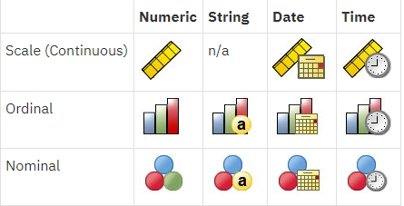

Preface
![logo]()
This document is a set of course notes for several Applied Statistics courses at California State University, Chico. This is not a textbook replacement, and topics covered will vary depending on the instructor. To make this clear we use the term notebook to refer to this document so as not to be confused with a traditional textbook.
Some data and examples in this notebook are drawn from Practical Multivariate Analysis, 6tth ed, Afifi, May, Donatello, Clark and used with permission by the authors.

This work is licensed under a Creative Commons Attribution-NonCommercial 4.0 International License.


1 Workflow and Data Cleaning
Once the data are available from a study there are still a number of steps that must be undertaken to get them into shape for analysis.
One of the most misunderstood parts of the analysis process is the data preparation stage. To say that 70% of any analysis is spent on the data management stage is not an understatement.
This chapter provides information on topics related to data processing and corresponds to :book: PMA6 Chapter 3.
1.1 Generating a reproducible workflows
Reproducibility is the ability for any researcher to take the same data set and run the same set of software program instructions as another researcher and achieve the same results.
The goal is to create an exact record of what was done to a data set to produce a specific result. To achieve reproducibility, we believe that three things must be present:
- The un-processed data are connected directly to software code file(s) that perform data preparation techniques.
- The processed data are connected directly to other software code file(s) that perform the analyses.
- All data and code files are self-contained such that they could be given to another researcher to execute the code commands on a separate computer and achieve the same results as the original author.

PrepareData
 Why do we need a codebook?
Why do we need a codebook?
- You are your own collaborator 6 months from now. Make sure you will be able to understand what you were doing.
- Investing the time to do things clearly and in a reproducible manner will make your future self happy.
- Comment your code with explanations and instructions.
- How did you get from point A to B?
- Why did you recode this variable in this manner?
- We need to record those steps (not just for posterity).
- This means your code must be saved in a script file.
- Include sufficient notes to yourself describing what you are doing and why.
- For R, this can be in a
.Ror.RMDfile. I always prefer the latter. - For SPSS you can specify to
paste the syntaxand copy into a.spsscript file. - For SAS you’ll use a
.sasfile - For STATA this will be a
.dofile

Repro
Figure Credits: Roger Peng
1.1.1 Literate programming
- Programming paradigm introduced by Knuth (1984)
- Explain the logic of the program or analysis process in a natural language,
- Small code snippets included at each step act as a full set of instructions that can be executed to reproduce the result/analysis being discussed.
Literate programming tools are integrated into most common statistical packages
- Markdown (R, Stata)
- \(\LaTeX\) (R, SAS, Stata)
1.1.2 Reproducible Research + Literate Programming
Practicing reproducible research techniques using literate programming tools allows such major updates to be a simple matter of re-compiling all coded instructions using the updated data set.
The effort then is reduced to a careful review and update of any written results.
Using literate programming tools create formatted documents
- section headers
- bold and italicized words
- tables and graphics with built-in captions
in a streamlined manner that is fully synchronized with the code itself.
The author writes the text explanations, interpretations, and code in the statistical software program itself, and the program will execute all commands and combine the text, code and output all together into a final dynamic document.
What stages of the pipeline shown above can we conduct using literate programming tools?
1.2 Import data
This section uses the raw depression data set from the Afifi et.al. textbook.
library(ggplot2)
depress <- read.table("https://norcalbiostat.netlify.com/data/Depress.txt",
sep="\t", header=TRUE) SPSS syntax will look similar like this:
GET DATA /TYPE=XLSX
/FILE='C:\path\to\file.xlsx'
/SHEET=name 'Name-of-Sheet'
/CELLRANGE=full
/READNAMES=on
/ASSUMEDSTRWIDTH=32767.
EXECUTE.
DATASET NAME DataSetExcel WINDOW=FRONT.Reference on importing data into SPSS: https://libguides.library.kent.edu/SPSS/ImportData.
The absolute first thing you should do is to look at your raw data table. Are the column headers variable names? Did all the rows get read in? Are there any extra columns or rows included?
1.2.1 Renaming variable names for sanity sake
Turn all variable names to lower case. This is especially frustrating for R and STATA users where syntax is case sensitive. This is completely optional but helpful
names(depress) <- tolower(names(depress))You should also rename any variable that has spaces or special characters in the name.
1.3 Data Management
Questions to ask yourself (and the data) while reviewing the codebook to choose variables to be used in an analysis.
- Do you need to code out missing data?
- Missing values sometimes are recorded as something like MISSING or -99?
- Do you need to make response codes more logical?
- Some systems will record 1=YES and 2=NO. This should be changed to 0=NO.
- Do you need to recode numerical variables to categorical?
- Sometimes categorical data will be recorded as 1, 2, 3 etc when those numbers represent named categories.
- Do you need to create secondary variables?
- Such as an average across measures to create a score.
Some of these answers will come only after you look at your data. This can be looking at the raw data itself but also looking at tables and charts generated from the data. Often when you try to create a plot or table you will encounter an error or something odd looking that will be the notification that something has to be adjusted.
Let’s look at a few of the common data management processes.
1.3.1 Missing data
In Excel, missing data can show up as a blank cell. In SPSS it is represented as a . period. R displays missing data as NA values.
Missing Data in SPSS: https://stats.idre.ucla.edu/spss/modules/missing-data/
Why would data be missing? Other than the obvious data entry errors, tech glitches or just non-cooperative plants or people, sometimes values are out of range and you would rather delete them than change their value (data edit).
Lets look at the religion variable in the depression data set.
table(depress$relig, useNA="always")
##
## 1 2 3 4 6 <NA>
## 155 51 30 56 2 0Looking at the codebook, there is no category 6 for religion. Let’s change all values to NA.
depress$relig[depress$relig==6] <- NAThis code says take all rows where relig is equal to 6, and change them to NA.
Confirm recode.
table(depress$relig, useNA="always")
##
## 1 2 3 4 <NA>
## 155 51 30 56 2Notice the use of the useNA="always" argument. If we just looked at the base table without this argument, we would have never known there was missing data!
table(depress$relig)
##
## 1 2 3 4
## 155 51 30 56What about continuous variables? Well there happens to be no other missing data in this data set, so let’s make up a set of 7 data points stored in a variable named y.
y <- c(1, 2, 3, NA, 4, NA, 6)
y
## [1] 1 2 3 NA 4 NA 6The #1 way to identify missing data in a continuous variable is by looking at the summary() values.
mean(y)
## [1] NA
summary(y)
## Min. 1st Qu. Median Mean 3rd Qu. Max. NA's
## 1.0 2.0 3.0 3.2 4.0 6.0 2
mean(y, na.rm=TRUE)
## [1] 3.2In R, any arithmetic function (like addition, multiplication) on missing data results in a missing value. The na.rm=TRUE toggle tells R to calculate the complete case mean. This is a biased measure of the mean, but missing data is a topic worthy of it’s own course.
1.3.2 Identifying Variable Types
The str function is short for structure. This shows you the variable names, what data types R thinks each variable are, and some of the raw data. You can also use the view() function to open the data as a similar spreadsheet format, or head() to see the top 6 rows of the data. The latter is sometimes less than helpful for a very large data set.
str(depress)
## 'data.frame': 294 obs. of 37 variables:
## $ id : int 1 2 3 4 5 6 7 8 9 10 ...
## $ sex : int 2 1 2 2 2 1 2 1 2 1 ...
## $ age : int 68 58 45 50 33 24 58 22 47 30 ...
## $ marital : int 5 3 2 3 4 2 2 1 2 2 ...
## $ educat : int 2 4 3 3 3 3 2 3 3 2 ...
## $ employ : int 4 1 1 3 1 1 5 1 4 1 ...
## $ income : int 4 15 28 9 35 11 11 9 23 35 ...
## $ relig : int 1 1 1 1 1 1 1 1 2 4 ...
## $ c1 : int 0 0 0 0 0 0 2 0 0 0 ...
## $ c2 : int 0 0 0 0 0 0 1 1 1 0 ...
## $ c3 : int 0 1 0 0 0 0 1 2 1 0 ...
## $ c4 : int 0 0 0 0 0 0 2 0 0 0 ...
## $ c5 : int 0 0 1 1 0 0 1 2 0 0 ...
## $ c6 : int 0 0 0 1 0 0 0 1 3 0 ...
## $ c7 : int 0 0 0 0 0 0 0 0 0 0 ...
## $ c8 : int 0 0 0 3 3 0 2 0 0 0 ...
## $ c9 : int 0 0 0 0 3 1 2 0 0 0 ...
## $ c10 : int 0 0 0 0 0 0 0 0 0 0 ...
## $ c11 : int 0 0 0 0 0 0 0 0 0 0 ...
## $ c12 : int 0 1 0 0 0 1 0 0 3 0 ...
## $ c13 : int 0 0 0 0 0 2 0 0 0 0 ...
## $ c14 : int 0 0 1 0 0 0 0 0 3 0 ...
## $ c15 : int 0 1 1 0 0 0 3 0 2 0 ...
## $ c16 : int 0 0 1 0 0 2 0 1 3 0 ...
## $ c17 : int 0 1 0 0 0 1 0 1 0 0 ...
## $ c18 : int 0 0 0 0 0 0 0 1 0 0 ...
## $ c19 : int 0 0 0 0 0 0 0 1 0 0 ...
## $ c20 : int 0 0 0 0 0 0 1 0 0 0 ...
## $ cesd : int 0 4 4 5 6 7 15 10 16 0 ...
## $ cases : int 0 0 0 0 0 0 0 0 1 0 ...
## $ drink : int 2 1 1 2 1 1 2 2 1 1 ...
## $ health : int 2 1 2 1 1 1 3 1 4 1 ...
## $ regdoc : int 1 1 1 1 1 1 1 2 1 1 ...
## $ treat : int 1 1 1 2 1 1 1 2 1 2 ...
## $ beddays : int 0 0 0 0 1 0 0 0 1 0 ...
## $ acuteill: int 0 0 0 0 1 1 1 1 0 0 ...
## $ chronill: int 1 1 0 1 0 1 1 0 1 0 ...Right away this tells me that R thinks all variables are numeric integers, not categorical variables. This will have to be changed. We’ll get to that in a moment.
In SPSS you’ll the following set of icons to tell you what data types the program thinks each column is:

Consider the variable that measures marital status.
table(depress$marital)
##
## 1 2 3 4 5
## 73 127 43 13 38
str(depress$marital)
## int [1:294] 5 3 2 3 4 2 2 1 2 2 ...
class(depress$marital)
## [1] "integer" What data type does R see this variable as?
When variables have numerical levels it is necessary to ensure that the program knows it is a factor variable.
The following code uses the factor() function to take the marital status variable and convert it into a factor variable with specified labels that match the codebook.
depress$marital <- factor(depress$marital,
labels = c("Never Married", "Married", "Divorced", "Separated", "Widowed"))It is important to confirm the recode worked. If it did not you will have to re-read in the raw data set again since the variable marital was replaced.
table(depress$marital)
##
## Never Married Married Divorced Separated Widowed
## 73 127 43 13 38
class(depress$marital)
## [1] "factor"1.3.3 Outliers
Let’s look at the age variable in the depression data set.
par(mfrow=c(1,2))
boxplot(depress$age)
hist(depress$age)
Just looking at the data graphically raises no red flags. The boxplot shows no outlying values and the histogram does not look wildly skewed. This is where knowledge about the data set is essential. The codebook does not provide a valid range for the data, but the description of the data starting on page 3 in the textbook clarifies that this data set is on adults. In the research world, this specifies 18 years or older.
Now look back at the graphics. See anything odd? It appears as if the data go pretty far below 20, possibly below 18. Let’s check the numerical summary to get more details.
summary(depress$age)
## Min. 1st Qu. Median Mean 3rd Qu. Max.
## 9.00 28.00 42.50 44.38 59.00 89.00The minimum value is a 9, which is outside the range of valid values for this variable. This is where you, as a statistician, data analyst or researcher goes back to the PI and asks for advice. Should this data be set to missing, or edited in a way that changes this data point into a valid piece of data.
Another visual way to look for outliers in a continuous measurement is to create a boxplot. Here we look at boxplots of income across marital status category.
ggplot(depress, aes(y=income, x=marital)) + geom_boxplot()
While there are a few potential outliers (denoted by the dots), there are none so far away from the rest of the group (or at values such as 99 or -99 that may indicate missing codes) that we need to be concerned about.
As an example of a common data entry error, and for demonstration purposes, I went in and changed a 19 to a 9. So the correct thing to do here is to change that 9, back to a 19. This is a very good use of the ifelse() function.
depress$age <- ifelse(depress$age==9, 19, depress$age)The logical statement is depress$age9. Wherever this is true, replace the value of depress$age with 19, wherever this is false then keep the value of depress$age unchanged (by “replacing” the new value with the same old value).
Alternatively, you can change that one value using bracket notation. Here you are specifying that you only want the rows where age==9, and directly assign a value of 19 to those rows.
depress$age[depress$age==9] <- 19Confirm the recode.
summary(depress$age)
## Min. 1st Qu. Median Mean 3rd Qu. Max.
## 18.00 28.00 42.50 44.41 59.00 89.00Looks like it worked.
1.3.4 Creating secondary variables
1.3.4.1 Collapsing categorical variables into fewer categories
For unbiased and accurate results of a statistical analysis, sufficient data has to be present. Often times once you start slicing and dicing the data to only look at certain groups, or if you are interested in the behavior of certain variables across levels of another variable, sometimes you start to run into small sample size problems.
For example, consider marital status again. There are only 13 people who report being separated. This could potentially be too small of a group size for valid statistical analysis.
One way to deal with insufficient data within a certain category is to collapse categories. The following code uses the recode() function from the car package to create a new variable that I am calling marital2 that combines the Divorced and Separated levels.
library(car)
marital2 <- recode(depress$marital, "'Divorced' = 'Sep/Div'; 'Separated' = 'Sep/Div'")Always confirm your recodes.
table(depress$marital, marital2, useNA="always")
## marital2
## Married Never Married Sep/Div Widowed <NA>
## Never Married 0 73 0 0 0
## Married 127 0 0 0 0
## Divorced 0 0 43 0 0
## Separated 0 0 13 0 0
## Widowed 0 0 0 38 0
## <NA> 0 0 0 0 0This confirms that records where marital (rows) is Divorced or Separated have the value of Sep/Div for marital2 (columns). And that no missing data crept up in the process. Now I can drop the temporary marital2 variable and actually fix marital. (keeping it clean)
depress$marital <- recode(depress$marital, "'Divorced' = 'Sep/Div'; 'Separated' = 'Sep/Div'")
rm(marital2)1.3.4.2 Binning a continuous variable into categorical ranges.
Let’s create a new variable that categorizes income into the following ranges: <30, [30, 40), [40,50), [50, 60), 60+.
The easiest way is to use the cut2 function in the package Hmisc. Note you don’t have to load the package fully to use a function from within that package. Useful for times when you only need to use a function once or twice.
depress$inc_cut <- Hmisc::cut2(depress$income, cuts=c(30,40,50,60))
table(depress$inc_cut)
##
## [ 2,30) [30,40) [40,50) [50,60) [60,65]
## 231 28 16 9 101.3.4.3 Dichotomizing a measure into 2 categories
Dichotomous variables tend to be binary indicator variables where a code of 1 is the level you’re interested in.
For example, gender is coded as 2=Female and 1=Male. This is in the right direction but it needs to be 0/1.
depress$sex <- depress$sex -1
table(depress$sex)
##
## 0 1
## 111 1830/1 binary coding is mandatory for many analyses. One simple reason is that now you can calculate the mean and interpret it as a proportion.
mean(depress$sex)
## [1] 0.62244962% of individuals in this data set are female.
Sometimes the data is recorded as 1/2 (Yes/No), so just subtracting from 1 doesn’t create a positive indicator of the variable. For example, drink=1 if they are a regular drinker, and drink=2 if they are not. We want not drinking to be coded as 0, not 2.
table(depress$drink)
##
## 1 2
## 234 60The ifelse() function says that if depress$DRINK has a value equal to 2 ==2, then change the value to 0. Otherwise leave it alone.
depress$drink <- ifelse(depress$drink==2, 0, depress$drink)
table(depress$drink)
##
## 0 1
## 60 2341.3.4.4 Sum or Average values across multiple variables
The Center for Epidemiological Studies Depression Scale (CESD) is series of questions asked to a person to measure their level of depression. CESD is calculated as the sum of all 20 component variables, and is already on this data set. Let’s create a new variable named sleep as subscale for sleep quality by adding up question numbers 5, 11, and 19.
Reference: http://cesd-r.com/cesdr/
depress$sleep <- depress$c5 + depress$c11 + depress$c19
## # depress <- depress %>% mutate(sleep = c5+c11+c19) # Not run. dplyr examplesummary(depress$sleep)
## Min. 1st Qu. Median Mean 3rd Qu. Max.
## 0.000 0.000 1.000 1.167 2.000 7.0001.3.4.5 Transformations for Normality
Let’s look at assessing normal distributions using the cleaned depression data set.
rm(depress) # remove the current version that was used in the previous part of this markdown file
depress <- read.table("https://norcalbiostat.netlify.com/data/depress_081217.txt", sep="\t", header=TRUE) hist(depress$income, prob=TRUE, xlab="Annual income (in thousands)",
main="Histogram and Density curve of Income", ylab="")
lines(density(depress$income), col="blue")
summary(depress$income)
## Min. 1st Qu. Median Mean 3rd Qu. Max.
## 2.00 9.00 15.00 20.57 28.00 65.00The distribution of annual income is slightly skewed right with a mean of $20.5k per year and a median of $15k per year income. The range of values goes from $2k to $65k. Reported income above $40k appear to have been rounded to the nearest $10k, because there are noticeable peaks at $40k, $50k, and $60k.
In general, transformations are more effective when the the standard deviation is large relative to the mean. One rule of thumb is if the sd/mean ratio is less than 1/4, a transformation may not be necessary.
sd(depress$income) / mean(depress$income)
## [1] 0.743147Alternatively Hoaglin, Mosteller and Tukey (1985) showed that if the largest observation divided by the smallest observation is over 2, then the data may not be sufficiently variable for the transformation to be decisive.
max(depress$income) / (min(depress$income)+.1)
## [1] 30.95238Note these rules are not meaningful for data without a natural zero.
Another common method of assessing normality is to create a normal probability (or normal quantile) plot.
qqnorm(depress$income);qqline(depress$income, col="red")
The points on the normal probability plot do not follow the red reference line very well. The dots show a more curved, or U shaped form rather than following a linear line. This is another indication that the data is skewed and a transformation for normality should be created.
- Create three new variables:
log10incas the log base 10 of Income,logincas the natural log of Income, andxincomewhich is equal to the negative of one divided by the cubic root of income.
log10inc <- log10(depress$income)
loginc <- log(depress$income)
xincome <- -1/(depress$income)^(-1/3)- Create a single plot that display normal probability plots for the original, and each of the three transformations of income. Use the base graphics grid organizer
par(mfrow=c(r,c))whereris the number of rows andcis the number of columns. Which transformation does a better job of normalizing the distribution of Income?
par(mfrow=c(2,2)) # Try (4,1) and (1,4) to see how this works.
qqnorm(depress$income, main="Income"); qqline(depress$income,col="blue")
qqnorm(log10inc, main="Log 10"); qqline(log10inc, col="blue")
qqnorm(loginc, main = "Natural Log"); qqline(loginc, col="blue")
qqnorm(xincome, main="-1/cuberoot(income)"); qqline(xincome, col="blue")
1.4 Saving your changes
You’ve just made a ton of changes!
- Save or export the new data set to your computer.
- Edit the codebook to reflect the changes that you made.
- In a production situation, or when changes aren’t being made on a rapid basis, it is common to include the date in the file name.
- Keep the data, codebook and data management file in the same folder.
The Sys.Date() function takes the current date from your computer. The value is then formatted nicely for human consumption and added (pasted) to the file name before written to the working directory as a new text file.
depress_clean <- depress %>% select(var1, var2, var3)
date <- format(Sys.Date(), "%m%d%y")
filename <- paste("depress_", date, ".txt", sep="")
write.table(depress_clean, filename, sep="\t", row.names=FALSE)SPSS users commonly save cleaned data as a .sav format.
SAVE outfile='FilePath\depress_sysdate.sav'
/KEEP = Variable_Name1 Variable_Name2.
EXECUTE.Saving only selected variables
- In SPSS the
/KEEPstatement demonstrated above only writes the variable names listed to the saved data set. This can be very useful when dealing with data sets with a large number of variables. - For R users, using
dplyrselect is generally the fastest.
1.5 Wide vs. Long data
The data on Lung function originally was recorded in wide format, with separate variables for mother’s and father’s FEV1 score (MFEV1 and FFEV). In this format, the data is one record per family.
fev <- read.delim("https://norcalbiostat.netlify.com/data/Lung_081217.txt",
sep="\t", header=TRUE)
head(fev)
## ID AREA FSEX FAGE FHEIGHT FWEIGHT FFVC FFEV1 MSEX MAGE MHEIGHT MWEIGHT MFVC
## 1 1 1 1 53 61 161 391 3.23 2 43 62 136 370
## 2 2 1 1 40 72 198 441 3.95 2 38 66 160 411
## 3 3 1 1 26 69 210 445 3.47 2 27 59 114 309
## 4 4 1 1 34 68 187 433 3.74 2 36 58 123 265
## 5 5 1 1 46 61 121 354 2.90 2 39 62 128 245
## 6 6 1 1 44 72 153 610 4.91 2 36 66 125 349
## MFEV1 OCSEX OCAGE OCHEIGHT OCWEIGHT OCFVC OCFEV1 MCSEX MCAGE MCHEIGHT
## 1 3.31 2 12 59 115 296 2.79 NA NA NA
## 2 3.47 1 10 56 66 323 2.39 NA NA NA
## 3 2.65 1 8 50 59 114 1.11 NA NA NA
## 4 2.06 2 11 57 106 256 1.85 1 9 49
## 5 2.33 1 16 61 88 260 2.47 2 12 60
## 6 3.06 1 15 67 100 389 3.55 1 13 57
## MCWEIGHT MCFVC MCFEV1 YCSEX YCAGE YCHEIGHT YCWEIGHT YCFVC YCFEV1
## 1 NA NA NA NA NA NA NA NA NA
## 2 NA NA NA NA NA NA NA NA NA
## 3 NA NA NA NA NA NA NA NA NA
## 4 56 159 1.30 NA NA NA NA NA NA
## 5 85 268 2.34 2 10 50 53 154 1.43
## 6 87 276 2.37 2 10 55 72 195 1.69To analyze the effect of gender on FEV, the data need to be in long format, with a single variable for fev and a separate variable for gender. The following code chunk demonstrates one method of combining data on height, gender, age and FEV1 for both males and females.
fev2 <- data.frame(gender = c(fev$FSEX, fev$MSEX),
rev = c(fev$FFEV1, fev$MFEV1),
ht = c(fev$FHEIGHT, fev$MHEIGHT),
age = c(fev$FAGE, fev$MAGE))
fev2$gender <- factor(fev2$gender, labels=c("M", "F"))
head(fev2)
## gender rev ht age
## 1 M 3.23 61 53
## 2 M 3.95 72 40
## 3 M 3.47 69 26
## 4 M 3.74 68 34
## 5 M 2.90 61 46
## 6 M 4.91 72 44Nearly all analysis procedures and most graphing procedures require the data to be in long format. There are several R packages that can help with this including reshape2 and tidyr.
1.6 Dealing with missing data post-analysis
- Case when: you want to add model predictions to the data set, but you have missing data that was automatically dropped prior to analysis.
If your original data had missing values, here is one way to get the factor scores for available data back onto the data set. Alternatively you can look into methods to conduct factor analysis with missing data (FactomineR)
- If no ID column exists, create one:
id = 1:NROW(data) - Use
select()to extract ID and all variables used in the factor analysis - Do
na.omit() - Conduct factor analysis on this subsetted data set
- Use
bind_cols()to add columns containing factor scores to this subsetted data set as described above - Use
select()to only keep the ID and the factor score variables - Then
left_join()the factor scores back to the original data, using the ID variable as the joining key.
2 Visualizing Data
Visualizing your data is hands down the most important thing you can learn to do. There are links to additional resources at the end of this document for additional learning.
There are two audiences in mind when creating data visualizations:
- For your eyes only (FYEO). These are quick and dirty plots, without annotation. Meant to be looked at once or twice.
- To share with others. These need to completely stand on their own. Axes labels, titles, colors as needed, possibly captions.
You will see, and slowly learn, how to add these annotations and how to clean up your graphics to make them sharable. ggplot2 already does a lot of this work for you.
We will also use the two most common methods used to create plots. 1) Base graphics, 2) the ggplot2 package. Each have their own advantages and disadvantages. If you have not done so already, go ahead and install the ggplot2 package now.
For almost every plot discussed we will create two types of plots
- FYEO - using base graphics. (Base == Comes with R) Very powerful, but can be technical.
- FYEO - using
ggplot2. Each have their own advantages and disadvantages.
As time permits I will update each section with a third type of plot -
- Sharable - Contains all bells and whistles needed to make it presentable to others.
Your task, should you choose to accept, is to follow along through this tutorial and at each step try to reproduce the plot shown. You can accomplish this by simply copying and pasting the syntax into a new R code (or R Markdown) document.
2.1 The syntax of ggplot
The reason we use the functions in ggplot2 is for consistency in the structure
of it’s arguments. Here is a bare bones generic plotting function:
ggplot(data, aes(x=x, y=y, col=col, fill=fill, group=group)) + geom_THING() 2.1.1 Required arguments
data: What data set is this plot using? This is ALWAYS the first argument.aes(): This is the aestetics of the plot. What’s variable is on the x, what is on the y? Do you want to color by another variable, perhaps fill some box by the value of another variable, or group by a variable.geom_THING(): Every plot has to have a geometry. What is the shape of the thing you want to plot? Do you want to plot points - usegeom_points(). Want to connect those points with a line? Usegeom_lines(). We will see many varieties in this lab.
2.1.2 Optional but helpful arguments
ggtitle: This is the overall plot titlexlab()andylab()axis titles.- scale_xy_blah to extend limits
- scale_fill_blah to specifying a fixed color, and change auto legend title
- themes
For a full , and comprehensive tutorial and reference guide on how to do nearly anything in ggplot – this is by far my favorite reference http://www.cookbook-r.com/Graphs/ I reference things in there (like how to remove or change the title of a legend) constantly.
2.2 The Data
We will use a subset of the diamonds dataset that comes with the ggplot2 package. This dataset contains the prices and other attributes of almost 54,000 diamonds. Review ?diamonds to learn about the variables we will be using.
data("diamonds")
set.seed(1410) # Make the sample reproducible
dsmall <- diamonds[sample(nrow(diamonds), 1000), ]2.3 Univariate Visualizations
2.3.1 Categorical variables
Both Nominal and Ordinal data types can be visualized using the same methods: tables, barcharts and pie charts.
2.3.1.1 Tables
Tables are the most common way to get summary statistics of a categorical variable. The table() function produces a frequency table, where each entry represents the number of records in the data set holding the corresponding labeled value.
table(dsmall$cut)
##
## Fair Good Very Good Premium Ideal
## 34 99 220 257 390There are 27 Fair quality diamonds, 83 good quality and 387 Ideal quality diamonds in this sample.
2.3.1.2 Barcharts / Barplots
A Barchart or barplot takes these frequencies, and draws bars along the X-axis where the height of the bars is determined by the frequencies seen in the table.
base
To create a barplot/barchart in base graphics requires the data to be in summarized in a table form first. Then the result of the table is plotted. The first argument is the table to be plotted, the main argument controls the title.
dc <- table(dsmall$cut)
barplot(dc, main="Barchart using base graphics")
ggplot
The geometry needed to draw a barchart in ggplot is geom_bar().
ggplot(dsmall, aes(x=cut)) + geom_bar()
pretty The biggest addition to a barchart is the numbers on top of the bars. This isn’t mandatory, but it does make it nice.
ggplot(dsmall, aes(x=cut)) + theme_bw() +
geom_bar(aes(y = ..count..)) + ggtitle("Frequnency of diamonds by cut type") +
geom_text(aes(y=..count.. + 10, label=..count..), stat='count', size = 5)
2.3.1.3 Plotting Proportions
Often you don’t want to compare counts but percents. To accomplish this, we have to aggregate the data to calculate the proportions first, then plot the aggregated data using geom_col to create the columns.
cut.props <- data.frame(prop.table(table(dsmall$cut)))
cut.props # what does this data look like?
## Var1 Freq
## 1 Fair 0.034
## 2 Good 0.099
## 3 Very Good 0.220
## 4 Premium 0.257
## 5 Ideal 0.390
ggplot(cut.props, aes(x=Var1, y=Freq)) + geom_col() +
ylab("Proportion") + xlab("Cut type") +
ggtitle("Proportion of diamonds by cut type")
2.3.1.4 Cleveland Dot Plots
Another way to visualize categorical data that takes up less ink than bars is a Cleveland dot plot. Here again we are plotting summary data instead of the raw data. This uses the geom_segment that draws the lines from x=0 to the value of the proportion (named Freq because of the way data.frame works).
ggplot(cut.props, aes(x=Freq, y=Var1)) +
geom_point(size = 3) + xlab("Proportion of diamonds") +
theme_bw() + ylab("Cut Type") +
geom_segment(aes(x=0, xend=Freq, y=Var1, yend=Var1), color='grey50')
2.3.1.5 Pie Chart
Just like barplot(), pie() takes a table object as it’s argument.
base
dc <- table(dsmall$cut)
pie(dc)
Pie charts are my least favorite plotting type. Human eyeballs can’t distinguish between angles as well as we can with heights. A mandatory piece needed to make the wedges readable is to add the percentages of each wedge.
pie(dc, labels = paste0(names(dc), ' (', prop.table(dc)*100, "%)"))
ggplot
And here I thought pie charts couldn’t get worse… i’m not a fan at all of the ggplot version. So i’m not even going to show it. Here’s a link to another great tutorial that does show you how to make one.
However – Never say never. Here’s an example of a good use of pie charts. http://www.storytellingwithdata.com/blog/2019/8/8/forty-five-pie-charts-never-say-never
2.3.1.6 Waffle Chart
This type of chart is not natively found in the ggplot2 package, but it’s own waffle package. These are great for infographics.
Reference: https://www.r-bloggers.com/making-waffle-charts-in-r-with-the-new-waffle-package/
library(waffle)
waffle(dc/10, rows=5, size=0.5,
title="Cut quality of diamond",
xlab="1 square == 10 diamonds")
2.3.2 Continuous Measures
Here we can look at the price, carat, and depth of the diamonds.
2.3.2.1 Dotplot
plot(dsmall$depth)
The base function plot() creates a dotplot for a continuous variable. The value of the variable is plotted on the y axis, and the index, or row number, is plotted on the x axis. This gives you a nice, quick way to see the values of the data.
Often you are not interested in the individual values of each data point, but the distribution of the data. In other words, where is the majority of the data? Does it look symmetric around some central point? Around what values do the bulk of the data lie?
2.3.2.2 Histograms
Rather than showing the value of each observation, we prefer to think of the value as belonging to a . The height of the bars in a histogram display the frequency of values that fall into those of those bins. For example if we cut the poverty rates into 7 bins of equal width, the frequency table would look like this:
table(cut(dsmall$depth, 7))
##
## (55.3,57.6] (57.6,59.8] (59.8,62.1] (62.1,64.4] (64.4,66.7] (66.7,68.9]
## 6 79 536 351 23 3
## (68.9,71.2]
## 2In a histogram, the binned counts are plotted as bars into a histogram. Note that the x-axis is continuous, so the bars touch. This is unlike the barchart that has a categorical x-axis, and vertical bars that are separated.
base You can make a histogram in base graphics super easy.
hist(dsmall$depth)
And it doesn’t take too much to clean it up. Here you can specify the number of bins by specifying how many breaks should be made in the data (the number of breaks controls the number of bins, and bin width) and use col for the fill color.
hist(dsmall$depth, xlab="depth", main="Histogram of diamond depth", col="cyan", breaks=20)
ggplot
ggplot(dsmall, aes(x=depth)) + geom_histogram(binwidth = 2.2)
The binwidth here is set by looking at the cut points above that were used to create 7 bins. Notice that darkgrey is the default fill color, but makes it hard to differentiate between the bars. So we’ll make the outline black using colour, and fill the bars with white.
ggplot(dsmall, aes(x=depth)) + geom_histogram(colour="black", fill="white") +
ggtitle("Distribution of diamond depth")
Note I did not specify the binwidth argument here. The size of the bins can hide features from your graph, the default value for ggplot2 is range/30 and usually is a good choice.
2.3.2.3 Density plots
To get a better idea of the true shape of the distribution we can “smooth” out the bins and create what’s called a density plot or curve. Notice that the shape of this distribution curve is much more… “wigglier” than the histogram may have implied.
base
plot(density(dsmall$depth))
Awesome title huh? (NOT)
ggplot2
ggplot(dsmall, aes(x=depth)) + geom_density()
2.3.2.4 Histograms + density
Often is is more helpful to have the density (or kernel density) plot on top of a histogram plot.
Base
Since the height of the bars in a histogram default to showing the frequency of records in the data set within that bin, we need to 1) scale the height so that it’s a relative frequency, and then use the lines() function to add a density() line on top.
hist(dsmall$depth, prob=TRUE)
lines(density(dsmall$depth), col="blue")
ggplot
The syntax starts the same, we’ll add a new geom, geom_density and color the line blue. Then we add the histogram geom using geom_histogram but must specify that the y axis should be on the density, not frequency, scale. Note that this has to go inside the aesthetic statement aes(). I’m also going to get rid of the fill by using NA so it doesn’t plot over the density line.
ggplot(dsmall, aes(x=depth)) + geom_density(col="blue") +
geom_histogram(aes(y=..density..), colour="black", fill=NA)
2.3.2.5 Boxplots
Another very common way to visualize the distribution of a continuous variable is using a boxplot. Boxplots are useful for quickly identifying where the bulk of your data lie. R specifically draws a “modified” boxplot where values that are considered outliers are plotted as dots.
base
boxplot(dsmall$depth)
Notice that the only axis labeled is the y=axis. Like a dotplot the x axis, or “width”, of the boxplot is meaningless here. We can make the axis more readable by flipping the plot on it’s side.
boxplot(dsmall$depth, horizontal = TRUE, main="Distribution of diamond prices", xlab="Dollars")
Horizontal is a bit easier to read in my opinion.
ggplot What about ggplot? ggplot doesn’t really like to do univariate boxplots. We can get around that by specifying that we want the box placed at a specific x value.
ggplot(dsmall, aes(x=1, y=depth)) + geom_boxplot()
To flip it horizontal you may think to simply swap x and y? Good thinking. Of course it wouldn’t be that easy. So let’s just flip the whole darned plot on it’s coordinate axis.
ggplot(dsmall, aes(x=1, y=depth)) + geom_boxplot() + coord_flip()

2.3.2.7 Boxplot + Violin plots
Overlaying a boxplot and a violin plot serves a similar purpose to Histograms + Density plots.
ggplot(dsmall, aes(x=1, y=depth)) + geom_violin() + geom_boxplot()
Better appearance - different levels of transparency of the box and violin.
ggplot(dsmall, aes(x=1, y=depth)) + xlab("") + theme_bw() +
geom_violin(fill="blue", alpha=.1) +
geom_boxplot(fill="blue", alpha=.5, width=.2) +
theme(axis.title.x=element_blank(),
axis.text.x=element_blank(),
axis.ticks.x=element_blank())
2.3.2.8 Normal QQ plots
The last useful plot that we will do on a single continuous variable is to assess the normality of the distribution. Basically how close the data follows a normal distribution.
base
qqnorm(dsmall$price)
qqline(dsmall$price, col="red")
The line I make red because it is a reference line. The closer the points are to following this line, the more “normal” the shape of the distribution is. Price has some pretty strong deviation away from that line. Below I have plotted what a normal distribution looks like as an example of a “perfect” fit.
z <- rnorm(1000)
qqnorm(z)
qqline(z, col="blue")
ggplot
qq (or qnorm) plots specifically plot the data against a theoretical distribution. That means in the aes() aesthetic argument we don’t specify either x or y, but instead the sample= is the variable we want to plot.
ggplot(dsmall, aes(sample=price)) + stat_qq()
Additional references on making qqplots in ggplot: http://www.sthda.com/english/wiki/ggplot2-qq-plot-quantile-quantile-graph-quick-start-guide-r-software-and-data-visualization
2.4 Bivariate Visualizations
2.4.1 Categorical v. Categorical
2.4.1.1 Two-way Frequency tables
Cross-tabs, cross-tabulations and two-way tables (all the same thing, different names) can be created by using the table() function.
The frequency table is constructed using the table() function.
table(dsmall$cut, dsmall$color)
##
## D E F G H I J
## Fair 5 6 7 4 5 4 3
## Good 18 23 11 16 17 7 7
## Very Good 26 37 46 40 33 25 13
## Premium 34 53 43 49 41 24 13
## Ideal 54 63 79 92 53 34 15There are 4 Fair diamonds with color D, and 21 Ideal quality diamonds with color J.
2.4.1.2 Two-way Proprtion tables
Choose your percentages depending on your research question. What are you wanting to compare?
Best practices:
- Explanatory variable on the rows
- Response variable on the columns
- Calculate row %’s as the % of the response for each explanatory group.
Here are demonstrations of how the interpretation of the percents change depending on what the denominator is.
Cell proportions
Wrapping prop.table() around a table gives you the cell proportions.
prop.table(table(dsmall$cut, dsmall$color))
##
## D E F G H I J
## Fair 0.005 0.006 0.007 0.004 0.005 0.004 0.003
## Good 0.018 0.023 0.011 0.016 0.017 0.007 0.007
## Very Good 0.026 0.037 0.046 0.040 0.033 0.025 0.013
## Premium 0.034 0.053 0.043 0.049 0.041 0.024 0.013
## Ideal 0.054 0.063 0.079 0.092 0.053 0.034 0.0150.4% of all diamonds are D color and Fair cut, 2.1% are J color and Ideal cut.
Row proportions
To get the row proportions, you specify margin=1. The percentages now add up to 1 across the rows.
round(prop.table(table(dsmall$cut, dsmall$color), margin=1),3)
##
## D E F G H I J
## Fair 0.147 0.176 0.206 0.118 0.147 0.118 0.088
## Good 0.182 0.232 0.111 0.162 0.172 0.071 0.071
## Very Good 0.118 0.168 0.209 0.182 0.150 0.114 0.059
## Premium 0.132 0.206 0.167 0.191 0.160 0.093 0.051
## Ideal 0.138 0.162 0.203 0.236 0.136 0.087 0.03814.8% of all Fair quality diamonds are color D. 5.4% of all Ideal quality diamonds have color J.
Column proportions
To get the column proportions, you specify margin=2. The percentages now add up to 1 down the columns.
round(prop.table(table(dsmall$cut, dsmall$color), margin=2),3)
##
## D E F G H I J
## Fair 0.036 0.033 0.038 0.020 0.034 0.043 0.059
## Good 0.131 0.126 0.059 0.080 0.114 0.074 0.137
## Very Good 0.190 0.203 0.247 0.199 0.221 0.266 0.255
## Premium 0.248 0.291 0.231 0.244 0.275 0.255 0.255
## Ideal 0.394 0.346 0.425 0.458 0.356 0.362 0.2942.7% of all D color diamonds are of Fair quality. 44.7% of all J color diamonds are of Ideal quality.
2.4.1.3 Grouped bar charts
To compare proportions of one categorical variable within the same level of another, is to use grouped barcharts.
base As before, the object to be plotted needs to be the result of a table.
cc <- table(dsmall$cut, dsmall$color)
barplot(cc)
Stacked bars can be difficult to interpret, and very difficult to compare values between groups. A side by side barchart is preferable.
The beside=TRUE is what controls the placement of the bars.
barplot(cc, main="quick side by side barchart using base graphics", beside=TRUE)
ggplot
Again plot the cut on the x axis, but then fill using the second categorical variable. This has the effect of visualizing the row percents from the table above. The percent of color, within each type of cut.
ggplot(dsmall, aes(x=cut, fill=color)) + geom_bar()
Again the default is a stacked barchart. So we just specify position=dodge to put the bars side by side.
ggplot(dsmall, aes(x=cut, fill=color)) + geom_bar(position = "dodge")
And look, an automatic legend. What if I wanted to better compare cut within color group? This is the column percentages. Just switch which variable is the x axis and which one is used to fill the colors!
ggplot(dsmall, aes(x=color, fill=cut)) + geom_bar(position = "dodge")
For more than 2 colors I do not recommend choosing the colors yourself. I know little about color theory so I use the built-in color palettes. Here is a great cheatsheet about using color palettes.
And this easy change is why we love ggplot2.
2.4.2 Grouped bar charts with percentages
Not as easy as one would hope, but the solution is to calculate the desired percentages first and then plot the summary data using either geom_bar(stat='identity') or geom_col().
calc.props <- diamonds %>% group_by(color, cut) %>%
summarise(count=n()) %>%
mutate(pct=round(count/sum(count),3))
calc.props
## # A tibble: 35 × 4
## # Groups: color [7]
## color cut count pct
## <ord> <ord> <int> <dbl>
## 1 D Fair 163 0.024
## 2 D Good 662 0.098
## 3 D Very Good 1513 0.223
## 4 D Premium 1603 0.237
## 5 D Ideal 2834 0.418
## 6 E Fair 224 0.023
## 7 E Good 933 0.095
## 8 E Very Good 2400 0.245
## 9 E Premium 2337 0.239
## 10 E Ideal 3903 0.398
## # … with 25 more rows
## # ℹ Use `print(n = ...)` to see more rowsSince we’re plotting summary data, the height of the bars is specified using y=pct.
ggplot(calc.props, aes(x=color, fill=cut, y=pct)) +
geom_col(position="dodge") + theme_bw() 
Now set some options to the y axis using scale_y_continuous() to make the graph more accurate and readable. The labels=percent comes from the scales package.
library(scales)
ggplot(calc.props, aes(x=color, fill=cut, y=pct)) +
geom_col(position="dodge") + theme_bw() +
scale_y_continuous(limits=c(0,1), labels=percent)
2.4.2.1 sjPlot
sjPlot does a very nice job of being able to cleanly show not only n’s but percents.
library(sjPlot)
plot_xtab(dsmall$color, dsmall$cut, margin="row", coord.flip = TRUE) 
2.4.2.2 Mosaic plots
But what if you want to know how two categorical variables are related and you don’t want to look at two different barplots? Mosaic plots are a way to visualize the proportions in a table. So here’s the two-way table we’ll be plotting.
table(dsmall$cut, dsmall$color)
##
## D E F G H I J
## Fair 5 6 7 4 5 4 3
## Good 18 23 11 16 17 7 7
## Very Good 26 37 46 40 33 25 13
## Premium 34 53 43 49 41 24 13
## Ideal 54 63 79 92 53 34 15The syntax for a mosaic plot uses model notation, which is basically y ~ x where the ~ is read as “twiddle” or “tilde”. It’s to the left of your 1 key.
mosaicplot(cut~color, data=dsmall)
Helpful, ish. Here are two very useful options. In reverse obviousness, color applies shades of gray to one of the factor levels, and shade applies a color gradient scale to the cells in order of what is less than expected (red) to what is more than expected (blue) if these two factors were completely independent.
par(mfrow=c(1,2)) # display the plots in 1 row and 2 columns
mosaicplot(cut~color, data=dsmall, color=TRUE)
mosaicplot(cut~color, data=dsmall, shade=TRUE)
For example, there are fewer ‘Very Good’ cut diamonds that are color ‘G’, and fewer ‘Premium’ cut diamonds that are color ‘H’. As you can see, knowing what your data means when trying to interpret what the plots are telling you is essential.
That’s about all the ways you can plot categorical variables.
If you are wondering why there was no 3D barcharts demonstrated see
here,
here, and
here for other ways you can really screw up your visualization.
2.4.3 Continuous v. Continuous
2.4.3.1 Scatterplot
The most common method of visualizing the relationship between two continuous variables is by using a scatterplot.
base
Back to the plot() command. Here we use model notation again, so it’s \(y~x\).
plot(price~carat, data=dsmall)
Looks like for the most part as the carat value increases so does price. That makes sense.
ggplot With ggplot we specify both the x and y variables, and add a point.
ggplot(dsmall, aes(x=carat, y=price)) + geom_point()
Other Resources
2.4.3.2 Adding lines to the scatterplots
Two most common trend lines added to a scatterplots are the “best fit” straight line and the “lowess” smoother line.
base
The best fit line (in blue) gets added by using the abline() function wrapped around the linear model function lm(). Note it uses the same model notation syntax and the data= statement as the plot() function does. The lowess line is added using the lines() function, but the lowess() function itself doesn’t allow for the data= statement so we have to use $ sign notation.
plot(price~carat, data=dsmall)
abline(lm(price~carat, data=dsmall), col="blue")
lines(lowess(dsmall$price~dsmall$carat), col="red")
ggplot
With ggplot, we just add a geom_smooth() layer.
ggplot(dsmall, aes(x=carat, y=price)) + geom_point() + geom_smooth() 
Here the point-wise confidence interval for this lowess line is shown in grey. If you want to turn the confidence interval off, use se=FALSE. Also notice that the smoothing geom uses a different function or window than the lowess function used in base graphics.
Here it is again using the ggplot plotting function and adding another geom_smooth() layer for the lm (linear model) line in blue, and the lowess line (by not specifying a method) in red.
ggplot(dsmall, aes(x=carat, y=price)) + geom_point() +
geom_smooth(se=FALSE, method="lm", color="blue") +
geom_smooth(se=FALSE, color="red")
2.4.3.3 Line plots
Line plots connect each dot with a straight line. This is most often done when measuring trends of the response as the value of x increases (such as a time series)
We saw earlier that carat and price seemed possibly linear. Let see how the average price changes with carat.
library(dplyr)
price.per.carat <- dsmall %>% group_by(carat) %>% summarise(mean = mean(price))base
For base graphics, type=‘b’ means both points and lines, ‘l’ gives you just lines and ‘p’ gives you only points. You can find more plotting character options under ?pch.
plot(mean~carat, data=price.per.carat, type='l')
ggplot With ggplot we specify that we want a line geometry only.
ggplot(price.per.carat, aes(x=carat, y=mean)) + geom_line()
How does this relationship change with cut of the diamond? First lets get the average price per combination of carat and cut.
ppc2 <- dsmall %>% group_by(cut, carat) %>% summarise(mean = mean(price))base This plot can be created in base graphics, but it takes an advanced knowledge of the graphics system to do so. So I do not show it here.
ggplot This is where ggplot starts to excel in it’s ease of creating more complex plots. All we have to do is specify that we want the lines colored by the cut variable.
ggplot(ppc2, aes(x=carat, y=mean, col=cut)) + geom_line()
And we get one line per cut.
2.4.4 Continuous v. Categorical
Create an appropriate plot for a continuous variable, and plot it for each level of the categorical variable.
2.4.4.1 Dotplot/strip chart
Dotplots can be very useful when plotting dots against several categories. They can also be called stripcharts.
base
stripchart(carat ~ cut, data=dsmall)
Doesn’t look to pretty, but kinda gets the point across. Few fair quality diamonds in the data set, pretty spread out across the carat range except one high end outlier.
ggplot We can reproduce the same thing by plotting one continuous variable against one categorical variable, and adding a layer of points. I’d argue that horizontal looks better due to the axis-labels.
a <- ggplot(dsmall, aes(y=carat, x=cut)) + geom_point()
b <- ggplot(dsmall, aes(y=cut, x=carat)) + geom_point()
grid.arrange(a, b, ncol=2)
2.4.4.2 Grouped boxplots
base
Base graphics plots grouped boxplots with also just the addition of a twiddle (tilde) ~.
Another example of where model notation works.
boxplot(carat~color, data=dsmall)
ggplot A simple addition, just define your x and y accordingly.
ggplot(dsmall, aes(x=color, y=carat, fill=color)) + geom_boxplot()
Adding violins Violin plots can be overlaid here as well.
ggplot(dsmall, aes(x=color, y=carat, fill=color)) +
geom_violin(alpha=.1) +
geom_boxplot(alpha=.5, width=.2)
2.4.4.3 Grouped histograms
base There is no easy way to create grouped histograms in base graphics we will skip it.
ggplot By default ggplot wants to overlay all plots on the same grid. This doesn’t look to good with histograms. Instead you can overlay density plots
a <- ggplot(dsmall, aes(x=carat, fill=color)) + geom_histogram()
b <- ggplot(dsmall, aes(x=carat, fill=color)) + geom_density()
grid.arrange(a,b, ncol=2)
The solid fills are still difficult to read, so we can either turn down the alpha (turn up the transparency) or only color the lines and not the fill.
c <- ggplot(dsmall, aes(x=carat, fill=color)) + geom_density(alpha=.2)
d <- ggplot(dsmall, aes(x=carat, col=color)) + geom_density()
grid.arrange(c,d, ncol=2)
2.4.5 Joy plots / Ridgelines
Somewhat new (2017), joylines have not been added to the base distribution of ggplot2 yet. For now it’s available in the ggjoy package. Really good way to visualize density plots without the overlapping issue.
library(ggjoy)
ggplot(dsmall, aes(x=carat, y=color)) + geom_joy()
2.5 Faceting / paneling
This is a good place to introduce a term called faceting. The definition is a particular aspect or feature of something, or one side of something many-sided, especially of a cut gem. Basically instead of plotting the grouped graphics on the same plotting area, we let each group have it’s own plot, or facet.
We add a facet_wrap() and specify that we want to panel on the color group. Note the twiddle in front of color.
ggplot(dsmall, aes(x=carat, fill=color)) + geom_density() + facet_wrap(~color)
The grid placement can be semi-controlled by using the ncol argument in the facet_wrap() statement.
ggplot(dsmall, aes(x=carat, fill=color)) + geom_density() + facet_wrap(~color, ncol=4)
It is important to compare distributions across groups on the same scale, and our eyes can compare items vertically better than horizontally. So let’s force ncol=1.
ggplot(dsmall, aes(x=carat, fill=color)) + geom_density() + facet_wrap(~color, ncol=1)
2.6 Multiple plots per window
base
I use par(mfrow=c(r,c)) for base graphics, where r is the number of rows and c the number of columns.
par(mfrow=c(1,3))
plot(dsmall$carat)
plot(dsmall$color)
plot(dsmall$price ~ dsmall$carat)
Other resources including learning about layouts. Multipanel plotting with base graphics http://seananderson.ca/courses/11-multipanel/multipanel.pdf
ggplot
Use the grid.arrange function in the gridExtra package. I’ve done it several times above. You assign the output of a ggplot object to an object (here it’s plot1 and plot2). Then you use grid.arrange() to arrange them either side by side or top and bottom.
a <- ggplot(dsmall, aes(x=carat, fill=color)) + geom_density(alpha=.2)
b <- ggplot(dsmall, aes(x=carat, col=color)) + geom_density()
grid.arrange(a,b, ncol=2)
2.7 Multivariate (3+ variables)
This is not much more complicated than taking an appropriate bivariate plot and adding a third variable through paneling, coloring, or changing a shape.
This is trivial to do in ggplot, not trivial in base graphics. So I won’t show those examples.
2.7.1 Three continuous
Continuous variables can also be mapped to the size of the point. Here I set the alpha on the points so we could see the overplotting (many points on a single spot). So the darker the spot the more data points on that spot.
ggplot(dsmall, aes(x=carat, y=price, size=depth)) + geom_point(alpha=.2)
2.7.2 Scatterplot matrix
A scatterplot matrix allows you to look at the bivariate comparison of multiple pairs of variables simultaneously. First we need to trim down the data set to only include the variables we want to plot, then we use the pairs() function.
c.vars <- dsmall[,c('carat', 'depth', 'price', 'x', 'y', 'z')]
pairs(c.vars) We can see price has a non-linear relationship with X, Y and Z and x & y have a near perfect linear relationship.
We can see price has a non-linear relationship with X, Y and Z and x & y have a near perfect linear relationship.
2.7.3 Two categorical and one continuous
This is very similar to side by side boxplots, one violin plot per cut, within each level of color. This is difficult to really see due to the large number of categories each factor has.
ggplot(dsmall, aes(x=color, y=price, fill=cut)) + geom_violin()
Best bet here would be to panel on color and change the x axis to cut.
ggplot(dsmall, aes(x=cut, y=price, fill=cut)) + geom_violin() + facet_wrap(~color)
2.7.4 Two continuous and one categorical
a <- ggplot(dsmall, aes(x=carat, y=price, color=cut)) + geom_point() + ggtitle("Colored by cut")
d <- ggplot(dsmall, aes(x=carat, y=price, color=cut)) + geom_point() +
geom_smooth(se=FALSE) +ggtitle("Lowess line per cut")
grid.arrange(a, d, nrow=1)
Change the shape
ggplot(dsmall, aes(x=carat, y=price, shape=cut)) + geom_point() + ggtitle("Shape by cut")
Or we just panel by the third variable
ggplot(dsmall, aes(x=carat, y=price)) + geom_point() + facet_wrap(~cut)
2.8 Paneling on two variables
Who says we’re stuck with only faceting on one variable? A variant on facet_wrap is facet_grid. Here we can specify multiple variables to panel on.
ggplot(dsmall, aes(x=carat, fill=color)) + geom_density() + facet_grid(cut~color)
How about plotting price against caret, for all combinations of color and clarity, with the points further separated by cut?
ggplot(dsmall, aes(x=carat, y=price, color=cut)) + geom_point() + facet_grid(clarity~color)
And lastly let’s look back at how we can play with scatterplots of using a third categorical variable (using ggplot2 only). We can color the points by cut,
ggplot(dsmall, aes(x=carat, y=price, color=cut)) + geom_point()
We could add a smoothing lowess line for each cut separately,
ggplot(dsmall, aes(x=carat, y=price, color=cut)) + geom_point() + geom_smooth(se=FALSE)
We could change the color by clarity, and shape by cut.
ggplot(dsmall, aes(x=carat, y=price, color=clarity, shape=cut)) + geom_point() 
That’s pretty hard to read. So note that just because you can change an aesthetic, doesn’t mean you should. And just because you can plot things on the same axis, doesn’t mean you have to.
Before you share your plot with any other eyes, always take a step back and try to explain what it is telling you. If you have to take more than a minute to get to the point then it may be too complex and simpler graphics are likely warranted.
2.9 Troubleshooting
Problem: Missing data showing up as a category in ggplot?
Get rid of that far right bar!
ggplot(NCbirths, aes(x=marital)) + geom_bar()
Solution: Use dplyr to select only the variables you are going to plot, then pipe in the na.omit() at the end. It will create a temporary data frame (e.g) plot.data that you then provide to ggplot().
plot.data <- NCbirths %>% select(marital) %>% na.omit()
ggplot(plot.data, aes(x=marital)) + geom_bar()
Problem: Got numerical binary 0/1 data but want to plot it as categorical? > Other related error messages: > * Continuous x aesthetic – did you forget aes(group=…)?
Consider a continuous variable for the number of characters in an email num_char, and a 0/1 binary variable spam.
Solution: Create a second variable var_factor for plotting and keep the binary var as 0/1 for analysis.
email$spam_cat <- factor(email$spam, labels=c("Ham", "Spam"))
ggplot(email, aes(y=num_char, x=spam_cat)) + geom_boxplot()
Problem: You want to change the legend title for a fill or color scale.
Solution: Add the name= argument to whatever layer you added that created the legend. Here I speciefied a fill, and it was a discrete variable. So I use the scale_fill_discrete() layer.
ggplot(email, aes(y=num_char, x=spam_cat, fill=spam_cat)) + geom_boxplot() +
scale_fill_discrete(name="Ya like Spam?")
Here, I colored the points by a discrete variable, so the layer is scale_color_discrete().
ggplot(email, aes(x=num_char, y=line_breaks, col=spam_cat)) + geom_point() +
scale_color_discrete(name="Ya like Spam?")
Problem: You want to add means to boxplots.
Boxplots are great. Even better with violin overlays. Know what makes them even better than butter? Adding a point for the mean. stat_summary is the layer you want to add. Check out this stack overflow post for more context.
ggplot(email, aes(x=spam_cat, y=num_char, fill=spam_cat)) +
geom_boxplot() +
stat_summary(fun.y="mean", geom="point", size=3, pch=17,color="blue")
I suggest playing around with size and plotting character pch to get a feel for how these work. You can also look at ?pch (and scroll down in the help file) to see the 25 default plotting characters.
2.10 But what about…
- Legend adjustment: remove it, move it to another side, rename it
- Custom specified colors and shapes
Go here http://www.cookbook-r.com/Graphs/ for these.
2.10.1 Other plots not mentioned
- Heat maps https://www.r-bloggers.com/how-to-make-a-simple-heatmap-in-ggplot2/
- Word clouds https://rpubs.com/brandonkopp/creating-word-clouds-in-r , simpler: http://dangoldin.com/2016/06/06/word-clouds-in-r/
- Interactive plots - Look into
plotly()andggplotly() - the circle type plots
2.11 Additional Resources
For any Google Search - be sure to limit searches to within the past year or so. R packages get updated very frequently, and many functions change or become obsolete.
- R Graphics: https://www.stat.auckland.ac.nz/~paul/RGraphics/rgraphics.html The best book about using base graphics
- R Graphics Cookbook: http://www.cookbook-r.com/Graphs/ or http://amzn.com/1449316956 The best book for using ggplot2
- STHDA: Statisical tools for high-throughput data analysis. http://www.sthda.com/english/
- Quick-R: Basic Graphs
- Quick-R: ggplot2
- Books
- Help lists
- ggplot2 mailing list http://groups.google.com/group/ggplot2
- stackoverflow http://stackoverflow.com/tags/ggplot2
- Chico R users group
3 Selecting Appropriate Analyses
In Progress This section covers how to choose appropriate analyses for any number and type of measurements. Think like, flow chart.
Considerations:
- Purpose of analysis.
- Types of variables in data set.
- Data used in analysis.
- Assumptions needed; satisfied?
- Choice of analyses is often arbitrary: consider several
Example:
5 independent variables: 3 interval, 1 ordinal, 1 nominal
1 dependent variable: interval
Analysis options
- Multiple regression: pretend independent ordinal variable is an interval variable use dummy (0 /1) variables for nominal variables
- Analysis of variance: categorize all independent variables
- Analysis of covariance: leave variables as is, check assumptions
- Logistic regression: Categorize dependent variable: high, low
- Survival analysis: IF dependent variable is time to an event
Unsure? Do several and compare results.
5 Bivariate Analysis
So far we have been concerned with making inference about a single population parameter. Many problems deal with comparing a parameter across two or more groups. Research questions include questions like:
- Does the average life span differ across subspecies of a particular turtle?
- Who has a higher percentage of the female vote - Democrats or Republicans?
A good way to think about all statistical models is that the observed data comes from some true model with some random error.
DATA = MODEL + RESIDUAL
The MODEL is a mathematical formula (like \(y = f(x)\)).
The formulation of the MODEL will change depending on the number of, and data types of explanatory variables. One goal of inferential analysis is to explain the variation in our data, using information contained in other measures.
5.1 Assumption of Independent Observations
The primary assumption of most standard statistical procedures is that observations are independent of each other. That is, the value of one observation does not change or affect another observation. However, there are many examples where measurements are made on subjects before and after a certain exposure or treatment (pre-post), or an experiment to compare two cell phone packages might use pairs of subjects that are the same age, sex and income level. One subject would be randomly assigned to the first phone package, the other in the pair would get the second phone package. This chapter only deals with non-correlated analyses, leaving that topic for a later chapter.
5.2 Choosing appropriate bivariate analysis
Choosing which statistical analyses procedure is appropriate completely depending on the data types of the explanatory and response variable. This is a simplified table, only covering the common/standard types of bivariate analysis.
figure out how to get table here.
For this set of notes, the variable types are referred to using the first letter, e.g. Q for quantitative, B for binary, and C for categorical. Thus a T-test is a (Q \(\sim\) B) analysis, and a correlation analysis is (Q \(\sim\) Q) analysis.
Links to the example data used in this chapter.
load(url("https://norcalbiostat.netlify.com/data/addhealth_clean.Rdata"))
county <- read.csv("https://norcalbiostat.netlify.com/data/countyComplete.csv", header=TRUE, stringsAsFactors = FALSE)5.3 (Q~B) Two means: T-Test
It is common to compare means from different samples. For instance, we might investigate the effectiveness of a certain educational intervention by looking for evidence of greater reading ability in the treatment group against a control group. That is, our research hypothesis is that reading ability of a child is associated with an educational intervention.
The null hypothesis states that there is no relationship, or no effect, of the educational intervention (binary explanatory variable) on the reading ability of the child (quantitative response variable). This can be written in symbols as follows:
\[H_{0}: \mu_{1} = \mu_{2}\mbox{ or }\qquad H_{0}: \mu_{1} -\mu_{2}=0\]
where \(\mu_{1}\) is the average reading score for students in the control group (no intervention) and \(\mu_{2}\) be the average reading score for students in the intervention group. Notice it can be written as one mean equals the other, but also as the difference between two means equaling zero. The alternative hypothesis \(H_{A}\) states that there is a relationship:
\[H_{A}: \mu_{1} \neq \mu_{2} \qquad \mbox{ or } \qquad H_{A}: \mu_{1}-\mu_{2} \neq 0\]
5.3.1 Assumptions
- The data distribution for each group is approximately normal.
- The scores are independent within each group.
- The scores from the two groups are independent of each other (i.e. the two samples are independent).
5.3.2 Sampling Distribution for the difference
We use \(\bar{x}_1 - \bar{x}_2\) as a point estimate for \(\mu_1 - \mu_2\), which has a standard error of
\[ SE_{\bar{x}_1 - \bar{x}_2} = \sqrt{SE_{\bar{x}_1}^2 + SE_{\bar{x}_2}^2} = \sqrt{\frac{\sigma^{2}_{1}}{n_1} + \frac{\sigma^{2}_{2}}{n_2}} \]
So the equations for a Confidence Interval is,
\[ \left( \bar{x}_{1} - \bar{x}_{2} \right) \pm t_{\frac{\alpha}{2}, df} \sqrt{ \frac{\sigma^{2}_{1}}{n_{1}} + \frac{\sigma^{2}_{2}}{n_{2}} } \]
and Test Statistic is,
\[ t^{*} = \frac{\left( \bar{x}_{1} - \bar{x}_{2} \right) - d_{0}} {\left( \sqrt{ \frac{\sigma^{2}_{1}}{n_{1}} + \frac{\sigma^{2}_{2}}{n_{2}} } \right )} \]
Typically it is unlikely that the population variances \(\sigma^{2}_{1}\) and \(\sigma^{2}_{2}\) are known so we will use sample variances \(s^{2}_{1}\) and \(s^{2}_{2}\) as estimates.
While you may never hand calculate these equations, it is important to see the format, or structure, of the equations. Equation \(\ref{2sampCImean}\) has the same format of
\[ \mbox{point estimate} \pm 2*\mbox{standard error}\]
regardless what it is we’re actually trying to estimate. Thus in a pinch, you can calculate approximate confidence intervals for whatever estimate you are trying to understand, given only the estimate and standard error, even if the computer program does not give it to you easily or directly.
5.3.3 Example: Smoking and BMI
We would like to know, is there convincing evidence that the average BMI differs between those who have ever smoked a cigarette in their life compared to those who have never smoked? This example uses the Addhealth dataset.
1. Identify response and explanatory variables.
- The quantitative response variable is BMI (variable )
- The binary explanatory variable is whether the person has ever smoked a cigarette (variable )
2. Visualize and summarize bivariate relationship.
⚠️ Using na.omit() is dangerous! This will remove ALL rows with ANY missing data in it. Regardless if the missing values are contained in the variables you are interested in.
The example below employs a trick/work around to not have NA values show in the output.
We take the data set addhealth and then select the variables we want to plot, and then we use na.omit() to delete all rows with missing data. Then that is saved as a new, temporary data frame specifically named for this case (plot.bmi.smoke).
note for later. Move this explanation into data viz section.
plot.bmi.smoke <- addhealth %>% select(eversmoke_c, BMI) %>% na.omit()
ggplot(plot.bmi.smoke, aes(x=eversmoke_c, y=BMI, fill=eversmoke_c)) +
geom_boxplot(width=.3) + geom_violin(alpha=.4) +
labs(x="Smoking status") +
scale_fill_viridis_d(guide=FALSE) +
stat_summary(fun.y="mean", geom="point", size=3, pch=17,
position=position_dodge(width=0.75))
plot.bmi.smoke %>% group_by(eversmoke_c) %>%
summarise(mean=mean(BMI, na.rm=TRUE),
sd = sd(BMI, na.rm=TRUE),
IQR = IQR(BMI, na.rm=TRUE))
## # A tibble: 2 × 4
## eversmoke_c mean sd IQR
## <fct> <dbl> <dbl> <dbl>
## 1 Non Smoker 29.7 7.76 9.98
## 2 Smoker 28.8 7.32 9.02Smokers have an average BMI of 28.8, smaller than the average BMI of non-smokers at 29.7. Nonsmokers have more variation in their BMIs (sd 7.8 v. 7.3 and IQR 9.98 v. 9.02), but the distributions both look normal, if slightly skewed right.
3. Write the relationship you want to examine in the form of a research question.
- Null Hypothesis: There is no relationship between BMI and smoking status.
- Alternate Hypothesis: There is a relationship between BMI and smoking status.
4. Perform an appropriate statistical analysis.
I. Let \(\mu_1\) denote the average BMI for nonsmokers, and \(\mu_2\) the average BMI for smokers.
\(\mu_1 - \mu_2 = 0\) There is no difference in the average BMI between smokers and nonsmokers. \(\mu_1 - \mu_2 \neq 0\) There is a difference in the average BMI between smokers and nonsmokers.
We are comparing the means between two independent samples. A Two-Sample T-Test for a difference in means will be conducted. The assumptions that the groups are independent is upheld because each individual can only be either a smoker or nonsmoker. The difference in sample means \(\bar{x_1} - \bar{x_2}\) is normally distributed – this is a valid assumption due to the large sample size and that differences typically are normally distributed. The observations are independent, and the variability is roughly equal (IQR 9.9 v. 9.0).
We use the
t.testfunction, but use model notation of the formatoutcome\(\sim\)category. Here,BMIis our continuous outcome that we’re testing across the (binary) categorical predictoreversmoke_c.
t.test(BMI ~ eversmoke_c, data=addhealth)
##
## Welch Two Sample t-test
##
## data: BMI by eversmoke_c
## t = 3.6937, df = 3395.3, p-value = 0.0002245
## alternative hypothesis: true difference in means between group Non Smoker and group Smoker is not equal to 0
## 95 percent confidence interval:
## 0.3906204 1.2744780
## sample estimates:
## mean in group Non Smoker mean in group Smoker
## 29.67977 28.84722We have very strong evidence against the null hypothesis, \(p = 0.0002\).
5. Write a conclusion in the context of the problem.
On average, nonsmokers have a significantly higher BMI by 0.83 (0.39, 1.27) compared to nonsmokers (\(p = 0.0002\)).
⚠️ Always check the output against the direction you are testing. R always will calculate a difference as group 1 - group 2, and it defines the groups alphabetically. For example, for a factor variable that has groups A and B, R will automatically calculate the difference as A-B. In this example it is Nonsmoker - Smoker.
5.4 (Q~C) Multiple means: ANOVA
Frequently, a researcher wants to compare the means of an outcome across three or more treatments in a single experiment. We might initially think to do pairwise comparisons (1v2, 1v3, 2v3) for a total of three comparisons. However, this strategy can be treacherous. If we have many groups and do many comparisons, it is likely that we will eventually find a difference just by chance, even if there is no difference in the populations.
When we analyze a conventional two-treatment experiment, we are prepared to run a 1 in 20 risk of an apparently significant result arising purely by accident (the 5% chance of a Type I error). We regard such a risk as being fairly unlikely and feel justified in accepting with confidence any significant results we obtain.
Analyzing a single experiment as a series of 10 treatment pairs is a very different proposition. The chance of an apparently significant result arising purely by chance somewhere in the 10 analyses increases dramatically. Using a 5% error rate, the chance of NOT making at Type I error is .95. To not make a Type I error 10 times is \(.95^{10} = .6\). That means there is a 40% of making a Type I error!
5.4.0.1 Example: Visual Comparison
Examine the figure below. Compare groups I, II, and III. Can you visually determine if the differences in the group centers is due to chance or not? What about groups IV, V, and VI?

Side-by-side dot plot for the outcomes for six groups.
So we need some method of comparing treatments for more than two groups at a time. This is done using an Analysis of Variance (ANOVA) model. ### Terminology
- Response Variable: The response variable in the ANOVA setting is the quantitative (continuous) variable that we want to compare among the different treatments.
- Factor/Treatment: A property or characteristic (categorical variable) that allows us to distinguish the different populations from one another. An independent variable to be studied in an investigation such as temperature, type of plant, color of flower, location.
- Factor/Treatment level: Factors have different levels, such as 3 temperatures, 5 locations, 3 colors, etc.
- Within-sample Variation: Variation within a sample from one population. Individuals who receive the same treatment will experience identical experimental conditions. The variation within each of the treatment groups must therefore be a consequence of solely random variation.
- Between-sample Variation: Variation between samples. This is the difference between the group means. If some treatments are genuinely more effective than others, then we would expect to see relatively large differences between the treatment means and a relatively large between-treatments variation.
5.4.1 Formulation of the One-way ANOVA model
ANOVA is a mathematical technique which uses a model based approach to partition the variance in an experiment into different sources of variance. This technique enables us to test if most the variation in the treatment means is due to differences between the groups.
Starting with our generic conceptual understanding of statistical models:
DATA = MODEL + RESIDUAL
our MODEL for this situation is the group membership. Does knowing what group an observation is in tell you about the location of the data? The one-way (or one-factor) ANOVA model is
\[ y_{ij} = \mu_{i} + \epsilon_{ij} \qquad \qquad \epsilon_{ij} \overset{iid}{\sim} \mathcal{N}(0,\sigma^{2}) \]
for \(i=1, \ldots, I\) factor levels and \(j = 1, \ldots, n_{i}\) subjects within each factor level. The random error terms are independently and identically distributed (iid) normally with common variance.
The null and alternative hypotheses are always phrased as follows:
- \(H_0\): The mean outcome is the same across all groups. \(\mu_1 = \mu_2 = \cdots = \mu_k\)
- \(H_A\): At least one mean is different.
How do we compare means using an ANalysis Of VAriance? By comparing the portion of the variance in the outcome that is explained by the groups, to the portion that’s leftover due to unexplained randomness. Essentially we’re comparing the ratio of MODEL to RESIDUAL.
The total variation of the observed data is broken down into 2 parts:
Total Variation = Between Group Variation + Within Group Variation
Variation is measured using the Sum of Squares (SS): The sum of the squares within a group (SSE), the sum of squares between groups (SSG), and the total sum of squares (SST).
SSG (Between groups): Measures the variation of the \(I\) group means around the overall mean. \[ SSG = \sum_{i=1}^{I}n_{i}(\bar{y}_{i.}-\bar{y}..)^{2} = n_{1}(\bar{y}_{1.}-\bar{y}..)^{2} + n_{2}(\bar{y}_{2.}-\bar{y}..)^{2} + n_{3}(\bar{y}_{3.}-\bar{y}..)^{2} \]
SSE (Within group): Measures the variation of each observation around its group mean. \[ SSE = \sum_{i=1}^{I}\sum_{j=1}^{n_{i}}(y_{ij}-\bar{y}_{i.})^{2} = \sum_{i=1}^{I}(n_{i}-1)Var(Y_{i}) \]
SST (Total): Measures the variation of the \(N\) data points around the overall mean. \[ SST = \sum_{i=1}^{I}\sum_{j=1}^{n_{i}}(y_{ij}-\bar{y}..)^{2} = (N-1)Var(Y) \]
5.4.2 Analysis of Variance Table*:
The results of an analysis of variance test are always summarized in an ANOVA table. The format of an ANOVA table is as follows:
| Source :========= Groups | SS :======: SSG | df :=====: \(I-1\) | MS :=========================: MSG = \(\frac{SSG}{I-1}\) | F | :=====:+ \(\frac{MSG}{MSE}\) |
| Error | SSE | \(N-I\) | MSE = \(\frac{MSG}{N-I}\) | |
| Total | SST | \(N-1\) | |
|
5.4.3 The F-distribution
The \(p\)-value of the test is the area to the right of the F statistic density curve. This is always to the right because the F-distribution is not symmetric, truncated at 0 and skewed right. This is true regardless of the \(df\).

5.4.4 Assumptions
Generally we must check three conditions on the data before performing ANOVA:
- The observations are independent within and across groups
- The data within each group are nearly normal
- The variability across the groups is about equal.
When these three conditions are met, we may perform an ANOVA to determine whether the data provide strong evidence against the null hypothesis that all the \(\mu_i\) are equal.
5.4.5 Example: A comparison of plant species under low water conditions
The PLANTS1 data file gives the percent of nitrogen in four different species of plants grown in a laboratory. The researchers collected these data in parts of the country where there is very little rainfall. To examine the effect of water, they varied the amount per day from 50mm to 650mm in 100mm increments. There were 9 plants per species-by-water combination. Because the plants are to be used primarily for animal food, with some parts that can be consumed by people, a high nitrogen content is very desirable. Let’s formally test to see if the nitrogen content in the plants differ across species.
1. Identify response and explanatory variables.
- The quantitative response variable is % nitrogen (
pctnit) - The categorical explanatory variable is species (
species)
2. Visualize and summarize bivariate relationship.
plot.nitrogen.species <- plants1 %>% select(species, pctnit) %>% na.omit()
ggplot(plot.nitrogen.species, aes(x=species, y = pctnit, fill=species)) +
geom_boxplot(width=.3) + geom_violin(alpha=.4) +
labs(x="Species") +
scale_fill_viridis_d(guide=FALSE) +
stat_summary(fun.y="mean", geom="point", size=3, pch=17,
position=position_dodge(width=0.75))
plot.nitrogen.species %>% group_by(species) %>%
summarise(mean=mean(pctnit, na.rm=TRUE),
sd = sd(pctnit, na.rm=TRUE),
IQR = IQR(pctnit, na.rm=TRUE)) %>% kable()| species | mean | sd | IQR |
|---|---|---|---|
| 1 | 3.039810 | 0.2506118 | 0.2690 |
| 2 | 2.092841 | 0.2377523 | 0.2725 |
| 3 | 3.284365 | 0.3218599 | 0.5065 |
| 4 | 1.195587 | 0.2342217 | 0.3125 |
While the standard deviations are relatively similar across all species, the means are different (3.04 v. 2.09 v. 3.28 v. 1.20), with species 3 having the largest mean nitrogen content and species 4 the smallest. Species 3 has the highest IQR and species 1 has the lowest 0.506 v. 0.269).
3. Write the relationship you want to examine in the form of a research question.
- Null Hypothesis: There is no difference in the average nitrogen content among plant species 1 through 4.
- Alternative Hypothesis: There is a difference in the average nitrogen content among plant species 1 through 4.
4. Perform an appropriate statistical analysis.
I. Let \(\mu_{1}\), \(\ldots\), \(\mu_{4}\) be the mean nitrogen content in plant species 1 through 4 respectively.
\(H_{0}: \mu_{1} = \mu_{2} = \mu_{3} = \mu_{4}\)
\(H_{A}:\) At least one mean is different.We are comparing means from multiple groups, so an ANOVA is the appropriate procedure. We need to check for independence, approximate normality and approximately equal variances across groups.
Independence: We are assuming that each plant was sampled independently of each other, and that the species themselves are independent of each other.
Normality: With grouped data it’s easier to look at the histograms than qqplots.
ggplot(plants1, aes(x=pctnit, fill=species)) + ylab("") + geom_density() +
facet_grid(species~.) +
theme(legend.position="bottom") +
scale_y_continuous(breaks=NULL) + scale_fill_viridis_d()
The distributions per group tend to follow an approximate normal distribution.
Equal variances: One way to assess if the groups have approximately equal variances is by comparing the IQR across groups.
plants1 %>% group_by(species) %>% summarise(IQR = IQR(pctnit), SD = sd(pctnit)) %>% kable()| species | IQR | SD |
|---|---|---|
| 1 | 0.2690 | 0.2506118 |
| 2 | 0.2725 | 0.2377523 |
| 3 | 0.5065 | 0.3218599 |
| 4 | 0.3125 | 0.2342217 |
The IQRs are similar so assumption of equal variances is not grossly violated. We can proceed with the ANOVA procedure.
- We use the
aov(response $\sim$ predictor)function on the relationship between the nitrogen levels and tree species. We then pipe insummary()to make the output display nicely.
aov(pctnit~species, data=plants1) %>% summary()
## Df Sum Sq Mean Sq F value Pr(>F)
## species 3 172.39 57.46 827.5 <2e-16 ***
## Residuals 248 17.22 0.07
## ---
## Signif. codes: 0 '***' 0.001 '**' 0.01 '*' 0.05 '.' 0.1 ' ' 15. Write a conclusion in the context of the problem. The results of the ANOVA test indicate that at least one species has a different average nitrogen content than the other varieties (\(p<\).001).
5.4.6 Coefficient of determination \(R^{2}\)
The coefficient of determination is defined as \(R^{2} = \frac{SSG}{SST}\) and can be interpreted as the % of the variation seen in the outcome that is due to subject level variation within each of the treatment groups. The strength of this measure can be thought of in a similar manner as the correlation coefficient \(r\): \(< .3\) indicates a poor fit, \(< .5\) indicates a medium fit, and \(> .7\) indicates a good fit.
172.39/(172.39+17.22)*100
## [1] 90.9182A large amount (91%) of the variation seen in nitrogen content in the plant can be explained by the species of plant.
5.4.7 Multiple Comparisons
Suppose that an ANOVA test reveals that there is a difference in at least one of the means. How can we determine which groups are significantly different without increasing our chance of a Type I error?
Simple! We perform all the pairwise comparisons but using a test statistic that retains a family-wise error rate of 0.05 (or our chosen \(\alpha\)). There are different methods to adjust for multiple comparisons, we will be using the Tukey HSD (honest significant difference) test. Continuing on with the analysis of nitrogen across plant species.
TukeyHSD(aov(pctnit~species, data=plants1))
## Tukey multiple comparisons of means
## 95% family-wise confidence level
##
## Fit: aov(formula = pctnit ~ species, data = plants1)
##
## $species
## diff lwr upr p adj
## 2-1 -0.9469683 -1.0684156 -0.8255209 0.0e+00
## 3-1 0.2445556 0.1231082 0.3660029 2.4e-06
## 4-1 -1.8442222 -1.9656696 -1.7227748 0.0e+00
## 3-2 1.1915238 1.0700764 1.3129712 0.0e+00
## 4-2 -0.8972540 -1.0187014 -0.7758066 0.0e+00
## 4-3 -2.0887778 -2.2102252 -1.9673304 0.0e+00The results from Tukey’s HSD for all pairwise comparisons indicate that the average nitrogen content in one species is significantly different from each of the three other species. The nice benefit of this procedure is that the difference between the means of the two groups are compared, and a 95confidence interval for each difference is included. So specifically, species 2 has on average 0.94 (0.82, 1.09) lower percent nitrogen compared to species 1 (\(p<.0001\)). Also, species 3 has on average 1.19 (1.07, 1.31) higher percent nitrogen compared to species 2 (\(p<.0001\)).
5.5 (C~C) Multiple Proportions: \(\chi^{2}\)
Recall that the point estimates for the proportion of an event occurring is \(\frac{x}{n}\), where \(x\) is the number of times the event occurs out of \(n\) records. In this section we we would like to make conclusions about the difference in two population proportions: \(p_1 - p_2\). In other words we’re testing the hypothesis that \(p_{1}-p_{2}=0\).
Our estimate for the difference in proportions based on the sample is \(\hat{p}_1 - \hat{p}_2\). No surprise there. What is slightly different is that we use a pooled proportion to check the condition of normality, and to calculate the standard error of the estimate. This pooled proportion is calculated by pooling the number of events in both groups, divided by the effective sample size for those groups.
\[ \hat{p} = \frac{x_{1} + x_{2}}{n_{1}+n_{2}} \]
Then the standard error of the point estimate is calculated as
\[ \sqrt{\frac{\hat{p}(1-\hat{p})}{n_1} + \frac{\hat{p}(1-\hat{p})}{n_2}} \]
So the equations for the Confidence Interval for the difference in proportions is,
\[ \left( \hat{p}_{1} - \hat{p}_{2} \right) \pm t_{\frac{\alpha}{2}, df} \sqrt{\frac{\hat{p}(1-\hat{p})}{n_1} + \frac{\hat{p}(1-\hat{p})}{n_2}} \]
with test statistic, \[ t^{*} = \frac{\left( \hat{p}_{1} - \hat{p}_{2} \right) - d_{0}} {\left( \sqrt{\frac{\hat{p}(1-\hat{p})}{n_1} + \frac{\hat{p}(1-\hat{p})}{n_2}} \right )} \]
5.5.1 Conditions for the sampling distribution to be normal.
The difference \(\hat{p}_1 - \hat{p}_2\) tends to follow a normal model when 1) each proportion separately follows a normal model, and 2) the two samples are independent of each other. #1 can be verified by checking the success-failure condition for each group.
That means:
- \(\hat{p}n_{1} \geq 10\), AND
- \(\hat{p}n_{2} \geq 10\), AND
- \(\hat{q}n_{1} \geq 10\), AND
- \(\hat{q}n_{1} \geq 10\).
Where, if I’ve forgotten to mention it yet, \(q = 1-p\).
When sample sizes are below 10, but still not super small, say like 5, we turn to the non-parameteric version of this test called a Fisher’s Exact Test.
5.5.2 Example: Are Mammograms effective?
This example comes from the OpenIntro Statistics textbook (3rd ed).
A 30-year study was conducted with nearly 90,000 female participants. (Miller AB. 2014) During a 5-year screening period, each woman was randomized to one of two groups: in the first group, women received regular mammograms to screen for breast cancer, and in the second group, women received regular non-mammogram breast cancer exams. No intervention was made during the following 25 years of the study, and we’ll consider death resulting from breast cancer over the full 30-year period. Results from the study are summarized in the following table.
| Alive | Dead | Sum | |
|---|---|---|---|
| Control | 44405 | 505 | 44910 |
| Mammogram | 44425 | 500 | 44925 |
| Sum | 88830 | 1005 | 89835 |
The independent/explanatory variable is treatment (additional mammograms), and the dependent/response variable is death from breast cancer. Are these measures associated?
If mammograms are much more effective than non-mammogram breast cancer exams, then we would expect to see additional deaths from breast cancer in the control group (there is a relationship). On the other hand, if mammograms are not as effective as regular breast cancer exams, we would expect to see no difference in breast cancer deaths in the two groups (there is no relationship).
What we need to do is to figure out how many deaths would be expected, if there was no relationship between treatment death by breast cancer, and then examine the residuals - the difference between the observed (\(O_{ij}\)) and expected (\(E_{ij}\)).
In our DATA = MODEL + RESIDUAL framework, the DATA is the observed counts \(O_{ij}\), and the MODEL is the expected counts \(E_{ij}\).
To see how the expected counts are calculated, we need to define a few more symbols, so we can find our way around the cells of a table. Just like rows and columns in a matrix, rows are indexed first (as \(i\) and columns indexed as \(j\)). So the cell in the top left is \(i=1\) and \(j=1\).
| \(O_{ij}\) | Alive | Dead | Total | |
|---|---|---|---|---|
| Mammo | \(n_{11}\) | \(n_{12}\) | \(n_{1.}\) | ||
| Control | \(n_{21}\) | \(n_{22}\) | \(n_{2.}\) | ||
| Total | \(n_{.1}\) | \(n_{.2}\) | \(N\) | |
The expected count for each cell is calculated as the row total times the column total for that cell, divided by the overall total. Yes this will end up as a fraction.
\[E_{ij} = \frac{n_{i.}n_{.j}}{N}\]
| Alive | Dead | |
|---|---|---|
| Control | 44407.58 | 502.4161 |
| Mammogram | 44422.42 | 502.5839 |
The residuals are calculated as \[ RESIDUALS = (O_{ij} - E_{ij})\]
| Alive | Dead | |
|---|---|---|
| Control | -0.0122616 | 0.1152775 |
| Mammogram | 0.0122596 | -0.1152583 |
Examining the residuals can tell us which combinations had counts more or less observations than expected. If mammograms were not associated with survival, there were 0.01 fewer people still alive than expected, and 0.11 more people dead. This is trivially small (2 x 2) example with very large sample sizes. There will be another example provided later.
The \(\chi^2\) test statistic is defined as the sum of the squared residuals, divided by the expected counts, and follows a \(\chi^2\) distribution with degrees of freedom (#rows -1)(#cols -1).
\[ \sum_{ij}\frac{(O_{ij}-E_{ij})^{2}}{E_{ij}} \]
Like every other statistical test, large values of test statistics correspond to low p-values.
Below is a picture of the distribution for the current example. The p-value is reported on the left (vertically), the purple shaded area denotes the rejection region if we were using a hard cutoff of 0.05. (The rejection region is the area where the test statistic had to be at for a p-value to be smaller than .05.). For this example the test statistic was 0.017, which corresponds to a p-value of 0.895. Thus, this study does not provide enough evidence to support the claim that mammograms decrease the rate of deaths by breast cancer.

5.5.3 Example: Smoking and General Health
More often than not, we will have the full data available. That is, data at each individual record not just a summary table like in the previous example. Let’s work through an example.
Using the Addhealth data set, what can we say about the relationship between smoking and a person’s perceived general level of general health?
1. Identify response and explanatory variables.
- The binary explanatory variable is whether the person has ever smoked an entire cigarette (
eversmoke_c) - The categorical explanatory variable is the person’s general health (
genhealth) and has levels “Excellent”, “Very Good”, “Good”, “Fair”, and “Poor”.
2. Visualize and summarise bivariate relationship.
sjPlot::plot_xtab(grp=addhealth$eversmoke_c, x=addhealth$genhealth,
show.total = FALSE, margin="row", legend.title="") 
The percentage of smokers seems to increase as the general health status decreases. Almost three-quarters (73%, n=40) of those reporting poor health have smoked an entire cigarette at least once in their life compared to 59% (n=573) of those reporting excellent health.
3. Write the relationship you want to examine in the form of a research question.
Is the proportion of those who have ever smoked equal across all levels of general health?
- Null Hypothesis: The proportion of smokers in each general health category is the same.
- Alternate Hypothesis: At least one proportion is different.
4. Perform an appropriate statistical analysis.
I. Define the parameters under consideration.
- Let \(p_{1}\) be the true proportion of smokers within the ``Excellent” health category.
- Let \(p_{2}\) be the true proportion of smokers within the ``Very good” health category.
- Let \(p_{3}\) be the true proportion of smokers within ``Good” health category.
- Let \(p_{4}\) be the true proportion of smokers within ``Fair” health category.
- Let \(p_{5}\) be the true proportion of smokers within ``Poor” health category.
\(H_{0}: p_{1} = p_{2} = p_{3} = p_{4} = p_{5}\)
\(H_{A}:\) At least one proportion is different.I will conduct a \(\chi\)-squared test of association. There is at least 10 observations in each combination of smoking status and general health.
Conduct the test.
health.smoke.model <- chisq.test(addhealth$genhealth, addhealth$eversmoke_c)
health.smoke.model
##
## Pearson's Chi-squared test
##
## data: addhealth$genhealth and addhealth$eversmoke_c
## X-squared = 30.795, df = 4, p-value = 3.371e-06We have strong evidence against the null; the \(p\)-value is less than .0001.
5. Write a conclusion in context of the problem. We can conclude that there is an association between ever smoking a cigarette in their life and perceived general health (\(\chi^2\) = 30.8, df=4, \(p<.0001\)).
5.5.4 Multiple Comparisons
Just like with ANOVA, if we find that the chi-squared test indicates that at least one proportion is different from the others, it’s our job to figure out which ones might be different! We will analyze the residuals to accomplish this. Not by hand! Never again! You’re not learning how to code for nothing.
The residuals are automatically stored in the model output. You can either print them out and look at the values directly:
health.smoke.model$residuals
## addhealth$eversmoke_c
## addhealth$genhealth Non Smoker Smoker
## Excellent 3.4461139 -2.5168277
## Very good 0.4810893 -0.3513578
## Good -2.4431255 1.7843072
## Fair -1.0556365 0.7709714
## Poor -0.9446378 0.6899048Or you can extract them and save them as a data frame. Then use ggplot with geom_raster to fill in your squares.
plot.residuals <- health.smoke.model$residuals %>% data.frame()
ggplot(plot.residuals, aes(x=addhealth.genhealth, y=addhealth.eversmoke_c)) +
geom_raster(aes(fill=Freq)) + scale_fill_viridis_c()
The proportion of those who have never smoked and report being in Excellent health is higher than expected if these two measures were independent (high positive residual means observed is greater than expected). A lower percent of people reporting Good health never smoked, which is lower than expected if smoking and health status were independent. So these two categories are likely to be the groups that have a different proportion of lifetime smoker \(p_{i}\) compared to the other groups.
5.6 (Q~Q) Correlation
The correlation coefficient is designated by \(r\) for the sample correlation, and \(\rho\) for the population correlation. The correlation is a measure of the strength and direction of a linear relationship between two variables.
The correlation ranges from +1 to -1. A correlation of +1 means that there is a perfect, positive linear relationship between the two variables. A correlation of -1 means there is a perfect, negative linear relationship between the two variables. In both cases, knowing the value of one variable, you can perfectly predict the value of the second.
5.6.1 Strength of the correlation
Here are rough estimates for interpreting the strengths of correlations based on the magnitude of \(r\).
- \(|r| \geq 0.7\): Very strong relationship
- \(0.4 \leq |r| < 0.7\): Strong relationship
- \(0.3 \leq |r| < 0.4\): Moderate relationship
- \(0.2 \leq |r| < 0.3:\) Weak relationship
- \(|r| < 0.2:\) Negligible or no relationship
5.6.2 Example: Federal spending per capita and poverty rate
ggplot(county, aes(x=poverty, y=fed_spend00)) +
geom_point() + ylab("federal spending per capita") +
xlab("poverty rate")
cor(county$poverty, county$fed_spend00, use="complete.obs")
## [1] 0.03484461- There is a negligible, positive, linear relationship between poverty rate and per capita federal spending (\(r = 0.03\)).
- Let \(\rho\) denote the true correlation between poverty rate and federal spending per capita.
- Our null hypothesis is that there is no correlation between poverty rate and federal spending (\(\rho = 0\)), and the alternative hypothesis is that they are correlated (\(\rho \neq 0\)).
- We can use the
cor.test()function to analyze the evidence in favor of this alternative hypothesis.
cor.test(county$poverty, county$fed_spend00)
##
## Pearson's product-moment correlation
##
## data: county$poverty and county$fed_spend00
## t = 1.9444, df = 3110, p-value = 0.05194
## alternative hypothesis: true correlation is not equal to 0
## 95 percent confidence interval:
## -0.0002922843 0.0698955658
## sample estimates:
## cor
## 0.03484461We conclude from this that there was a non-statistically significant, negligible correlation between poverty and federal spending (\(r = 0.03 (-0.0003, .069), p = 0.05\)).
6 Introduction
The general purpose of regression is to learn more about the relationship between several independent or predictor variables and a quantitative dependent variable. Multiple regression procedures are very widely used in research. In general, this inferential tool allows us to ask (and hopefully answer) the general question “what is the best predictor of…”, and does “additional variable A” or “additional variable B” confound the relationship between my explanatory and response variable?”
- Educational researchers might want to learn about the best predictors of success in high-school.
- Sociologists may want to find out which of the multiple social indicators best predict whether or not a new immigrant group will adapt to their new country of residence.
- Biologists may want to find out which factors (i.e. temperature, barometric pressure, humidity, etc.) best predict caterpillar reproduction.
This chapter starts by recapping notation and topics for simple linear regression, when there is only one predictor. Then we move into generalization of these concepts to many predictors, and model building topics such as stratification, interactions, and categorical predictors.
6.1 Opening Remarks
The PMA6 textbook (Chapter 7) goes into great detail on this topic, since regression is typically the basis for all advanced models.
The book also distinguishes between a “fixed-x” case, where the values of the explanatory variable \(x\) only take on pre-specified values, and a “variable-x” case, where the values of \(x\) are observations from a population distribution of X’s.
This latter case is what we will be concerning ourselves with.
7 Simple Linear Regression
The goal of linear regression is to describe the relationship between an independent variable X and a continuous dependent variable \(Y\) as a straight line.
Data for this type of model can arise in two ways;
- Fixed-\(X\): values of \(X\) are preselected by investigator
- Variable-\(X\): have random sample of \((X,Y)\) values
Both Regression and Correlation can be used for two main purposes:
- Descriptive: Draw inferences regarding the relationship
- Predictive: Predict value of \(Y\) for a given value of \(X\)
Simple Linear Regression is an example of a Bivariate analysis since there is only one covariate (explanatory variable) under consideration.
gridExtra, sjPlot, broom, performance and ggdist packages to help tidy and visualize results from regression models.
7.1 Example
Lung function data were obtained from an epidemiological study of households living in four areas with different amounts and types of air pollution. The data set used in this book is a subset of the total data. In this chapter we use only the data taken on the fathers, all of whom are nonsmokers (see PMA6 Appendix A for more details).
# Read in the data from a version stored online.
fev <- read.delim("https://norcalbiostat.netlify.com/data/Lung_081217.txt", sep="\t", header=TRUE)One of the major early indicators of reduced respiratory function is FEV1 or forced expiratory volume in the first second (amount of air exhaled in 1 second). Since it is known that taller males tend to have higher FEV1, we wish to determine the relationship between height and FEV1. We can use regression analysis for both a descriptive and predictive purpose.
- Descriptive: Describing the relationship between FEV1 and height
- Predictive: Use the equation to determine expected or normal FEV1 for a given height
ggplot(fev, aes(y=FFEV1, x=FHEIGHT)) + geom_point() +
xlab("Height") + ylab("FEV1") +
ggtitle("Scatterplot and Regression line of FEV1 Versus Height for Males.") +
geom_smooth(method="lm", se=FALSE, col="blue") 
In this graph, height is given on the horizontal axis since it is the independent or predictor variable and FEV1 is given on the vertical axis since it is the dependent or outcome variable.
Interpretation: There does appear to be a tendency for taller men to have higher FEV1. The regression line is also added to the graph. The line is tilted upwards, indicating that we expect larger values of FEV1 with larger values of height.
Specifically the equation of the regression line is \[ Y = -4.087 + 0.118 X \]
The quantity 0.118 in front of \(X\) is greater than zero, indicating that as we increase \(X, Y\) will increase. For example, we would expect a father who is 70 inches tall to have an FEV1 value of
\[\mbox{FEV1} = -4.087 + (0.118) (70) = 4.173\]
If the height was 66 inches then we would expect an FEV1 value of only 3.70.
7.2 Mathematical Model
The mathematical model that we use for regression has three features.
- \(Y\) values are normally distributed at any given \(X\)
- The mean of \(Y\) values at any given \(X\) follows a straight line \(Y = \beta_{0} + \beta_{1} X\).
- The variance of \(Y\) values at any \(X\) is \(\sigma^2\) (same for all X). This is known as homoscedasticity, or homogeneity of variance.
Mathematically this is written as:
\[ Y|X \sim N(\mu_{Y|X}, \sigma^{2}) \\ \mu_{Y|X} = \beta_{0} + \beta_{1} X \\ Var(Y|X) = \sigma^{2} \]
and can be visualized as:

Figure 6.2
7.2.1 Unifying model framework
The mathematical model above describes the theoretical relationship between \(Y\) and \(X\). So in our unifying model framework to describe observed data,
DATA = MODEL + RESIDUAL
Our observed data values \(y_{i}\) can be modeled as being centered on \(\mu_{Y|X}\), with normally distributed residuals.
\[ y_{i} = \beta_{0} + \beta_{1} X + \epsilon_{i} \\ \epsilon_{i} \sim N(0, \sigma^{2}) \]
7.3 Parameter Estimates
- Estimate the slope \(\beta_{1}\) and intercept \(\beta_{0}\) using a method called Least Squares.
- The residual mean squared error (RMSE) is an estimate of the variance \(s^{2}\)
- RMSE can also refer to the root mean squared error.
The Least Squares method finds the estimates for the intercept \(b_{0}\) and slope \(b_{1}\) that minimize the SSE (Sum of squared errors). Let’s explore that visually:
See https://paternogbc.shinyapps.io/SS_regression/
Initial Setup
- Set the sample size to 50
- Set the regression slope to 1
- Set the standard deviation to 5
The method of Least Squares finds the best estimates for \(\beta_{0}\) and \(\beta_{1}\) that minimized the sum of the squared residuals:
\[ \sum_{i=1}^{n} \epsilon_{i} \]
For simple linear regression the regression coefficient estimates that minimize the sum of squared errors can be calculated as:
\[ \hat{\beta_{0}} = \bar{y} - \hat{\beta_{1}}\bar{x} \quad \mbox{ and } \quad \hat{\beta_{1}} = r\frac{s_{y}}{s_{x}} \]
7.3.1 Sum of Squares
Partitioning the Variance using the Sum of Squares:
- SS Total- how far are the points away from \(\bar{y}\)? (one sample mean)
- SS Regression - how far away is the regression line from \(\bar{y}\)?.
- SS Error - how far are the points away from the estimated regression line?
Looking at it this way, we are asking “If I know the value of \(x\), how much better will I be at predicting \(y\) than if I were just to use \(\bar{y}\)?
This is the same partitioning of variance that is happens with ANOVA!
Here is a link to another interactive app where you can try to fit your own line to minimize the SSE.
RMSE is the Root Mean Squared Error. In the PMA textbook this is denoted as \(S\), which is an estimate for \(\sigma\).
\[ S = \sqrt{\frac{SSE}{N-2}}\]
7.4 Assumptions
Many of the assumptions for regression are on the form of the residuals, which can’t be assessed until after the model has been fit.
Assumptions to check before modeling
- Randomness / Independence
- Very serious
- Can use hierarchical models for clustered samples
- No real good way to “test” for independence. Need to know how the sample was obtained.
- Linear relationship
- Slight departures OK
- Can use transformations to achieve it
- Graphical assessment: Simple scatterplot of \(y\) vs \(x\). Looking for linearity in the relationship. Should be done prior to any analysis.
Assumptions to check after modeling
- Homogeneity of variance (same \(\sigma^{2}\))
- Not extremely serious
- Can use transformations to achieve it
- Graphical assessment: Plot the residuals against the x variable, add a lowess line. This assumption is upheld if there is no relationship/trend between the residuals and the predictor.
- Normal residuals
- Slight departures OK
- Can use transformations to achieve it
- Graphical assessment: normal qqplot of the model residuals.
7.5 Example
Returning to the Lung function data set from PMA6, lets analyze the relationship between height and FEV for fathers in this data set.
ggplot(fev, aes(y=FFEV1, x=FHEIGHT)) + geom_point() +
xlab("Height") + ylab("FEV1") +
ggtitle("Scatter Diagram with Regression (blue) and Lowess (red) Lines
of FEV1 Versus Height for Fathers.") +
geom_smooth(method="lm", se=FALSE, col="blue") +
geom_smooth(se=FALSE, col="red") 
There does appear to be a tendency for taller men to have higher FEV1. The trend is linear, the red lowess trend line follows the blue linear fit line quite well.
Let’s fit a linear model and report the regression parameter estimates.
fev.dad.model <- lm(FFEV1 ~ FHEIGHT, data=fev)
broom::tidy(fev.dad.model) |> kable(digits=3)| term | estimate | std.error | statistic | p.value |
|---|---|---|---|---|
| (Intercept) | -4.087 | 1.152 | -3.548 | 0.001 |
| FHEIGHT | 0.118 | 0.017 | 7.106 | 0.000 |
The least squares equation is \(Y = -4.09 + 0.118X\). We can calculate the confidence interval for that estimate using the confint function.
confint(fev.dad.model) |> kable(digits=3)| 2.5 % | 97.5 % | |
|---|---|---|
| (Intercept) | -6.363 | -1.810 |
| FHEIGHT | 0.085 | 0.151 |
For ever inch taller a father is, his FEV1 measurement significantly increases by .12 (95%CI: .09, .15, p<.0001).
7.6 Model Diagnostics
See PMA6 Section 7.8
Lastly, we need to check assumptions on the residuals to see if the model results are valid. We can use the check_model function from the performance package to do the heavy lifting.
library(performance)
check_model(fev.dad.model)
No major deviations away from what is expected.
7.7 Prediction
The predict function is used to create model based predictions.
7.7.1 Predict the average value of Y (\(\hat{y}\)) based on the model
Create predictions for all observations in the data based on the model, and then take the mean of those \(n\) predictions.
\[ \hat{y_{i}} = b_{0} + b_{1}x_{i} \\ \hat{\mu} = \frac{1}{n}\hat{y_{i}} \]
predict(fev.dad.model) |> mean()
## [1] 4.0932677.7.2 Confidence intervals for the predicted mean
We can leverage the t.test() function to give us the confidence interval for \(\hat{\mu}\)
t.test(predict(fev.dad.model))
##
## One Sample t-test
##
## data: predict(fev.dad.model)
## t = 152.73, df = 149, p-value < 2.2e-16
## alternative hypothesis: true mean is not equal to 0
## 95 percent confidence interval:
## 4.040309 4.146225
## sample estimates:
## mean of x
## 4.093267This model predicts that fathers will have FEV1 measurements of 4.09 (95% CI 4.04, 4.14) on average.
7.7.3 Predict the average value of Y \((\hat{y_{i}})\) for a certain value of \(x^{*}\)
This is also called the fitted value.
\[\hat{y_{i}} = b_{0} + b_{1}x^{*}_{i}\]
We create a new data.frame that holds the values of the data we want to predict. \(x^{*}=60\) in the first example, \(x^{*}=65\) and \(68\) in the second example.
predict(fev.dad.model, newdata = data.frame(FHEIGHT = 60))
## 1
## 2.999612
predict(fev.dad.model, newdata = data.frame(FHEIGHT = c(65, 68)))
## 1 2
## 3.590138 3.944454The confidence interval for the fitted value \(\hat{y_{i}}\) is
\[ \hat{Y} \pm t_{\frac{\alpha}{2}}S \bigg[ \frac{1}{N} + \sqrt{\frac{(X^* - \bar{X})^{2}}{\sum(X - \bar{X})^{2}}} \quad \bigg] \]
where \(S\) is the sample estimated variance (RMSE). We can use the interval argument to predict to calculate this interval.
predict(fev.dad.model,
newdata = data.frame(FHEIGHT = c(65, 68)),
interval = "confidence")
## fit lwr upr
## 1 3.590138 3.423257 3.757019
## 2 3.944454 3.844515 4.0443937.7.4 Predict a new value of Y \(\hat{y_{i}}\) for a certain value of \(x^{*}\)
The point estimate of \(\hat{y_{i}}\) is calculated the same, but the prediction interval is wider. This is because individual \(y\)’s are more variable than the average. This is the same concept that we saw when studying sampling distributions. The standard deviation of the mean \(\mu_{Y}\), is smaller than the standard deviation of the individual data points \(y_{i}\).
\[ \hat{Y} \pm t_{\frac{\alpha}{2}}S \bigg[ 1+ \frac{1}{N} + \sqrt{\frac{(X^* - \bar{X})^{2}}{\sum(X - \bar{X})^{2}}} \quad \bigg] \]
This is obtained in R by modifying the value of the interval argument.
predict(fev.dad.model,
newdata = data.frame(FHEIGHT = c(65, 68)),
interval = "prediction")
## fit lwr upr
## 1 3.590138 2.463568 4.716709
## 2 3.944454 2.825839 5.063069If we set the se argument in geom_smooth to TRUE, the shaded region is the confidence band for the mean. To get the prediction interval, we have use the predict function to calculate the prediction interval, and then we can add that onto the plot as additional geom_lines.
pred.int <- predict(fev.dad.model, interval="predict") |> data.frame()
ggplot(fev, aes(y=FFEV1, x=FHEIGHT)) + geom_point() +
geom_smooth(method="lm", se=TRUE, col="blue") +
geom_line(aes(y=pred.int$lwr), linetype="dashed", col="red", lwd=1.5) +
geom_line(aes(y=pred.int$upr), linetype="dashed", col="red", lwd=1.5)
7.8 ANOVA for regression
Since an ANOVA is an analysis of the variance due to a model, compared to the unexplained variance, it can be used to test the overall model fit. This will give us the same general answer to the question of “is there an association between X and Y” that testing for a non-zero slope (\(\beta \neq 0\)). If the mean squared value for the regression is much larger than the mean squared value for the residual error, then the line fits the data better than the simple mean, and thus, the slope of the line is not zero.
aov(fev.dad.model) |> summary() |> pander()| Df | Sum Sq | Mean Sq | F value | Pr(>F) | |
|---|---|---|---|---|---|
| FHEIGHT | 1 | 16.05 | 16.05 | 50.5 | 4.677e-11 |
| Residuals | 148 | 47.05 | 0.3179 | NA | NA |
7.9 Correlation Coefficient
The correlation coefficient \(\rho\) (Section @ref(bv-corr)) measures the strength of association between \(X\) and \(Y\) in the population.
It also has a second interpretation as the Coefficient of Determination: \(100\rho^{2}\) = % of variance of \(Y\) associated with \(\mathbf{X}\) or explained by \(\mathbf{X}\) (the model).
In other words, \(\rho^{2}\) is reduction in variance of Y associated with knowledge of \(\mathbf{X}\).
8 Moderation and Stratification
Sometimes the relationship between X and Y may change depending on the value of a third variable. This section provides some motivation for why we need a single model formation that can accommodate more than a single predictor.
8.1 Moderation
Moderation occurs when the relationship between two variables depends on a third variable.
- The third variable is referred to as the moderating variable or simply the moderator.
- The moderator affects the direction and/or strength of the relationship between the explanatory (\(x\)) and response (\(y\)) variable.
- This tends to be an important
- When testing a potential moderator, we are asking the question whether there is an association between two constructs, but separately for different subgroups within the sample.
- This is also called a stratified model, or a subgroup analysis.
8.1.1 Example 1: Simpson’s Paradox
Sometimes moderating variables can result in what’s known as Simpson’s Paradox. This has had legal consequences in the past at UC Berkeley.
8.1.2 Example 2: Sepal vs Petal Length in Iris flowers
Let’s explore the relationship between the length of the sepal in an iris flower, and the length (cm) of it’s petal.
overall <- ggplot(iris, aes(x=Sepal.Length, y=Petal.Length)) +
geom_point() + geom_smooth(se=FALSE) +
theme_bw()
by_spec <- ggplot(iris, aes(x=Sepal.Length, y=Petal.Length, col=Species)) +
geom_point() + geom_smooth(se=FALSE) +
theme_bw() + theme(legend.position="top")
gridExtra::grid.arrange(overall, by_spec , ncol=2)
The points are clearly clustered by species, the slope of the lowess line between virginica and versicolor appear similar in strength, whereas the slope of the line for setosa is closer to zero. This would imply that petal length for Setosa may not be affected by the length of the sepal.
8.2 Stratification
Stratified models fit the regression equations (or any other bivariate analysis) for each subgroup of the population.
The mathematical model describing the relationship between Petal length (\(Y\)), and Sepal length (\(X\)) for each of the species separately would be written as follows:
\[ Y_{is} \sim \beta_{0s} + \beta_{1s}*x_{i} + \epsilon_{is} \qquad \epsilon_{is} \sim \mathcal{N}(0,\sigma^{2}_{s})\] \[ Y_{iv} \sim \beta_{0v} + \beta_{1v}*x_{i} + \epsilon_{iv} \qquad \epsilon_{iv} \sim \mathcal{N}(0,\sigma^{2}_{v}) \] \[ Y_{ir} \sim \beta_{0r} + \beta_{1r}*x_{i} + \epsilon_{ir} \qquad \epsilon_{ir} \sim \mathcal{N}(0,\sigma^{2}_{r}) \]
where \(s, v, r\) indicates species setosa, versicolor and virginica respectively.
In each model, the intercept, slope, and variance of the residuals can all be different. This is the unique and powerful feature of stratified models. The downside is that each model is only fit on the amount of data in that particular subset. Furthermore, each model has 3 parameters that need to be estimated: \(\beta_{0}, \beta_{1}\), and \(\sigma^{2}\), for a total of 9 for the three models. The more parameters that need to be estimated, the more data we need.
8.3 Identifying a moderator
Here are 3 scenarios demonstrating how a third variable can modify the relationship between the original two variables.
Scenario 1 - Significant relationship at bivariate level (saying expect the effect to exist in the entire population) then when test for moderation the third variable is a moderator if the strength (i.e., p-value is Non-Significant) of the relationship changes. Could just change strength for one level of third variable, not necessarily all levels of the third variable.
Scenario 2 - Non-significant relationship at bivariate level (saying do not expect the effect to exist in the entire population) then when test for moderation the third variable is a moderator if the relationship becomes significant (saying expect to see it in at least one of the sub-groups or levels of third variable, but not in entire population because was not significant before tested for moderation). Could just become significant in one level of the third variable, not necessarily all levels of the third variable.
Scenario 3 - Significant relationship at bivariate level (saying expect the effect to exist in the entire population) then when test for moderation the third variable is a moderator if the direction (i.e., means change order/direction) of the relationship changes. Could just change direction for one level of third variable, not necessarily all levels of the third variable.
8.3.1 What to look for in each type of analysis
- ANOVA - look at the \(p\)-value, \(r\)-squared, means, and the graph of the ANOVA and compare to those values in the Moderation (i.e., each level of third variable) output to determine if third variable is moderator or not.
- Chi-Square - look at the \(p\)-value, the percents for the columns in the crosstab table, and the graph for the Chi-Square and compare to those values in the Moderation (i.e., each level of third variable) output to determine if third variable is a moderator or not.
- Correlation and Linear Regression - look at the correlation coefficient (\(r\)), \(p\)-value, regression coefficients, \(r\)-squared, and the scatterplot. Compare to those values in the Moderation (i.e., each level of third variable) output to determine if third variable is a moderator or not.
8.4 Example 2 (cont.) Correlation & Regression
Is the relationship between sepal length and petal length the same within each species?
Let’s look at the correlation between these two continuous variables
overall
cor(iris$Sepal.Length, iris$Petal.Length)
## [1] 0.8717538stratified by species
by(iris, iris$Species, function(x) cor(x$Sepal.Length, x$Petal.Length))
## iris$Species: setosa
## [1] 0.2671758
## ------------------------------------------------------------
## iris$Species: versicolor
## [1] 0.754049
## ------------------------------------------------------------
## iris$Species: virginica
## [1] 0.8642247There is a strong, positive, linear relationship between the sepal length of the flower and the petal length when ignoring the species. The correlation coefficient \(r\) for virginica and veriscolor are similar to the overall \(r\) value, 0.86 and 0.75 respectively compared to 0.87. However the correlation between sepal and petal length for species setosa is only 0.26.
How does the species change the regression equation?
overall
lm(iris$Petal.Length ~ iris$Sepal.Length) |> summary() |> broom::tidy()
## # A tibble: 2 × 5
## term estimate std.error statistic p.value
## <chr> <dbl> <dbl> <dbl> <dbl>
## 1 (Intercept) -7.10 0.507 -14.0 6.13e-29
## 2 iris$Sepal.Length 1.86 0.0859 21.6 1.04e-47stratified by species
by(iris, iris$Species, function(x) {
lm(x$Petal.Length ~ x$Sepal.Length) |> summary() |> broom::tidy()
})
## iris$Species: setosa
## # A tibble: 2 × 5
## term estimate std.error statistic p.value
## <chr> <dbl> <dbl> <dbl> <dbl>
## 1 (Intercept) 0.803 0.344 2.34 0.0238
## 2 x$Sepal.Length 0.132 0.0685 1.92 0.0607
## ------------------------------------------------------------
## iris$Species: versicolor
## # A tibble: 2 × 5
## term estimate std.error statistic p.value
## <chr> <dbl> <dbl> <dbl> <dbl>
## 1 (Intercept) 0.185 0.514 0.360 7.20e- 1
## 2 x$Sepal.Length 0.686 0.0863 7.95 2.59e-10
## ------------------------------------------------------------
## iris$Species: virginica
## # A tibble: 2 × 5
## term estimate std.error statistic p.value
## <chr> <dbl> <dbl> <dbl> <dbl>
## 1 (Intercept) 0.610 0.417 1.46 1.50e- 1
## 2 x$Sepal.Length 0.750 0.0630 11.9 6.30e-16- Overall: -7.1 + 1.86x, significant positive slope p = 1.04x10-47
- Setosa: 0.08 + 0.13x, non-significant slope, p=.06
- Versicolor: 0.19 + 0.69x, significant positive slope p=2.6x10-10
- Virginica: 0.61 + 0.75x, significant positive slope p= 6.3x10-16
So we can say that iris specis moderates the relationship between sepal and petal length.
8.5 Example 3: ANOVA
Is the relationship between flipper length and species the same for each sex of penguin?
ggplot(pen, aes(x=flipper_length_mm, y=species, fill=species)) +
stat_slab(alpha=.5, justification = 0) +
geom_boxplot(width = .2, outlier.shape = NA) +
geom_jitter(alpha = 0.5, height = 0.05) +
stat_summary(fun="mean", geom="point", col="red", size=4, pch=17) +
theme_bw() +
labs(x="Flipper Length (mm)", y = "Species", title = "Overall") +
theme(legend.position = "none")
pen %>% select(flipper_length_mm, species, sex) %>% na.omit() %>%
ggplot(aes(x=flipper_length_mm, y=species, fill=species)) +
stat_slab(alpha=.5, justification = 0) +
geom_boxplot(width = .2, outlier.shape = NA) +
geom_jitter(alpha = 0.5, height = 0.05) +
stat_summary(fun="mean", geom="point", col="red", size=4, pch=17) +
theme_bw() +
labs(x="Flipper Length (mm)", y = "Species", title = "Overall") +
theme(legend.position = "none") +
facet_wrap(~sex)
The pattern of distributions of flipper length by species seems the same for both sexes of penguin. Sex is likely not a moderator. Let’s check the ANOVA anyhow
Overall
aov(pen$flipper_length_mm ~ pen$species) |> summary()
## Df Sum Sq Mean Sq F value Pr(>F)
## pen$species 2 52473 26237 594.8 <2e-16 ***
## Residuals 339 14953 44
## ---
## Signif. codes: 0 '***' 0.001 '**' 0.01 '*' 0.05 '.' 0.1 ' ' 1
## 2 observations deleted due to missingnessBy Sex
by(pen, pen$sex, function(x) {
aov(x$flipper_length_mm ~ x$species) |> summary()
})
## Df Sum Sq Mean Sq F value Pr(>F)
## x$species 2 21415.6 10708 411.79 < 2.2e-16 ***
## Residuals 162 4212.6 26
## ---
## Signif. codes: 0 '***' 0.001 '**' 0.01 '*' 0.05 '.' 0.1 ' ' 1
## ------------------------------------------------------------
## Df Sum Sq Mean Sq F value Pr(>F)
## x$species 2 29098.4 14549.2 384.37 < 2.2e-16 ***
## Residuals 165 6245.6 37.9
## ---
## Signif. codes: 0 '***' 0.001 '**' 0.01 '*' 0.05 '.' 0.1 ' ' 1Sex is not a modifier, the relationship between species and flipper length is the same within male and female penguins.
8.6 Example 4: Chi-Squared
Identify response, explanatory, and moderating variables
- Categorical response variable = Ever smoked (variable
eversmoke_c - Categorical explanatory variable = General Health (variable
genhealth - Categorical Potential Moderator = Gender (variable
female5_c
Visualize the relationship between smoking and general health across the entire sample.
plot_xtab(addhealth$genhealth, addhealth$eversmoke_c,
show.total = FALSE, margin = "row") +
ggtitle("Overall")
fem <- addhealth %>% filter(female_c == "Female")
mal <- addhealth %>% filter(female_c == "Male")
fem.plot <- plot_xtab(fem$genhealth, fem$eversmoke_c,
show.total = FALSE, margin = "row") +
ggtitle("Females only")
mal.plot <- plot_xtab(mal$genhealth, mal$eversmoke_c,
show.total = FALSE, margin = "row") +
ggtitle("Males only")
gridExtra::grid.arrange(fem.plot, mal.plot)
A general pattern is seen where the proportion of smokers increases as the level of general health decreases. This pattern is similar within males and females, but it is noteworthy that a higher proportion of non smokers are female.
Does being female change the relationship between smoking and general health? Is the distribution of smoking status (proportion of those who have ever smoked) equal across all levels of general health, for both males and females?
Fit both the original, and stratified models.
original
chisq.test(addhealth$eversmoke_c, addhealth$genhealth)
##
## Pearson's Chi-squared test
##
## data: addhealth$eversmoke_c and addhealth$genhealth
## X-squared = 30.795, df = 4, p-value = 3.371e-06stratified
by(addhealth, addhealth$female_c, function(x) chisq.test(x$eversmoke_c, x$genhealth))
## addhealth$female_c: Male
##
## Pearson's Chi-squared test
##
## data: x$eversmoke_c and x$genhealth
## X-squared = 19.455, df = 4, p-value = 0.0006395
##
## ------------------------------------------------------------
## addhealth$female_c: Female
##
## Pearson's Chi-squared test
##
## data: x$eversmoke_c and x$genhealth
## X-squared = 19.998, df = 4, p-value = 0.0004998Determine if the Third Variable is a moderator or not.
The relationship between smoking status and general health is significant in both the main effects and the stratified model. The distribution of smoking status across general health categories does not differ between females and males. Gender is not a moderator for this analysis.
9 Multiple Linear Regression
Hopefully by now you have some motivation for why we need to have a robust model that can incorporate information from multiple variables at the same time. Multiple linear regression is our tool to expand our MODEL to better fit the DATA.
- Extends simple linear regression.
- Describes a linear relationship between a single continuous \(Y\) variable, and several \(X\) variables.
- Predicts \(Y\) from \(X_{1}, X_{2}, \ldots , X_{P}\).
- X’s can be continuous or discrete (categorical)
- X’s can be transformations of other X’s, e.g., \(log(x), x^{2}\).
Now it’s no longer a 2D regression line, but a \(p\) dimensional regression plane.

dotwhisker and gtsummary visualize results from multiple regression models.
9.1 Mathematical Model
The mathematical model for multiple linear regression equates the value of the continuous outcome \(y_{i}\) to a linear combination of multiple predictors \(x_{1} \ldots x_{p}\) each with their own slope coefficient \(\beta_{1} \ldots \beta_{p}\).
\[ y_{i} = \beta_{0} + \beta_{1}x_{1i} + \ldots + \beta_{p}x_{pi} + \epsilon_{i}\]
where \(i\) indexes the observations \(i = 1 \ldots n\), and \(j\) indexes the number of parameters \(j=1 \ldots p\). This linear combination is often written using summation notation: \(\sum_{i=1}^{p}X_{ij}\beta_{j}\).
The assumptions on the residuals \(\epsilon_{i}\) still hold:
- They have mean zero
- They are homoscedastic, that is all have the same finite variance: \(Var(\epsilon_{i})=\sigma^{2}<\infty\)
- Distinct error terms are uncorrelated: (Independent) \(\text{Cov}(\epsilon_{i},\epsilon_{j})=0,\forall i\neq j.\)
In matrix notation the linear combination of \(X\)’s and \(\beta\)’s is written as \(\mathbf{x}_{i}^{'}\mathbf{\beta}\), (the inner product between the vectors \(\mathbf{x}_{i}\) and \(\mathbf{\beta}\)). Then the model is written as:
\[ \textbf{y} = \textbf{X} \mathbf{\beta} + \mathbf{\epsilon} ,\]
and we say the regression model relates \(y\) to a function of \(\textbf{X}\) and \(\mathbf{\beta}\), where \(\textbf{X}\) is a \(nxp\) matrix of \(p\) covariates on \(n\) observations and \(\mathbf{\beta}\) is a length \(p\) vector of regression coefficients.
Note: Knowledge of Matricies or Linear Algebra is not required to conduct or understand multiple regression, but it is foundational and essential for Statistics and Data Science majors to understand the theory behind linear models.
Learners in other domains should attempt to understand matricies at a high level, as some of the places models can fail is due to problems doing math on matricies.
9.2 Parameter Estimation
Recall the goal of regression analysis is to minimize the unexplained/residual error. That is, to minimize the difference between the value of the dependent variable predicted by the model and the true value of the dependent variable.
\[ \hat{y_{i}} - y_{i}, \]
where the predicted values \(\hat{y}_{i}\) are calculated as
\[\hat{y}_{i} = \sum_{i=1}^{p}X_{ij}\beta_{j}\]
The sum of the squared residual errors (the distance between the observed point \(y_{i}\) and the fitted value) now has the following form:
\[ \sum_{i=1}^{n} |y_{i} - \sum_{i=1}^{p}X_{ij}\beta_{j}|^{2}\]
Or in matrix notation
\[ || \mathbf{Y} - \mathbf{X}\mathbf{\beta} ||^{2} \]
Solving this least squares problem for multiple regression requires knowledge of multivariable calculus and linear algebra, and so is left to a course in mathematical statistics.
9.3 Fitting the model
The analysis in example @ref(slr-fev) concluded that FEV1 in fathers significantly increases by 0.12 (95% CI:0.09, 0.15) liters per additional inch in height (p<.0001). Looking at the multiple \(R^{2}\) (correlation of determination), this simple model explains 25% of the variance seen in the outcome \(y\).
However, FEV tends to decrease with age for adults, so we should be able to predict it better if we use both height and age as independent variables in a multiple regression equation.
Fitting a regression model in R with more than 1 predictor is done by adding each variable to the right hand side of the model notation connected with a +.
lm(FFEV1 ~ FAGE + FHEIGHT, data=fev)
##
## Call:
## lm(formula = FFEV1 ~ FAGE + FHEIGHT, data = fev)
##
## Coefficients:
## (Intercept) FAGE FHEIGHT
## -2.76075 -0.02664 0.114409.4 Interpreting Coefficients
Similar to simple linear regression, each \(\beta_{j}\) coefficient is considered a slope. That is, the amount \(Y\) will change for every 1 unit increase in \(X_{j}\). In a multiple variable regression model, \(\b_{j}\) is the estimated change in \(Y\) after controlling for other predictors in the model.
9.4.1 Continuous predictors
mlr.dad.model <- lm(FFEV1 ~ FAGE + FHEIGHT, data=fev)
summary(mlr.dad.model)
##
## Call:
## lm(formula = FFEV1 ~ FAGE + FHEIGHT, data = fev)
##
## Residuals:
## Min 1Q Median 3Q Max
## -1.34708 -0.34142 0.00917 0.37174 1.41853
##
## Coefficients:
## Estimate Std. Error t value Pr(>|t|)
## (Intercept) -2.760747 1.137746 -2.427 0.0165 *
## FAGE -0.026639 0.006369 -4.183 4.93e-05 ***
## FHEIGHT 0.114397 0.015789 7.245 2.25e-11 ***
## ---
## Signif. codes: 0 '***' 0.001 '**' 0.01 '*' 0.05 '.' 0.1 ' ' 1
##
## Residual standard error: 0.5348 on 147 degrees of freedom
## Multiple R-squared: 0.3337, Adjusted R-squared: 0.3247
## F-statistic: 36.81 on 2 and 147 DF, p-value: 1.094e-13
confint(mlr.dad.model)
## 2.5 % 97.5 %
## (Intercept) -5.00919751 -0.51229620
## FAGE -0.03922545 -0.01405323
## FHEIGHT 0.08319434 0.14559974- Holding height constant, a father who is one year older is expected to have a FEV value 0.03 (0.01, 0.04) liters less than another man (p<.0001).
- Holding age constant, a father who is 1cm taller than another man is expected to have a FEV value of 0.11 (.08, 0.15) liter greater than the other man (p<.0001).
For the model that includes age, the coefficient for height is now 0.11, which is interpreted as the rate of change of FEV1 as a function of height after adjusting for age. This is also called the partial regression coefficient of FEV1 on height after adjusting for age.
9.4.2 Binary predictors
Binary predictors (categorical variables with only 2 levels) get converted to a numeric binary indicator variable which only has the values 0 and 1. Whichever level gets assigned to be 0 is called the reference group or level. The regression estimate \(b\) then is the effect of being in group (\(x=1\)) compared to being in the reference (\(x=0\)) group.
Does gender also play a roll in FEV? Let’s look at how gender may impact or change the relationship between FEV and either height or age.
Note, the
fevdata set is in wide form right now, with different columns for mothers and fathers. First I need to reshape the data into long format, so gender is it’s own variable.
# a pivot_longer() probably would have worked here as well
fev_long <- data.frame(gender = c(fev$FSEX, fev$MSEX),
fev1 = c(fev$FFEV1, fev$MFEV1),
ht = c(fev$FHEIGHT, fev$MHEIGHT),
age = c(fev$FAGE, fev$MAGE),
area = c(fev$AREA, fev$AREA))
fev_long$gender <- factor(fev_long$gender, labels=c("M", "F"))
fev_long$area <- factor(fev_long$area, labels=c("Burbank", "Lancaster", "Long Beach", "Glendora"))So the model being fit looks like:
\[ y_{i} = \beta_{0} + \beta_{1}x_{1i} + \beta_{2}x_{2i} +\beta_{3}x_{3i} + \epsilon_{i}\]
where
- \(x_{1}\): Age
- \(x_{2}\): height
- \(x_{3}\): 0 if Male, 1 if Female
lm(fev1 ~ age + ht + gender, data=fev_long)
##
## Call:
## lm(formula = fev1 ~ age + ht + gender, data = fev_long)
##
## Coefficients:
## (Intercept) age ht genderF
## -2.24051 -0.02354 0.10509 -0.63775In this model gender is a binary categorical variable, with reference group “Male”. This is detected because the variable that shows up in the regression model output is genderF. So the estimate shown is for males, compared to females.
Note that I DID NOT have to convert the categorical variable gender to a binary numeric variable before fitting it into the model. R (and any other software program) will do this for you already.
The regression equation for the model with gender is
\[ y = -2.24 - 0.02 age + 0.11 height - 0.64genderF \]
- \(b_{0}:\) For a male who is 0 years old and 0 cm tall, their FEV is -2.24L.
- \(b_{1}:\) For every additional year older an individual is, their FEV1 decreases by 0.02L.
- \(b_{2}:\) For every additional cm taller an individual is, their FEV1 increases by 0.16L.
- \(b_{3}:\) Females have 0.64L lower FEV compared to males.
Note: The interpretation of categorical variables still falls under the template language of “for every one unit increase in \(X_{p}\), \(Y\) changes by \(b_{p}\)”. Here, \(X_{3}=0\) for males, and 1 for females. So a 1 “unit” change is females compared to males.
9.4.3 Categorical Predictors
Let’s continue to model the FEV for individuals living in Southern California, but now we also consider the effect of city they live in. For those unfamiliar with the region, these cities represent very different environmental profiles.
table(fev_long$area)
##
## Burbank Lancaster Long Beach Glendora
## 48 98 38 116Let’s fit a model with area, notice again I do not do anything to the variable area itself aside from add it into the model.
lm(fev1 ~ age + ht + gender + area, data=fev_long) |> summary()
##
## Call:
## lm(formula = fev1 ~ age + ht + gender + area, data = fev_long)
##
## Residuals:
## Min 1Q Median 3Q Max
## -1.32809 -0.29573 0.00578 0.31588 1.37041
##
## Coefficients:
## Estimate Std. Error t value Pr(>|t|)
## (Intercept) -2.250564 0.752414 -2.991 0.00302 **
## age -0.022801 0.004151 -5.493 8.59e-08 ***
## ht 0.103866 0.010555 9.841 < 2e-16 ***
## genderF -0.642168 0.078400 -8.191 8.10e-15 ***
## areaLancaster 0.031549 0.084980 0.371 0.71072
## areaLong Beach 0.061963 0.104057 0.595 0.55199
## areaGlendora 0.121589 0.082097 1.481 0.13967
## ---
## Signif. codes: 0 '***' 0.001 '**' 0.01 '*' 0.05 '.' 0.1 ' ' 1
##
## Residual standard error: 0.4777 on 293 degrees of freedom
## Multiple R-squared: 0.6529, Adjusted R-squared: 0.6458
## F-statistic: 91.86 on 6 and 293 DF, p-value: < 2.2e-16Examine the coefficient names, areaLancaster, areaLong Beach and areaGlendora. Again R automatically take a categorical variable and turn it into a series of binary indicator variables where a 1 indicates if a person is from that area. Notice how someone from Burbank has 0’s for all of the three indicator variables, someone from Lancaster only has a 1 in the areaLancaster variable and 0 otherwise. And etc for each other area.
| areaLancaster | areaLong.Beach | areaGlendora | area | |
|---|---|---|---|---|
| 1 | 0 | 0 | 0 | Burbank |
| 51 | 1 | 0 | 0 | Lancaster |
| 75 | 0 | 1 | 0 | Long Beach |
| 101 | 0 | 0 | 1 | Glendora |
- Most commonly known as “Dummy coding”. Not an informative term to use.
- Better used term: Indicator variable
- Math notation: I(gender == “Female”).
- A.k.a “reference coding” or “one hot encoding”
- For a nominal X with K categories, define K indicator variables.
- Choose a reference (referent) category:
- Leave it out
- Use remaining K-1 in the regression.
- Often, the largest category is chosen as the reference category.
Interpreting the regression coefficients are going to be compared to the reference group. In this case, it is the Burbank area. Why Burbank? Because that is what R sees as the first level. If you want something different, you need to change the factor ordering.
levels(fev_long$area)
## [1] "Burbank" "Lancaster" "Long Beach" "Glendora"The mathematical model is now written as follows,
\[ Y_{i} = \beta_{0} + \beta_{1}x_{1i} + \beta_{2}x_{2i} +\beta_{3}x_{3i} + \beta_{4}x_{4i} + \beta_{5}x_{5i} +\beta_{6}x_{6i}\epsilon_{i}\]
where
- \(x_{1}\): Age
- \(x_{2}\): height
- \(x_{3}\): 0 if Male, 1 if Female
- \(x_{4}\): 1 if living in Lancaster, 0 otherwise
- \(x_{5}\): 1 if living in Long Beach, 0 otherwise
- \(x_{6}\): 1 if living in Glendora, 0 otherwise
For someone living in Burbank, \(x_{4}=x_{5}=x_{6} =0\) so the model then is
\[Y_{i} = \beta_{0} + \beta_{1}x_{1i} + \beta_{2}x_{2i} +\beta_{3}x_{3i} + \epsilon_{i}\]
For someone living in Lancaster, \(x_{4}=1, x_{5}=0, x_{6} =0\) so the model then is
\[ Y_{i} = \beta_{0} + \beta_{1}x_{1i} + \beta_{2}x_{2i} +\beta_{3}x_{3i} + \beta_{4}(1) \\ Y_{i} \sim (\beta_{0} + \beta_{4}) + \beta_{1}x_{i} + \beta_{2}x_{2i} +\beta_{3}x_{3i} \epsilon_{i} \]
For someone living in Long Beach, \(x_{4}=0, x_{5}=1, x_{6} =0\) so the model then is
\[ Y_{i} = \beta_{0} + \beta_{1}x_{1i} + \beta_{2}x_{2i} +\beta_{3}x_{3i} + \beta_{5}(1) \\ Y_{i} \sim (\beta_{0} + \beta_{5}) + \beta_{1}x_{i} + \beta_{2}x_{2i} +\beta_{3}x_{3i} \epsilon_{i} \]
and the model for someone living in Glendora \(x_{4}=0, x_{5}=0, x_{6} =1\) is
\[ Y_{i} = \beta_{0} + \beta_{1}x_{1i} + \beta_{2}x_{2i} +\beta_{3}x_{3i} + \beta_{6}(1) \\ Y_{i} \sim (\beta_{0} + \beta_{6}) + \beta_{1}x_{i} + \beta_{2}x_{2i} +\beta_{3}x_{3i} \epsilon_{i} \]
In summary, each area gets it’s own intercept, but still has a common slope for all other variables.
\[ y_{i.Burbank} = -2.25 - 0.023(age) + 0.10(ht) -0.64(female) \\ y_{i.Lancaster} = -2.22 - 0.023(age) + 0.10(ht) -0.64(female)\\ y_{i.Long.Beach} = -2.19 - 0.023(age) + 0.10(ht) -0.64(female) \\ y_{i.Glendora} = -2.13 - 0.023(age) + 0.10(ht) -0.64(female) \]
Let’s look interpret the regression coefficients and their 95% confidence intervals from the main effects model again.
lm(fev1 ~ age + ht + gender + area, data=fev_long) |> tbl_regression()| Characteristic | Beta | 95% CI1 | p-value |
|---|---|---|---|
| age | -0.02 | -0.03, -0.01 | <0.001 |
| ht | 0.10 | 0.08, 0.12 | <0.001 |
| gender | |||
| M | — | — | |
| F | -0.64 | -0.80, -0.49 | <0.001 |
| area | |||
| Burbank | — | — | |
| Lancaster | 0.03 | -0.14, 0.20 | 0.7 |
| Long Beach | 0.06 | -0.14, 0.27 | 0.6 |
| Glendora | 0.12 | -0.04, 0.28 | 0.14 |
| 1 CI = Confidence Interval | |||
- \(b_{4}\): After controlling for age, height and gender, those that live in Lancaster have 0.03 (-0.14, 0.20) higher FEV1 compared to someone living in Burbank (p=0.7).
- \(b_{5}\): After controlling for age, height and gender, those that live in Long Beach have 0.06 (-0.14, 0.27) higher FEV1 compared to someone living in Burbank (p=0.6).
- \(b_{6}\): After controlling for age, height and gender, those that live in Glendora have 0.12 (-0.04, 0.28) higher FEV1 compared to someone living in Burbank (p=0.14).
Beta coefficients for categorical variables are always interpreted as the difference between that particular level and the reference group
9.5 Presenting results
The direct software output always tells you more information than what you are wanting to share with an audience. Here are some ways to “prettify” your regression output.
- Using
tidyandkable
library(broom)
tidy(mlr.dad.model) |> kable(digits=3)| term | estimate | std.error | statistic | p.value |
|---|---|---|---|---|
| (Intercept) | -2.761 | 1.138 | -2.427 | 0.016 |
| FAGE | -0.027 | 0.006 | -4.183 | 0.000 |
| FHEIGHT | 0.114 | 0.016 | 7.245 | 0.000 |
- Using
gtsummary
library(gtsummary)
tbl_regression(mlr.dad.model)| Characteristic | Beta | 95% CI1 | p-value |
|---|---|---|---|
| FAGE | -0.03 | -0.04, -0.01 | <0.001 |
| FHEIGHT | 0.11 | 0.08, 0.15 | <0.001 |
| 1 CI = Confidence Interval | |||
- Using
dwplotfrom thedotwhiskerpackage to create a forest plot.
library(dotwhisker)
dwplot(mlr.dad.model)
- Improvement on
dwplot- extract the point estimate & CI into a data table, then add it as ageom_textlayer.
text <- data.frame( # create a data frame
estimate = coef(mlr.dad.model), # by extracting the coefficients,
CI.low = confint(mlr.dad.model)[,1], # with their lower
CI.high = confint(mlr.dad.model)[,2]) %>% # and upper confidence interval values
round(2) # round digits
# create the string for the label
text$label <- paste0(text$estimate, "(", text$CI.low, ", " , text$CI.high, ")")
text # view the results to check for correctness
## estimate CI.low CI.high label
## (Intercept) -2.76 -5.01 -0.51 -2.76(-5.01, -0.51)
## FAGE -0.03 -0.04 -0.01 -0.03(-0.04, -0.01)
## FHEIGHT 0.11 0.08 0.15 0.11(0.08, 0.15)
text <- text[-1, ] # drop the intercept row
# ---- create plot ------
mlr.dad.model %>% # start with a model
tidy() %>% # tidy up the output
relabel_predictors("(Intercept)" = "Intercept", # convert to sensible names
FAGE = "Age",
FHEIGHT = "Height") %>%
filter(term != "Intercept") %>% # drop the intercept
dwplot() + # create the ggplot
geom_text(aes(x=text$estimate, y = term, # add the estimates and CI's
label = text$label),
nudge_y = .1) + # move it up a smidge
geom_vline(xintercept = 0, col = "grey", # add a reference line at 0
lty = "dashed", size=1.2) + # make it dashed and a little larger
scale_x_continuous(limits = c(-.15, .15)) # expand the x axis limits for readability
9.6 Confounding
One primary purpose of a multivariable model is to assess the relationship between a particular explanatory variable \(x\) and your response variable \(y\), after controlling for other factors.

All the ways covariates can affect response variables
Credit: A blog about statistical musings
Other factors (characteristics/variables) could also be explaining part of the variability seen in \(y\).
If the relationship between \(x_{1}\) and \(y\) is bivariately significant, but then no longer significant once \(x_{2}\) has been added to the model, then \(x_{2}\) is said to explain, or confound, the relationship between \(x_{1}\) and \(y\).
Steps to determine if a variable \(x_{2}\) is a confounder.
- Fit a regression model on \(y \sim x_{1}\).
- If \(x_{1}\) is not significantly associated with \(y\), STOP. Re-read the “IF” part of the definition of a confounder.
- Fit a regression model on \(y \sim x_{1} + x_{2}\).
- Look at the p-value for \(x_{1}\). One of two things will have happened.
- If \(x_{1}\) is still significant, then \(x_{2}\) does NOT confound (or explain) the relationship between \(y\) and \(x_{1}\).
- If \(x_{1}\) is NO LONGER significantly associated with \(y\), then \(x_{2}\) IS a confounder.
This means that the third variable is explaining the relationship between the explanatory variable and the response variable.
Note that this is a two way relationship. The order of \(x_{1}\) and \(x_{2}\) is invaraiant. If you were to add \(x_{2}\) to the model before \(x_{1}\) you may see the same thing occur. That is - both variables are explaining the same portion of the variance in \(y\).
9.7 Model Diagnostics
The same set of regression diagnostics can be examined to identify any potential influential points, outliers or other problems with the linear model.
check_model(mlr.dad.model)
More about these model diagnostics can be found in Section ((model-diagnostics?))
9.8 What to watch out for
- Representative sample
- Range of prediction should match observed range of X in sample
- Use of nominal or ordinal, rather than interval or ratio data
- Errors-in-variables
- Correlation does not imply causation
- Violation of assumptions
- Influential points
- Appropriate model
- Multicollinearity
10 Model Building
Model building methods are used mainly in exploratory situations where many independent variables have been measured, but a final model explaining the dependent variable has not been reached. You want to build a model that contains enough covariates to explain the model well, but still be parsimonious such that the model is still interpretable.
This chapter introduces how to use and interpret different types of covariates, how to choose covariates, and then cover some methods to compare between competing models using measures of model fit.
gtsummary, performance, and survey packages to help tidy and visualize results from regression models.
10.1 Interactions
In this main effects model, Species only changes the intercept. The effect of species is not multiplied by Sepal length. Reviewing the scatterplot below, do you think this is a reasonable model to fit the observed relationship?
ggplot(iris, aes(x=Sepal.Length, y=Petal.Length, color = Species)) +
geom_point() + geom_smooth(method="lm", se=FALSE)
If we care about how species changes the relationship between petal and sepal length, we can fit a model with an interaction between sepal length (\(x_{1}\)) and species. For this first example let \(x_{2}\) be an indicator for when species == setosa. Note that both main effects of sepal length, and setosa species are also included in the model. Interactions are mathematically represented as a multiplication between the two variables that are interacting.
\[ Y_{i} \sim \beta_{0} + \beta_{1}x_{i} + \beta_{2}x_{2i} + \beta_{3}x_{1i}x_{2i}\]
If we evaluate this model for both levels of \(x_{2}\), the resulting models are the same as the stratified models.
When \(x_{2} = 0\), the record is on an iris not from the setosa species.
\[ Y_{i} \sim \beta_{0} + \beta_{1}x_{i} + \beta_{2}(0) + \beta_{3}x_{1i}(0)\] which simplifies to \[ Y_{i} \sim \beta_{0} + \beta_{1}x_{i}\]
When \(x_{2} = 1\), the record is on an iris of the setosa species.
\[ Y_{i} \sim \beta_{0} + \beta_{1}x_{i} + \beta_{2}(1) + \beta_{3}x_{1i}(1)\] which simplifies to \[ Y_{i} \sim (\beta_{0} + \beta_{2}) + (\beta_{1} + \beta_{3})x_{i}\]
Each subgroup model has a different intercept and slope, but we had to estimate 4 parameters in the interaction model, and 6 for the fully stratified model.
10.1.1 Fitting interaction models & interpreting coefficients
Interactions are fit in R by simply multiplying * the two variables together in the model statement.
iris$setosa <- ifelse(iris$Species == "setosa", 1, 0)
lm(Petal.Length ~ Sepal.Length + setosa + Sepal.Length*setosa, data=iris) |> tbl_regression()| Characteristic | Beta | 95% CI1 | p-value |
|---|---|---|---|
| Sepal.Length | 1.0 | 0.91, 1.1 | <0.001 |
| setosa | 2.4 | 0.61, 4.1 | 0.008 |
| Sepal.Length * setosa | -0.90 | -1.2, -0.56 | <0.001 |
| 1 CI = Confidence Interval | |||
The coefficient \(b_{3}\) for the interaction term is significant, confirming that species changes the relationship between sepal length and petal length. Thus, species is a moderator (Chapter @ref(mod-strat)).
Interpreting Coefficients
- If \(x_{2}=0\), then the effect of \(x_{1}\) on \(Y\) simplifies to: \(\beta_{1}\)
- \(b_{1}\) The effect of sepal length on petal length for non-setosa species of iris (
setosa=0) - For non-setosa species, the petal length increases 1.03cm for every additional cm of sepal length.
- \(b_{1}\) The effect of sepal length on petal length for non-setosa species of iris (
- If \(x_{2}=1\), then the effect of \(x_{1}\) on \(Y\) model simplifies to: \(\beta_{1} + \beta_{3}\)
- For setosa species, the petal length increases by
1.03-0.9=0.13cm for every additional cm of sepal length.
- For setosa species, the petal length increases by
10.1.2 Categorical Interaction variables
Let’s up the game now and look at the full interaction model with a categorical version of species. Recall \(x_{1}\) is Sepal Length, \(x_{2}\) is the indicator for versicolor, and \(x_{3}\) the indicator for virginica . Refer to @ref(cat-predictors) for information on how to interpret categorical predictors as main effects.
\[ Y_{i} \sim \beta_{0} + \beta_{1}x_{i} + \beta_{2}x_{2i} + \beta_{3}x_{3i} + \beta_{4}x_{1i}x_{2i} + \beta_{5}x_{1i}x_{3i}+\epsilon_{i}\]
summary(lm(Petal.Length ~ Sepal.Length + Species + Sepal.Length*Species, data=iris))
##
## Call:
## lm(formula = Petal.Length ~ Sepal.Length + Species + Sepal.Length *
## Species, data = iris)
##
## Residuals:
## Min 1Q Median 3Q Max
## -0.68611 -0.13442 -0.00856 0.15966 0.79607
##
## Coefficients:
## Estimate Std. Error t value Pr(>|t|)
## (Intercept) 0.8031 0.5310 1.512 0.133
## Sepal.Length 0.1316 0.1058 1.244 0.216
## Speciesversicolor -0.6179 0.6837 -0.904 0.368
## Speciesvirginica -0.1926 0.6578 -0.293 0.770
## Sepal.Length:Speciesversicolor 0.5548 0.1281 4.330 2.78e-05 ***
## Sepal.Length:Speciesvirginica 0.6184 0.1210 5.111 1.00e-06 ***
## ---
## Signif. codes: 0 '***' 0.001 '**' 0.01 '*' 0.05 '.' 0.1 ' ' 1
##
## Residual standard error: 0.2611 on 144 degrees of freedom
## Multiple R-squared: 0.9789, Adjusted R-squared: 0.9781
## F-statistic: 1333 on 5 and 144 DF, p-value: < 2.2e-16The slope of the relationship between sepal length and petal length is calculated as follows, for each species:
- setosa \((x_{2}=0, x_{3}=0): b_{1}=0.13\)
- versicolor \((x_{2}=1, x_{3}=0): b_{1} + b_{2} + b_{4} = 0.13+0.55 = 0.68\)
- virginica \((x_{2}=0, x_{3}=1): b_{1} + b_{3} + b_{5} = 0.13+0.62 = 0.75\)
Compare this to the estimates gained from the stratified model:
by(iris, iris$Species, function(x){
lm(Petal.Length ~ Sepal.Length, data=x) %>% coef()
})
## iris$Species: setosa
## (Intercept) Sepal.Length
## 0.8030518 0.1316317
## ------------------------------------------------------------
## iris$Species: versicolor
## (Intercept) Sepal.Length
## 0.1851155 0.6864698
## ------------------------------------------------------------
## iris$Species: virginica
## (Intercept) Sepal.Length
## 0.6104680 0.7500808They’re the same! Proof that an interaction is equivalent to stratification.
10.1.3 Example 2
What if we now wanted to include other predictors in the model? How does sepal length relate to petal length after controlling for petal width? We add the variable for petal width into the model
summary(lm(Petal.Length ~ Sepal.Length + setosa + Sepal.Length*setosa + Petal.Width, data=iris))
##
## Call:
## lm(formula = Petal.Length ~ Sepal.Length + setosa + Sepal.Length *
## setosa + Petal.Width, data = iris)
##
## Residuals:
## Min 1Q Median 3Q Max
## -0.83519 -0.18278 -0.01812 0.17004 1.06968
##
## Coefficients:
## Estimate Std. Error t value Pr(>|t|)
## (Intercept) -0.86850 0.27028 -3.213 0.00162 **
## Sepal.Length 0.66181 0.05179 12.779 < 2e-16 ***
## setosa 1.83713 0.62355 2.946 0.00375 **
## Petal.Width 0.97269 0.07970 12.204 < 2e-16 ***
## Sepal.Length:setosa -0.61106 0.12213 -5.003 1.61e-06 ***
## ---
## Signif. codes: 0 '***' 0.001 '**' 0.01 '*' 0.05 '.' 0.1 ' ' 1
##
## Residual standard error: 0.2769 on 145 degrees of freedom
## Multiple R-squared: 0.9761, Adjusted R-squared: 0.9754
## F-statistic: 1478 on 4 and 145 DF, p-value: < 2.2e-16So far, petal width, and the combination of species and sepal length are both significantly associated with petal length.
Note of caution: Stratification implies that the stratifying variable interacts with all other variables. So if we were to go back to the stratified model where we fit the model of petal length on sepal length AND petal width, stratified by species, we would be implying that species interacts with both sepal length and petal width.
E.g. the following stratified model
- \(Y = A + B + C + D + C*D\), when D=1
- \(Y = A + B + C + D + C*D\), when D=0
is the same as the following interaction model:
- \(Y = A + B + C + D + A*D + B*D + C*D\)
10.1.4 Example 3:
Let’s explore the relationship between income, employment status and depression. This example follows a logistic regression example from section @ref(mlogreg).
Here I create the binary indicators of lowincome (annual income <$10k/year) and underemployed (part time or unemployed).
depress$lowincome <- ifelse(depress$income < 10, 1, 0)
table(depress$lowincome, depress$income, useNA="always")
##
## 2 4 5 6 7 8 9 11 12 13 15 16 18 19 20 23 24 25 26 27 28 31 32 35
## 0 0 0 0 0 0 0 0 17 2 18 24 1 1 25 3 25 2 1 1 1 19 1 1 24
## 1 7 8 10 12 18 14 22 0 0 0 0 0 0 0 0 0 0 0 0 0 0 0 0 0
## <NA> 0 0 0 0 0 0 0 0 0 0 0 0 0 0 0 0 0 0 0 0 0 0 0 0
##
## 36 37 42 45 55 65 <NA>
## 0 1 1 1 15 9 10 0
## 1 0 0 0 0 0 0 0
## <NA> 0 0 0 0 0 0 0
depress$underemployed <- ifelse(depress$employ %in% c("PT", "Unemp"), 1, 0 )
table(depress$underemployed, depress$employ, useNA="always")
##
## FT Houseperson In School Other PT Retired Unemp <NA>
## 0 167 27 2 4 0 38 0 0
## 1 0 0 0 0 42 0 14 0
## <NA> 0 0 0 0 0 0 0 0The Main Effects model assumes that the effect of income on depression is independent of employment status, and the effect of employment status on depression is independent of income.
me_model <- glm(cases ~ lowincome + underemployed, data=depress, family="binomial")
summary(me_model)
##
## Call:
## glm(formula = cases ~ lowincome + underemployed, family = "binomial",
## data = depress)
##
## Deviance Residuals:
## Min 1Q Median 3Q Max
## -0.9085 -0.5843 -0.5279 -0.5279 2.0197
##
## Coefficients:
## Estimate Std. Error z value Pr(>|z|)
## (Intercept) -1.9003 0.2221 -8.556 < 2e-16 ***
## lowincome 0.2192 0.3353 0.654 0.51322
## underemployed 1.0094 0.3470 2.909 0.00363 **
## ---
## Signif. codes: 0 '***' 0.001 '**' 0.01 '*' 0.05 '.' 0.1 ' ' 1
##
## (Dispersion parameter for binomial family taken to be 1)
##
## Null deviance: 268.12 on 293 degrees of freedom
## Residual deviance: 259.93 on 291 degrees of freedom
## AIC: 265.93
##
## Number of Fisher Scoring iterations: 4To formally test whether an interaction term is necessary, we add the interaction term into the model and assess whether the coefficient for the interaction term is significantly different from zero.
me_intx_model <- glm(cases ~ lowincome + underemployed + lowincome*underemployed, data=depress, family="binomial")
summary(me_intx_model)
##
## Call:
## glm(formula = cases ~ lowincome + underemployed + lowincome *
## underemployed, family = "binomial", data = depress)
##
## Deviance Residuals:
## Min 1Q Median 3Q Max
## -1.3537 -0.5790 -0.5790 -0.4717 2.1219
##
## Coefficients:
## Estimate Std. Error z value Pr(>|z|)
## (Intercept) -1.7011 0.2175 -7.822 5.21e-15 ***
## lowincome -0.4390 0.4324 -1.015 0.31005
## underemployed 0.2840 0.4501 0.631 0.52802
## lowincome:underemployed 2.2615 0.7874 2.872 0.00408 **
## ---
## Signif. codes: 0 '***' 0.001 '**' 0.01 '*' 0.05 '.' 0.1 ' ' 1
##
## (Dispersion parameter for binomial family taken to be 1)
##
## Null deviance: 268.12 on 293 degrees of freedom
## Residual deviance: 251.17 on 290 degrees of freedom
## AIC: 259.17
##
## Number of Fisher Scoring iterations: 410.2 Wald test
The Wald test is used for simultaneous tests of \(Q\) variables in a model. This is used primarily in two situations:
- Testing if a categorical variable (with more than 2 levels) as a whole improves model fit.
- Testing whether or not the regression model is helpful in predicting values of Y at all.
Consider a model with \(P\) variables and you want to test if \(Q\) additional variables are useful.
- \(H_{0}: Q\) additional variables are useless, i.e., their \(\beta\)’s all = 0
- \(H_{A}: Q\) additional variables are useful to explain/predict \(Y\)
The traditional test statistic that we’ve seen since Intro stats is \(\frac{\hat{\theta}-\theta}{\sqrt{Var(\hat{\theta})}}\), and generally has a \(Z\) or \(T\) distribution.
The Wald test generalizes this test any linear combination of predictors.
\[ (R\hat{\theta}_{n}-r)^{'}[R({\hat{V}}_{n}/n)R^{'}]^{-1} (R\hat{\theta}_{n}-r) \quad \xrightarrow{\mathcal{D}} \quad F(Q,n-P) \]
Where \(\mathbf{R}\) is the vector of coefficients for the \(\beta\), and \(\hat{V}_{n}\) is a consistent estimator of the covariance matrix. Instead of a normal distribution, this test statistic has an \(F\) distribution with \(Q\) and \(n-P\) degrees of freedom.
Example Consider the following model, where \(X_{1}\) and \(X_{2}\) are continuous predictors and \(X_{3}, X_{4}, X_{5}\) are binary indicators from a 4 level categorical variable.
\[ Y = \beta_{0} + \beta_{1}X_{1} + \beta_{2}X_{2} + \beta_{3}X_{3} + \beta_{4}x_{4} + \beta_{5}X_{5}+\epsilon_{i} \]
If you wanted to test (1) whether or not the categorical variable as a whole improves model fit, then \(\mathbf{R} = \begin{bmatrix} 0 , 0 ,1,1,1 \end{bmatrix}\)
If we want to test (2) that the regression plane is useful to predict \(Y\), then we are testing \(\beta_{1}=\beta_{2}=...\beta_{5}=0\), then \(\mathbf{R} = \begin{bmatrix} 1 , 1 ,1,1,1 \end{bmatrix}\).
10.2.1 Example: Modeling depression score
Consider a model to predict depression using age, employment status and whether or not the person was chronically ill in the past year as covariates. This example uses the cleaned depression data set.
employ.depression.model <- lm(cesd ~ age + chronill + employ, data=depress)
summary(employ.depression.model)
##
## Call:
## lm(formula = cesd ~ age + chronill + employ, data = depress)
##
## Residuals:
## Min 1Q Median 3Q Max
## -16.665 -5.843 -1.705 3.155 33.576
##
## Coefficients:
## Estimate Std. Error t value Pr(>|t|)
## (Intercept) 11.48255 1.50174 7.646 3.19e-13 ***
## age -0.13300 0.03514 -3.785 0.000187 ***
## chronill 2.68759 1.02368 2.625 0.009121 **
## employHouseperson 6.75036 1.79661 3.757 0.000208 ***
## employIn School 1.96663 5.99549 0.328 0.743138
## employOther 4.89731 4.27848 1.145 0.253320
## employPT 3.25937 1.47240 2.214 0.027645 *
## employRetired 3.23316 1.88602 1.714 0.087565 .
## employUnemp 7.63163 2.33915 3.263 0.001238 **
## ---
## Signif. codes: 0 '***' 0.001 '**' 0.01 '*' 0.05 '.' 0.1 ' ' 1
##
## Residual standard error: 8.385 on 285 degrees of freedom
## Multiple R-squared: 0.1217, Adjusted R-squared: 0.09704
## F-statistic: 4.936 on 8 and 285 DF, p-value: 9.86e-06The results of this model show that age and chronic illness are statistically associated with CESD (each p<.006). However employment status shows mixed results. Some employment statuses are significantly different from the reference group, some are not. So overall, is employment status associated with depression?
(1) Testing if a categorical variable as a whole improves model fit
Since employment is a categorical variable, all the coefficient estimates shown are the effect of being in that income category has on depression compared to being employed full time. For example, the coefficient for PT employment is greater than zero, so they have a higher CESD score compared to someone who is fully employed.
To test that employment status affects CESD we need to do a global test that all \(\beta\)’s related to employment status are 0.
\(H_{0}: \beta_{3} = \beta_{4} = \beta_{5} = \beta_{6} = \beta_{7} = \beta_{8} = 0\)
\(H_{A}\): At least one \(\beta_{j}\) is not 0.
ANOVA to the rescue! Since ANOVA partitions the variance in our outcome \(Y\) into amounts due to each variable, we get an ANOVA table that has one row per term:
aov(employ.depression.model) %>% summary()
## Df Sum Sq Mean Sq F value Pr(>F)
## age 1 615 614.6 8.743 0.003368 **
## chronill 1 409 409.2 5.821 0.016469 *
## employ 6 1752 292.0 4.154 0.000509 ***
## Residuals 285 20036 70.3
## ---
## Signif. codes: 0 '***' 0.001 '**' 0.01 '*' 0.05 '.' 0.1 ' ' 1- The last row for
employis what we are interested in here. - First confirm that the degrees of freedom are correct. It should equal the # of categories in the variable you are testing, minus 1.
- Employment has 7 levels, so \(df=6\).
- Or equivalently, the degrees of freedom are the number of \(beta\)’s you are testing to be 0.
The p-value of this Wald test is significant, thus not \(beta\)’s are equal to zero, which implies employment status significantly predicts CESD score.
age and chronill are not the same as in the regression model. ANOVA models are order dependent as they describe a “reduction” in variance in the outcome due to that variable. A deeper explanation of this is not included in these notes at this time.
(2) Testing that the regression plane is useful to predict \(Y\)
This information is provided to us directly in the last line of the summary output from a linear model.
summary(employ.depression.model)
##
## Call:
## lm(formula = cesd ~ age + chronill + employ, data = depress)
##
## Residuals:
## Min 1Q Median 3Q Max
## -16.665 -5.843 -1.705 3.155 33.576
##
## Coefficients:
## Estimate Std. Error t value Pr(>|t|)
## (Intercept) 11.48255 1.50174 7.646 3.19e-13 ***
## age -0.13300 0.03514 -3.785 0.000187 ***
## chronill 2.68759 1.02368 2.625 0.009121 **
## employHouseperson 6.75036 1.79661 3.757 0.000208 ***
## employIn School 1.96663 5.99549 0.328 0.743138
## employOther 4.89731 4.27848 1.145 0.253320
## employPT 3.25937 1.47240 2.214 0.027645 *
## employRetired 3.23316 1.88602 1.714 0.087565 .
## employUnemp 7.63163 2.33915 3.263 0.001238 **
## ---
## Signif. codes: 0 '***' 0.001 '**' 0.01 '*' 0.05 '.' 0.1 ' ' 1
##
## Residual standard error: 8.385 on 285 degrees of freedom
## Multiple R-squared: 0.1217, Adjusted R-squared: 0.09704
## F-statistic: 4.936 on 8 and 285 DF, p-value: 9.86e-0610.2.2 Testing for a moderation effect in a multiple regression model.
Moderation is introduced in Chapter @ref(mod-strat), and helps to set the motivation for stratified models. Later, in Chapter @ref(interactions-catvars), we show that an interaction term in a regression model is equivelant to stratification.
Well what if you have other predictors in the model, not just the ones that you have an interaction on? We can use the Wald test to assess if a measure is a significant moderator without stratifying.
Continuing with the depression example we saw that employment affects CESD depression score. What if we think that the effect (slope) of age on CESD may be different depending on their employment? That is, is the effect of age on depression different for those that are employed versus retired?
emp.dep.intx <- lm(cesd ~ age + chronill + employ + age*employ, data=depress)
summary(emp.dep.intx)
##
## Call:
## lm(formula = cesd ~ age + chronill + employ + age * employ, data = depress)
##
## Residuals:
## Min 1Q Median 3Q Max
## -18.728 -5.499 -1.900 3.251 33.973
##
## Coefficients:
## Estimate Std. Error t value Pr(>|t|)
## (Intercept) 10.514408 2.027479 5.186 4.14e-07 ***
## age -0.108148 0.050325 -2.149 0.03250 *
## chronill 2.716041 1.035393 2.623 0.00919 **
## employHouseperson 13.136141 5.279521 2.488 0.01343 *
## employIn School -39.366285 42.218614 -0.932 0.35192
## employOther 5.099073 18.815341 0.271 0.78659
## employPT 2.742451 3.850676 0.712 0.47694
## employRetired -2.851372 12.739350 -0.224 0.82306
## employUnemp 13.820668 5.677595 2.434 0.01555 *
## age:employHouseperson -0.130545 0.102421 -1.275 0.20351
## age:employIn School 1.988808 1.989220 1.000 0.31828
## age:employOther -0.009316 0.386657 -0.024 0.98080
## age:employPT 0.008960 0.085254 0.105 0.91638
## age:employRetired 0.073942 0.182591 0.405 0.68582
## age:employUnemp -0.174615 0.146179 -1.195 0.23328
## ---
## Signif. codes: 0 '***' 0.001 '**' 0.01 '*' 0.05 '.' 0.1 ' ' 1
##
## Residual standard error: 8.408 on 279 degrees of freedom
## Multiple R-squared: 0.1354, Adjusted R-squared: 0.09201
## F-statistic: 3.121 on 14 and 279 DF, p-value: 0.0001511Let’s revisit our list of beta coefficients:
- \(\beta_{1}\): Age
- \(\beta_{2}\): Chronic illness
- \(\beta_{3} \ldots \beta_{7}\): Effects of different levels of employment (Houseperson to Unemployed)
- \(\beta_{8} \ldots \beta_{12}\): Multiplicative effect that levels of employment have on the slope of age.
To see if the interaction term age*employ is significant, we run an F test via aov() and interpret the p-value for the interaction term age:employ. Here the pvalue is very large, so there is no reason to believe that employment moderates the relationship between age and CESD score. This is a two way relationship. There is also no reason to believe that age moderates the relationship between employment and CESD score.
aov(emp.dep.intx) |> summary()
## Df Sum Sq Mean Sq F value Pr(>F)
## age 1 615 614.6 8.694 0.003462 **
## chronill 1 409 409.2 5.789 0.016781 *
## employ 6 1752 292.0 4.131 0.000541 ***
## age:employ 6 313 52.1 0.737 0.620089
## Residuals 279 19723 70.7
## ---
## Signif. codes: 0 '***' 0.001 '**' 0.01 '*' 0.05 '.' 0.1 ' ' 110.3 Multicollinearity
- Occurs when some of the X variables are highly intercorrelated.
- Computed estimates of regression coefficients are unstable and have large standard errors.
For example, the squared standard error of the \(i\)th slope coefficient (\([SE(\beta_{i})]^2\)) can be written as:
\[ [SE(\beta_{i})]^2 = \frac{S^{2}}{(N-1)(S_{i}^{2})}*\frac{1}{1 - (R_{i})^2} \]
where \(S^{2}\) is the residual mean square, \(S_{i}\) the standard deviation of \(X_{i}\), and \(R_{i}\) the multiple correlation between \(X_{i}\) and all other \(X\)’s.
When \(R_{i}\) is close to 1 (very large), \(1 - (R_{i})^2\) becomes close to 0, which makes \(\frac{1}{1 - (R_{i})^2}\) very large.
This fraction is called the variance inflation factor and is available in most model diagnostics.
big.pen.model <- lm(body_mass_g ~ bill_length_mm + bill_depth_mm + flipper_length_mm, data=pen)
performance::check_collinearity(big.pen.model) |> plot()
- Solution: use variable selection to delete some X variables.
- Alternatively, use dimension reduction techniques such as Principal Components (Chapter @ref(pca)).
10.4 Variable Selection Process
Ref: PMA6 CH 9
Variable selection methods such as the ones described in this section, are most often used when performing an Exploratory analysis, where many independent variables have been measured, but a final model to explain the variability of a dependent variable has not yet been determined.
When building a model, we want to choose a set of independent variables that both will yield a good prediction using as few variables as possible (parsimony). We also need to consider controlling for moderators and confounders. In many situations where regression is used, the investigator has strong justification for including certain variables in the model.
- previous studies
- accepted theory
The investigator may have prior justification for using certain variables but may be open to suggestions for the remaining variables.
The set of independent variables can be broken down into logical subsets
- Factors of primary interest. (such as an exposure or treatment)
- Potential confounders. These are measures that could be associated with both the response, and explanatory variables, and which could explain the relationship between the primary factor of interest and the outcome. These are typically a set of demographics such as age, gender, ethnicity, and tend to be factors found to be important in prior studies.
- Effect Modifiers (Moderators). A set of variables that other studies have shown to change or affect the relationship between the explanatory and response variables.
- Precision variables (covariates). Variables associated with the dependent variable, but not the primary factor of interest.
How variables are chosen for inclusion into a model is heavily driven by the purpose of the model:
- descriptive
- predictive
10.4.1 Automated selection procedures
Forward selection: Variables are added one at a time until optimal model reached.
- Choose the variable with the highest absolute correlation \(\mid r \mid\) with the outcome.
- Choose the next variable that maximizes the model adjusted \(R^{2}\).
- Repeat until adding additional variables does not improve the model fit significantly.
Backward elimination: Variables are removed one at a time until optimal model reached
- Put all variables into the model.
- Remove the least useful variable in the model. This can be done by choosing the variable with the largest \(p\)-value.
- Repeat until removing additional variables reduces the model fit significantly.
Stepwise selection: Combination of forward and backward.
- Start with no variables (just \(\bar{Y}\))
- Add the variable that results in the greatest improvement in model fit.
- Add another variable that results in the greatest improvement in model fit after controlling for the first.
- Check to see if removing any variable currently in the model improves the fit.
- Add another variable…
- Check to remove variables…
- Repeat until no variables can be added or removed.
Most programs have the option to force variables to be included in the model. This is important in cases where there is a primary factor of interest such as a treatment effect.
“… perhaps the most serious source of error lies in letting statistical procedures make decisions for you.” “Don’t be too quick to turn on the computer. Bypassing the brain to compute by reflex is a sure recipe for disaster.” Good and Hardin, Common Errors in Statistics (and How to Avoid Them), p. 3, p. 152
Warnings:
- Stopping criteria and algorithm can be different for different software programs.
- Can reject perfectly plausible models from later consideration
- Hides relationships between variables (X3 is added and now X1 is no longer significant. X1 vs X3 should be looked at)
Best Subsets
- Select one X with highest simple \(r\) with Y
- Select two X’s with highest multiple \(r\) with Y
- Select three X’s with highest multiple \(r\) with Y etc.
- Compute adjusted R2, AIC or BIC each time.
- Compare and choose among the “best subsets” of various sizes.
10.4.2 Implementation in R
Refer to the following refereces
- Notes maintained by Xiaorhui Zhu for a data mining class at Linder College of Business: https://xiaoruizhu.github.io/Data-Mining-R/lecture/3_LinearReg.html
- Jupyter notebook (R kernel) Stats 191 at Stanford. This one uses cross-validation on the stepwise procedures, and demonstrates the dangers of trusting models that come out of blind use of variable selection methods. https://web.stanford.edu/class/stats191/notebooks/Selection.html
- Author and year unknown, but shows best subsets. At least 2 years old, content has not been tested recently. https://rstudio-pubs-static.s3.amazonaws.com/2897_9220b21cfc0c43a396ff9abf122bb351.html
10.4.3 Lasso
Least Absolute Shrinkage and Selection Operator.
Goal is to minimize
\[ RSS + \lambda \sum_{j}\mid \beta_{j} \ \mid \]
where \(\lambda\) is a model complexity penalty parameter.
- Used during cross-validation and AIC/BIC
- “Shrinks” the coefficients, setting some to exactly 0.
- For now, use lasso to choose variables, then fit a model with only those selected variables in the final model.
- Variables chosen in this manner are important, yet biased estimates.
10.5 Comparing between models
The goal: Find the subset of independent variables that optimizes (either minimize or maximize) a certain criteria. In other words, the goal is to find the optimal model.
How do we measure “optimal”?
First we need to look at two quantities:
10.5.1 RSS: Residual Sum of Squares
Recall the method of least squares introduced in section @ref(mlr) minimizes the residual sum of squares around the regression plane. This value is central to all following model comparison. How “far away” are the model estimates from the observed?
\[ \sum(Y - \bar{Y})^{2}(1-R^{2}) \]
10.5.2 Likelihood function
What is the likelihood that we observed the data \(x\), given parameter values \(\theta\). \[ \mathcal{L}(\theta \mid x)=p_{\theta }(x)=P_{\theta }(X=x) \]
- For strictly convenient mathematical matters, we tend to work with the log-likelihood (LL).
- Great because \(log\) is a monotonic increasing function, maximizing the LL = maximizing the likelihood function.
- We can compare between models using functions based off the LL.
There are several measures we can use to compare between competing models.
10.5.3 General F Test
Two nested models are similar if the p-value for the General F-test is non-significant at a .15 level. Nested: The list of variables in one model is a subset of the list of variables from a bigger model.
# Full model
full.employ.model <- lm(cesd ~ age + chronill + employ, data=depress)
# Reduced model
reduced.employ.model <- lm(cesd ~ age, data=depress)
anova(reduced.employ.model, full.employ.model)
## Analysis of Variance Table
##
## Model 1: cesd ~ age
## Model 2: cesd ~ age + chronill + employ
## Res.Df RSS Df Sum of Sq F Pr(>F)
## 1 292 22197
## 2 285 20036 7 2161.4 4.3921 0.0001197 ***
## ---
## Signif. codes: 0 '***' 0.001 '**' 0.01 '*' 0.05 '.' 0.1 ' ' 1anova() not aov().
Other references: https://online.stat.psu.edu/stat501/lesson/6/6.2
10.5.4 Multiple \(R^{2}\)
If the model explains a large amount of variation in the outcome that’s good right? So we could consider using \(R^{2}\) as a selection criteria and trying to find the model that maximizes this value.
- Problem: The multiple \(R^{2}\) always increases as predictors are added to the model.
- Ex. 1: N = 100, P = 1, E(\(R^{2}\)) = 0.01
- Ex. 2: N = 21, P = 10, E(\(R^{2}\)) = 0.5
- Problem: \(R^{2} = 1-\frac{Model SS}{Total SS}\) is biased: If population \(R^{2}\) is really zero, then E(\(R^{2}\)) = P/(N-1).
10.5.5 Adjusted \(R^{2}\)
To alleviate bias use Mean squares instead of SS.
\(R^{2} = 1-\frac{Model MS}{Total MS}\)
equivalently,
\(R^{2}_{adj} = R^{2} - \frac{p(1-R^{2})}{n-p-1}\)
Now Adjusted \(R^{2}\) is approximately unbiased and won’t inflate as \(p\) increases.
10.5.6 Mallows \(C_{p}\)
\[ C_{p} = (N-P-1)\left(\frac{RMSE}{\hat{\sigma}^{2}} -1 \right) + (P+1) \]
where \(RMSE = \frac{RSS}{N-P-1}\).
- Smaller is better
- When all variables are chosen, \(P+1\) is at it’s maximum but the other part of \(C_{p}\) is zero since \(RMSE\)==\(\hat{\sigma}^{2}\)
10.5.7 Akaike Information Criterion (AIC)
- A penalty is applied to the deviance that increases as the number of parameters \(p\) increase.
- Tries to find a parsimonious model that is closer to the “truth”.
- Uses an information function, e.g., the likelihood function \((LL)\).
\[ AIC = -2LL + 2p\]
- Smaller is better
- Can also be written as a function of the residual sum of squares (RSS) (in book)
- Estimates the information in one model relative to other models
- So if all models suck, your AIC will just tell you which one sucks less.
- Built in
AIC()function in R - Rule of thumb: Model 1 and Model 2 are considered to have significantly different fit if the difference in AIC values is greater than 2.
\[\mid AIC_{1} - AIC_{2}\mid > 2\]
10.6 Model Diagnostics
Recall from Section ((mlr-math-model?)) the assumptions for linear regression model are;
- Linearity The relationship between \(x_j\) and \(y\) is linear, for all \(j\).
- Normality, Homogeneity of variance The residuals are identically distributed \(\epsilon_{i} \sim N(0, \sigma^{2})\)
- Uncorrelated/Independent Distinct error terms are uncorrelated: \(\text{Cov}(\epsilon_{i},\epsilon_{j})=0,\forall i\neq j.\)
There are a few ways to visually assess these assumptions. We’ll look at this using a penguin model of body mass as an example.
pen.bmg.model <- lm(body_mass_g ~ bill_length_mm + flipper_length_mm, data=pen)10.6.1 Linearity
Create a scatterplot with lowess AND linear regression line. See how close the lowess trend line is to the best fit line. Do this for all variables.
bill.plot <- ggplot(pen, aes(y=body_mass_g, x=bill_length_mm)) +
geom_point() + theme_bw() +
geom_smooth(col = "red") +
geom_smooth(method = "lm" , col = "blue")
flipper.plot <- ggplot(pen, aes(y=body_mass_g, x=flipper_length_mm)) +
geom_point() + theme_bw() +
geom_smooth(col = "red") +
geom_smooth(method = "lm" , col = "blue")
gridExtra::grid.arrange(bill.plot, flipper.plot, ncol=2)
Both variables appear to have a mostly linear relationship with body mass. For penguins with bill length over 50mm the slope may decrease, but the data is sparse in the tails.
10.6.2 Normality of residuals.
There are two common ways to assess normality.
- A histogram or density plot with a normal distribution curve overlaid.
- A qqplot. This is also known as a ‘normal probability plot’. It is used to compare the theoretical quantiles of the data if it were to come from a normal distribution to the observed quantiles. PMA6 Figure 5.4 has more examples and an explanation.
gridExtra::grid.arrange(
plot(check_normality(pen.bmg.model)),
plot(check_normality(pen.bmg.model), type = "qq"),
ncol=2
)
In both cases you want to assess how close the dots/distribution is to the reference curve/line.
10.6.3 Homogeneity of variance
The variability of the residuals should be constant, and independent of the value of the fitted value \(\hat{y}\).
plot(check_heteroskedasticity(pen.bmg.model))
This assumption is often the hardest to be fully upheld. Here we see a slightly downward trend. However, this is not a massive violation of assumptions.
10.6.4 Posterior Predictions
Not really an assumption, but we can also assess the fit of a model by how well it does to predict the outcome. Using a Bayesian sampling method, the distribution of the predictions from the model should resemble the observed distribution.
plot(check_posterior_predictions(pen.bmg.model))
This looks like a good fit.
10.7 General Advice
- Model selection is not a hard science.
- Some criteria have “rules of thumb” that can guide your exploration (such as difference in AIC < 2)
- Use common sense: A sub-optimal subset may make more sense than optimal one
- p-values: When you compare two criteria, often the difference has a known distribution.
- Wald F Test, the difference in RSS between the two models has a F distribution.
- All criterion should be used as guides.
- Perform multiple methods of variable selection, find the commonalities.
- Let science and the purpose of your model be your ultimate guide
- If the purpose of the model is for explanation/interpretation, error on the side of parsimony (smaller model) than being overly complex.
- If the purpose is prediction, then as long as you’re not overfitting the model (as checked using cross-validation techniques), use as much information as possible.
11 Generalized Linear Models
One of the primary assumptions with linear regression, is that the error terms have a specific distribution. Namely:
\[ \epsilon_{i} \sim \mathcal{N}(0, \sigma^{2}) \qquad i=1, \ldots, n, \quad \mbox{and } \epsilon_{i} \perp \epsilon_{j}, i \neq j \]
When your outcome variable \(y\) is non-continuous/non-normal, the above assumption fails dramatically.
Generalized Linear Models (GLM) allows for different data type outcomes by allowing the linear portion of the model (\(\mathbf{X}\beta\)) to be related to the outcome variable \(y\) using a link function, that allows the magnitude of the variance of the errors (\(\sigma\)) to be related to the predicted values themselves.
There are a few overarching types of non-continuous outcomes that can be modeled with GLM’s.
- Binary data: Logistic or Probit regression (@ref(logreg))
- Log-linear models (@ref(log-linear))
- Multinomial/categorical data: Multinomial or Ordinal Logistic regression. (@ref(multinomial-reg))
- Count data: Poisson regression (@ref(poisson-reg))
gtsummary,MKmisc, survey.
11.1 Fitting GLMs
All regression models aim to model the expected value of the response variable \(Y\) given the observed data \(X\), through some link function \(C\)
\[E(Y|X) = C(X)\]
Depending on the data type of \(Y\), this link function takes different forms. Examples include:
- Linear regression: C = Identity function (no change)
- Logistic regression: C = logit function
- Poisson regression: C = log function
11.1.1 R
The general syntax is similar to lm(), with the additional required family= argument. See ?family for a list of options. Example for Logistic regression would be:
glm(y ~ x1 + x2 + x3, data=DATA, family="binomial") 11.2 Binary outcome data
Consider an outcome variable \(Y\) with two levels: Y = 1 if event, = 0 if no event.
Let \(p_{i} = P(y_{i}=1)\).
Two goals:
- Assess the impact selected covariates have on the probability of an outcome occurring.
- Predict the probability of an event occurring given a certain covariate pattern. This is covered in section @ref(binary-classification)
Binary data can be modeled using a Logistic Model or a Probit Model.
The logistic model relates the probability of an event based on a linear combination of X’s.
\[ log\left( \frac{p_{i}}{1-p_{i}} \right) = \beta_{0} + \beta_{1}x_{1i} + \beta_{2}x_{2i} + \ldots + \beta_{p}x_{pi} \]
Since the odds are defined as the probability an event occurs divided by the probability it does not occur: \((p/(1-p))\), the function \(log\left(\frac{p_{i}}{1-p_{i}}\right)\) is also known as the log odds, or more commonly called the logit. This is the link function for the logistic regression model.
This in essence takes a binary outcome 0/1 variable, turns it into a continuous probability (which only has a range from 0 to 1) Then the logit(p) has a continuous distribution ranging from \(-\infty\) to \(\infty\), which is the same form as a Multiple Linear Regression (continuous outcome modeled on a set of covariates)
The probit function uses the inverse CDF for the normal distribution as the link function. The effect of the transformation is very similar. For social science interpretation of the coefficients, we tend to choose the logit transformation and conduct a Logistic Regression. For classification purposes, often researchers will test out both transformations to see which one gives the best predictions.

11.3 Logistic Regression
Since the link between \(X\) and \(Y\) is no longer linear, a one unit increase in \(X_{p}\) is no longer associated with a \(b_{p}\) increase in \(Y\). The regression coefficients \(b_{p}\) from a logistic regression must be exponentiated before interpretation.
\[OR = e^{b}\]
The Odds Ratio (OR) provides a directly understandable statistic for the relationship between \(y\) and a specific \(x\) given all other \(x\)’s in the model are fixed. A later example in @ref(mlogreg) provides a numeric example of how Odds Ratios are calculated.
In testing for a relationship between \(x\) and \(y\), our hypothesis is that \(\beta_{p}=0\). Since \(e^{0}=1\), the reference value for the Odds Ratio that signifies no relationship, is 1, not 0.
11.3.1 Interpreting Odds Ratios
Consider a binary outcome with values YES, coded as 1, and NO, coded as 0.
- OR = 1 = equal chance of response variable being YES given any explanatory variable value. You are not able to predict participants’ responses by knowing their explanatory variable value. This would be a non significant model when looking at the p-value for the explanatory variable in the parameter estimate table.
- OR > 1 = as the explanatory variable value increases, the presence of a YES response is more likely. We can say that when a participant’s response to the explanatory variable is YES (1), they are more likely to have a response that is a YES (1).
- OR <1 = as the explanatory variable value increases, the presence of a YES response is less likely. We can say that when a participant’s response to the explanatory variable is YES (1) they are less likely to have a response that is a YES (1).
For a continuous variable X with slope coefficient \(\beta\), the quantity \(e^{b}\) is interpreted as the ratio of the odds for a person with value (X+1) relative to the odds for a person with value X.
11.3.2 Confidence Intervals
Confidence intervals are a range for the population’s predicted odds ratio based on the sample data. We are 95% confident that any given population’s odds ratio would range between those two values.
The OR is not a linear function of the \(x's\), but \(\beta\) is. This means that a CI for the OR is created by calculating a CI for \(\beta\), and then exponentiating the endpoints. A 95% CI for the OR is calculated as:
\[e^{\hat{\beta} \pm 1.96 SE_{\beta}} \]
This math holds for any \(k\) unit change in x. The linearity of the confidence interval only applies at the untransformed level of the \(\beta\)’s. NOT the odds ratio.
11.3.3 Example: The effect of gender on Depression
This uses a cleaned version of the depression data set from PMAS6.
- Binary outcome variable: Symptoms of Depression (
cases) - Binary predictor variable: Gender (
sex) as an indicator of being female
The outcome \(y\) is a 0/1 Bernoulli random variable. The sum of a vector of Bernoulli’s (\(\sum_{i=1}^{n}y_{i}\)) has a Binomial distribution. When we specify that family = "binomial" the glm() function auto-assigns “logit” link function.
dep_sex_model <- glm(cases ~ sex, data=depress, family="binomial")
summary(dep_sex_model)
##
## Call:
## glm(formula = cases ~ sex, family = "binomial", data = depress)
##
## Deviance Residuals:
## Min 1Q Median 3Q Max
## -0.7023 -0.7023 -0.4345 -0.4345 2.1941
##
## Coefficients:
## Estimate Std. Error z value Pr(>|z|)
## (Intercept) -2.3125 0.3315 -6.976 3.04e-12 ***
## sex 1.0386 0.3767 2.757 0.00583 **
## ---
## Signif. codes: 0 '***' 0.001 '**' 0.01 '*' 0.05 '.' 0.1 ' ' 1
##
## (Dispersion parameter for binomial family taken to be 1)
##
## Null deviance: 268.12 on 293 degrees of freedom
## Residual deviance: 259.40 on 292 degrees of freedom
## AIC: 263.4
##
## Number of Fisher Scoring iterations: 5We exponentiate the coefficients to back transform the \(\beta\) estimates into Odds Ratios
exp(coef(dep_sex_model))
## (Intercept) sex
## 0.0990099 2.8251748
exp(confint(dep_sex_model))
## 2.5 % 97.5 %
## (Intercept) 0.04843014 0.1801265
## sex 1.39911056 6.2142384Females have 2.8 (1.4, 6.2) times the odds of showing signs of depression compared to males.
11.3.4 Multiple Logistic Regression
Let’s continue with the depression model, but now also include age and income as potential predictors of symptoms of depression.
mvmodel <- glm(cases ~ age + income + sex, data=depress, family="binomial")
summary(mvmodel)
##
## Call:
## glm(formula = cases ~ age + income + sex, family = "binomial",
## data = depress)
##
## Deviance Residuals:
## Min 1Q Median 3Q Max
## -1.0249 -0.6524 -0.5050 -0.3179 2.5305
##
## Coefficients:
## Estimate Std. Error z value Pr(>|z|)
## (Intercept) -0.67646 0.57881 -1.169 0.24253
## age -0.02096 0.00904 -2.318 0.02043 *
## income -0.03656 0.01409 -2.595 0.00946 **
## sex 0.92945 0.38582 2.409 0.01600 *
## ---
## Signif. codes: 0 '***' 0.001 '**' 0.01 '*' 0.05 '.' 0.1 ' ' 1
##
## (Dispersion parameter for binomial family taken to be 1)
##
## Null deviance: 268.12 on 293 degrees of freedom
## Residual deviance: 247.54 on 290 degrees of freedom
## AIC: 255.54
##
## Number of Fisher Scoring iterations: 5- The sign of the \(\beta\) coefficients can be interpreted in the same manner as with linear regression as having a positive or negative relationship.
- The odds of being depressed are less if the respondent has a higher income and is older, and higher if the respondent is female.
The odds of a female being depressed are 2.53 times greater than the odds for Males after adjusting for the effects of age and income (p=.016).
Example calculation for \(OR = e^{\beta}\)
The full model is: \[log(odds) = -0.676 - 0.02096*age - .03656*income + 0.92945*gender\]
We want to calculate the Odds Ratio of depression for women compared to men. \[ OR = \frac{Odds (Y=1|F)}{Odds (Y=1|M)} \]
Write out the equations for men and women separately. \[ = \frac{e^{-0.676 - 0.02096*age - .03656*income + 0.92945(1)}} {e^{-0.676 - 0.02096*age - .03656*income + 0.92945(0)}}\]
Applying rules of exponents to simplify. \[ = \frac{e^{-0.676}e^{- 0.02096*age}e^{- .03656*income}e^{0.92945(1)}} {e^{-0.676}e^{- 0.02096*age}e^{- .03656*income}e^{0.92945(0)}}\]
\[ = \frac{e^{0.92945(1)}} {e^{0.92945(0)}}\]
\[ = e^{0.92945} \]
exp(.92945)
## [1] 2.533116
exp(coef(mvmodel)[4])
## sex
## 2.53311211.3.5 Effect of a k unit change
- Sometimes a 1 unit change in a continuous variable is not meaningful.
- \(exp(kb)\) is the incremental odds ratio corresponding to an increase of \(k\) units in the variable X, assuming that the values of all other X variables remain unchanged.
tbl_regression(mvmodel, exponentiate=TRUE)| Characteristic | OR1 | 95% CI1 | p-value |
|---|---|---|---|
| age | 0.98 | 0.96, 1.00 | 0.020 |
| income | 0.96 | 0.94, 0.99 | 0.009 |
| sex | 2.53 | 1.23, 5.66 | 0.016 |
| 1 OR = Odds Ratio, CI = Confidence Interval | |||
- The Adjusted odds ratio (AOR) for increase of 1 year of age is 0.98 (95%CI .96, 1.0)
- How about a 10 year increase in age? \(e^{10*\beta_{age}} = e^{-.21} = .81\)
In generalized linear models, the assumptions on \(\beta\) having a normal distribution
Refer back to equation @ref(or-ci), the linearity of the relationship is on the \(\beta\) level, not the odds ratio. Do all transformations on the \(\beta\)’s, then the last step is the non-linear transformation of exponentiation.
So the mathmatical order of operations is important! First use coef to extract the coefficients out of the model object (here named mvmodel), then pull the 2nd item out coef(mvmodel)[2], then multiply it by 10, then lastly exponentiate this value.
exp(10*coef(mvmodel)[2])
## age
## 0.8109285Do the same to calculate the confidence interval for a 10 year time span.
round(exp(10*confint(mvmodel)[2,]),3)
## 2.5 % 97.5 %
## 0.676 0.965Controlling for gender and income, an individual has 0.81 (95% CI 0.68, 0.97) times the odds of being depressed compared to someone who is 10 years younger than them.
11.3.6 Example: Predictors of smoking status
Consider a logistic model on smoking status (0= never smoked, 1=has smoked) using gender, income, and blood pressure class (bp_class) as predictors.
\[ logit(Y) = \beta_{0} + \beta_{1}\mbox{(female)} + \beta_{2}\mbox{(income)} + \beta_{3}\mbox{(Pre-HTN)} + \beta_{4}\mbox{(HTN-I)} + \beta_{5}\mbox{(HTN-II)} \]
bp.mod <- glm(smoke ~ female_c + income + bp_class, data=addhealth, family='binomial')
tbl_regression(bp.mod, exponentiate=TRUE)| Characteristic | OR1 | 95% CI1 | p-value |
|---|---|---|---|
| female_c | |||
| Male | — | — | |
| Female | 0.54 | 0.46, 0.63 | <0.001 |
| income | 1.00 | 1.00, 1.00 | 0.005 |
| bp_class | |||
| Normal | — | — | |
| Pre-HTN | 1.08 | 0.92, 1.26 | 0.4 |
| HTN-I | 0.98 | 0.79, 1.21 | 0.8 |
| HTN-II | 1.03 | 0.71, 1.50 | 0.9 |
| 1 OR = Odds Ratio, CI = Confidence Interval | |||
It is unlikely that blood pressure is associated with smoking status, all groups are not statistically significantly different from the reference group (all p-values are large). Let’s test that hypothesis formally using a Wald Test.
survey::regTermTest(bp.mod, "bp_class")
## Wald test for bp_class
## in glm(formula = smoke ~ female_c + income + bp_class, family = "binomial",
## data = addhealth)
## F = 0.428004 on 3 and 3723 df: p= 0.73294The Wald Test has a large p-value of 0.73, thus blood pressure classification is not associated with smoking status.
- This means blood pressure classification should not be included in a model to explain smoking status.
11.3.7 Model Fit
📖 PMA6 12.8
11.3.7.1 Pseudo \(R^{2}\)
Recall in linear regression, the coefficient of determination \(R^{2}\) could be used as a measure of model fit, as it represents the proportion of variance in the outcome explained by the model. This statistic can’t be calculated for Logistic regression, but several versions of a Pseudo \(R^{2}\) have been proposed, and are printed as part of the output for many statistical packages such as Stata.
11.3.7.2 Goodness of Fit
Another way to assess model fit for the entire model is to perform a goodness-of-fit test. The one developed by Hosmer and Lemeshow (1980) is the most commonly used GoF test. In this approach,
- the predicted probability of belonging to the event group (y=1) is calculated for every observation.
- these probabilities are sorted in ascending order, then divided into \(j\) equal sized subgroups, typically deciles to create 10 ‘bins’.
- For each ‘bin’, or range of probabilities, count the observed number of individuals with the event (y=1) (\(O_{j}\)).
- For each ‘bin’, calculate the expected number of events by adding the predicted probabilities in that bin. (\(E_{j}\))
The goodness of fit statistic is then calculated as follows:
\[ GoF \chi^{2} = \sum_{j} \frac{(O_{j}-E_{j})^2}{E_{j}} \]
which approximately follows a \(\chi_{J-2}^{2}\) distribution under relatively large sample sizes.
A large GoF statistic (or small p-value) indicate that the fit may NOT be good
R package: MKmisc, function HLgof.test.
Mkmisc::HLgof.test(fit=fitted(model), obs=model$y)11.3.7.3 Accurate predictions
Since the logistic regression is all about modeling the probability of an event occurring, we can use that model to create predicted probabilities. The next chapter discusses how to use a logistic regression model for prediction, and what measures of fit are used to assess how “accurate” the model is.
11.4 Log-linear models
A log-linear model is when the log of the response variable is modeled using a linear combination of predictors.
\[ln(Y) \sim XB +\epsilon\]
Recall that in statistics, when we refer to the log, we mean the natural log ln.
This type of model is often use to model count data using the Poisson distribution (Section @ref(poisson-reg)).
Why are we transforming the outcome? Typically to achieve normality when the response variable is highly skewed.
Interpreting results
Since we transformed our outcome before performing the regression, we have to back-transform the coefficient before interpretation. Similar to logistic regression, we need to exponentiate the regression coefficient before interpreting.
When using log transformed outcomes, the effect on Y becomes multiplicative instead of additive.
- Additive For every 1 unit increase in X, y increases by b1
- Multiplicative For every 1 unit increase in X, y is multiplied by \(e^{b1}\)
Example, let \(b_{1} = 0.2\).
- Additive For every 1 unit increase in X, y increases by 0.2 units.
- Multiplicative For every 1 unit increase in X, y changes by \(e^{0.2} = 1.22\) = 22%
Thus we interpret the coefficient as a percentage change in \(Y\) for a unit increase in \(x_{j}\).
- \(b_{j}<1\) : The expected value of \(Y\) for when \(x=0\) is \(1 - e^{b_{j}}\) percent lower than when \(x=1\)
- \(b_{j} \geq 1\) : The expected value of \(Y\) for when \(x=0\) is \(e^{b_{j}}\) percent higher than when \(x=1\)
This UCLA resource is my “go-to” reference on how to interpret the results when your response, predictor, or both variables are log transformed.
https://stats.idre.ucla.edu/other/mult-pkg/faq/general/faqhow-do-i-interpret-a-regression-model-when-some-variables-are-log-transformed/11.4.1 Example
We are going to analyze personal income from the AddHealth data set. First I need to clean up, and log transform the variable for personal earnings H4EC2 by following the steps below in order.
- Remove values above 999995 (structural missing).
- Create a new variable called
income, that sets all values of personal income to be NA if below the federal poverty line.- First set
income= H4EC2 - Then set income to missing, if
H4EC2 < 10210(the federal poverty limit from 2008)
- First set
- Then create a new variable:
logincomethat is the natural log (ln) of income. e.g.addhealth$logincome = log(addhealth$income)
Why are we transforming income? To achieve normality.
par(mfrow=c(2,2))
hist(addhealth$income, probability = TRUE); lines(density(addhealth$income, na.rm=TRUE), col="red")
hist(addhealth$logincome, probability = TRUE); lines(density(addhealth$logincome, na.rm=TRUE), col="blue")
qqnorm(addhealth$income); qqline(addhealth$income, col="red")
qqnorm(addhealth$logincome); qqline(addhealth$logincome, col="blue")
Identify variables
- Quantitative outcome that has been log transformed: Income (variable
logincome) - Binary predictor: Ever smoked a cigarette (variable
eversmoke_c) - Binary confounder: Gender (variable
female_c)
The mathematical multivariable model looks like:
\[ln(Y) \sim \beta_{0} + \beta_{1}x_{1} + \beta_{2}x_{2}\]
Fit a linear regression model
ln.mod.2 <- lm(logincome~wakeup + female_c, data=addhealth)
summary(ln.mod.2) %>% pander()| Estimate | Std. Error | t value | Pr(>|t|) | |
|---|---|---|---|---|
| (Intercept) | 10.65 | 0.026 | 409.8 | 0 |
| wakeup | -0.01491 | 0.003218 | -4.633 | 3.73e-06 |
| female_cFemale | -0.1927 | 0.017 | -11.34 | 2.564e-29 |
| Observations | Residual Std. Error | \(R^2\) | Adjusted \(R^2\) |
|---|---|---|---|
| 3813 | 0.5233 | 0.03611 | 0.0356 |
1-exp(confint(ln.mod.2)[-1,])
## 2.5 % 97.5 %
## wakeup 0.02099299 0.008561652
## female_cFemale 0.20231394 0.147326777Interpret the results
- For every hour later one wakes up in the morning, one can expect to earn
1-exp(-0.015)= 1.4% less income than someone who wakes up one hour earlier. This is after controlling for gender. - Females have on average
1-exp(-0.19)= 17% percent lower income than males, after controlling for the wake up time.
Both gender and time one wakes up are significantly associated with the amount of personal earnings one makes. Waking up later in the morning is associated with 1.4% (95% CI 0.8%-2%, p<.0001) percent lower income than someone who wakes up one hour earlier. Females have 17% (95% CI 15%-20%, p<.0001) percent lower income than males.
11.5 Count outcome data
Lets consider modeling the distribution of the number of of occurrences of a rare event in a specified period of time - e.g. Number of thunderstorms in a year
- If we assume:
- Rate (\(\mu\)) is fixed over time
- Successive occurrences independent of each other
Then we can use the Poisson distribution.
\[ P(Y=y) = e^{-\mu}\frac{\mu^{y}}{y!} \]
- The Poisson distribution has a distinct feature where the mean of the distribution \(\mu\), is also the variance.

Plot of Histogram of a Poisson Distribution with a Mean of 5 and a Normal Curve
11.5.0.1 Poisson Regression
Just another GLM - we use a \(ln\) as the link function. This lets us model the log rates using a linear combination of covariates.
\[ ln(\mu) = \mathbf{X}\beta \]
Then the expected rate of events per unit of time is:
\[ \mu = e^{\mathbf{X}\beta} \]
This model assumes that the time of “exposure” for each record is identical.
- Number of cigarettes per month
- Number of epileptic seizures per week
- Number of people with lung cancer in four cities
If this is not the case (often), then this model needs to include an offset.
- e.g. observing each patient for epileptic seizures for a different number of days
- accounting for different sizes or structures of populations of interest (e.g. different cities with lung cancer)
What actually gets fit in glm is the model of expected counts, rather than rates, with an offset for the time period \(T\).
- If all time periods are the same, then T is constant, and a linear combination of the intercept, thus dropped from the model.
\[ ln(\lambda) = \mathbf{X}\beta + ln(T) \]
While this offset will be added to the regression model as if it were another variable, it’s not quite the same because the regression coefficient for the \(ln(T)\) term is fixed at 1.
The generic formula for fitting a poisson model using glm is:
glm(y ~ x1 + x2 + offset(log(T)), family='poisson')or alternatively as an argument
glm(y ~ x1 + x2, offset = log(T), family='poisson')The interpretation of the \(\beta\) regression coefficients are differences in the log rate (or the log rate-ratio). So, just like with a logistic regression often we back-transform the coefficients by exponentiating before interpreting. So \(e^{\beta}\) is now the rate-ratio.
- The intercept term is not a ratio, but a baseline rate when all covariates are 0
- For other covariates, the coefficient is the relative change per unit change in the covariate.
- one year older
- males vs females
Also, similar to logistic regression, since the outcome was transformed, the standard errors are not useful or interpretable as is. To calculate confidence intervals for the rate ratios,
- calculate the CI for \(\beta\)
- exponentiate each end point.
11.5.0.2 Example: Modeling counts from the Add Health Wave IV dataset.
Let’s model the number of siblings someone has, based off their age at Wave 1 (2008).
Visualize
ggplot(addhealth, aes(x=nsib)) + geom_histogram() +
xlab("Number of siblings") + ylab("Count")
nsib.model <- glm(nsib ~ agew1 + female, data=addhealth, family="poisson")
tbl_regression(nsib.model, exponentiate = TRUE)| Characteristic | IRR1 | 95% CI1 | p-value |
|---|---|---|---|
| agew1 | 1.05 | 1.03, 1.06 | <0.001 |
| female | 1.10 | 1.06, 1.14 | <0.001 |
| 1 IRR = Incidence Rate Ratio, CI = Confidence Interval | |||
12 Classification of Binary outcomes
This section will be expanded to discuss classification for more than two groups.
12.1 Predicted Probabilities
- Sometimes Odds Ratios can be difficult to interpret or understand.
- Sometimes you just want to report the probability of the event occurring.
- Or sometimes you want to predict whether or not a new individual is going to have the event.
For all of these, we need to calculate \(p_{i} = P(y_{i}=1)\), the probability of the event.
Back solving the logistic model for \(p_{i} = e^{\beta X} / (1+e^{\beta X})\) gives us the probability of an event.
\[ p_{i} = \frac{e^{\beta_{0} + \beta_{1}x_{1i} + \beta_{2}x_{2i} + \ldots + \beta_{p}x_{pi}}} {1 + e^{\beta_{0} + \beta_{1}x_{1i} + \beta_{2}x_{2i} + \ldots + \beta_{p}x_{pi}}} \]
Consider the main effects model of depression on age, income and gender from section @ref(logreg-dep-ex)
| Estimate | Std. Error | z value | Pr(>|z|) | |
|---|---|---|---|---|
| (Intercept) | -2.313 | 0.3315 | -6.976 | 3.044e-12 |
| sex | 1.039 | 0.3767 | 2.757 | 0.005831 |
(Dispersion parameter for binomial family taken to be 1 )
| Null deviance: | 268.1 on 293 degrees of freedom |
| Residual deviance: | 259.4 on 292 degrees of freedom |
The predicted probability of depression is calculated as: \[ P(depressed) = \frac{e^{-0.676 - 0.02096*age - .03656*income + 0.92945*gender}} {1 + e^{-0.676 - 0.02096*age - .03656*income + 0.92945*gender}} \]
Notice you can’t get a “generic” probability for all individuals. It entirely depends on their covariate profile. In other words, what value X take on for each record.
Let’s compare the probability of being depressed for males and females separately, while holding age and income constant at their average value.
depress %>% summarize(age=mean(age), income=mean(income))
## age income
## 1 44.41497 20.57483Plug the coefficient estimates and the values of the variables into the equation and calculate. \[ P(depressed|Female) = \frac{e^{-0.676 - 0.02096(44.4) - .03656(20.6) + 0.92945(1)}} {1 + e^{-0.676 - 0.02096(44.4) - .03656(20.6) + 0.92945(1)}} \]
XB.f <- -0.676 - 0.02096*(44.4) - .03656*(20.6) + 0.92945
exp(XB.f) / (1+exp(XB.f))
## [1] 0.1930504\[ P(depressed|Male) = \frac{e^{-0.676 - 0.02096(44.4) - .03656(20.6) + 0.92945(0)}} {1 + e^{-0.676 - 0.02096(44.4) - .03656(20.6) + 0.92945(0)}} \]
XB.m <- -0.676 - 0.02096*(44.4) - .03656*(20.6)
exp(XB.m) / (1+exp(XB.m))
## [1] 0.08629312The probability for a 44.4 year old female who makes $20.6k annual income has a 0.19 probability of being depressed. The probability of depression for a male of equal age and income is 0.86.
12.2 Predicted Class (outcome)
So what if you want to get the model predicted probability of the event for all individuals in the data set? There’s no way I’m doing that calculation for every person in the data set.
We can use the predict() command to generate a vector of predictions for each row used in the model.
mvmodel <- glm(cases ~ age + income + sex, data=depress, family="binomial")
model.pred.prob <- predict(mvmodel, type='response')The model.pred.prob is a vector of individual predicted probabilities of the outcome (being depressed). To classify individual \(i\) as being depressed or not, we draw a binary value (\(x_{i} = 0\) or \(1\)), with probability \(p_{i}\) by using the rbinom function, with a size=1.
set.seed(12345) #reminder: change the combo on my luggage
plot.mpp <- data.frame(pred.prob = model.pred.prob,
pred.class = rbinom(n = length(model.pred.prob),
size = 1,
p = model.pred.prob),
truth = mvmodel$y)
head(plot.mpp)
## pred.prob pred.class truth
## 1 0.21108906 0 0
## 2 0.08014012 0 0
## 3 0.15266203 0 0
## 4 0.24527840 1 0
## 5 0.15208679 0 0
## 6 0.17056409 0 0Applying class labels and creating a cross table of predicted vs truth:
plot.mpp <- plot.mpp %>%
mutate(pred.class = factor(pred.class, labels=c("Not Depressed", "Depressed")),
truth = factor(truth, labels=c("Not Depressed", "Depressed")))
table(plot.mpp$pred.class, plot.mpp$truth)
##
## Not Depressed Depressed
## Not Depressed 195 35
## Depressed 49 15The model correctly identified 195 individuals as not depressed and 15 as depressed. The model got it wrong 49 + 25 times.
The accuracy of the model is calculated as the fraction of times the model prediction matches the observed category:
(195+15)/(195+35+49+15)
## [1] 0.7142857This model has a 71.4% accuracy.
Is this good? What if death were the event?
12.2.0.1 Distribution of Predicted probabilities
Another important feature to look at is to see how well the model discriminates between the two groups in terms of predicted probabilities. Let’s look at a plot:
ggplot(plot.mpp, aes(x=truth, y=pred.prob, fill=truth)) +
geom_jitter(width=.2) + geom_violin(alpha=.4) + theme_bw()
- What do you notice in this plot?
- What can you infer?
12.3 Confusion Matrix
A confusion Matrix is the 2x2 table that compares the predicted classes to the true classes.
table(plot.mpp$pred.class, plot.mpp$truth)
##
## Not Depressed Depressed
## Not Depressed 195 35
## Depressed 49 15This table was generated by drawing a random Bernoulli variable with probability \(p_{i}\). This assumes that probabilities can range from [0,1], but if you look at the plots above, the predicted probabilities max out around 0.5.
Often we adjust the cutoff value to improve accuracy. This is where we have to put our gut feeling of what probability constitutes “high risk”. For some models, this could be as low as 30%. It’s whatever the probability is that optimally separates the classes. This is an important tuning parameter because since the models we build are only based on data we measured, often there are other unmeasured confounding factors that affect the predicted probability. So our predictions don’t span the full range from [0,1].
Using the above plots, where should we put the cutoff value? At what probability should we classify a record as “depressed”?
There are many different types of criteria that can be used to find the optimal cutoff value. But first we need to understand the expanded borders of a [Confusion Matrix].

Confusion matrix. Credit: Wikipedia
Using the confusionMatrix function inside the caret package performs all these calculations for us.
caret::confusionMatrix(plot.mpp$pred.class, plot.mpp$truth, positive="Depressed")
## Confusion Matrix and Statistics
##
## Reference
## Prediction Not Depressed Depressed
## Not Depressed 195 35
## Depressed 49 15
##
## Accuracy : 0.7143
## 95% CI : (0.659, 0.7652)
## No Information Rate : 0.8299
## P-Value [Acc > NIR] : 1.0000
##
## Kappa : 0.0892
##
## Mcnemar's Test P-Value : 0.1561
##
## Sensitivity : 0.30000
## Specificity : 0.79918
## Pos Pred Value : 0.23438
## Neg Pred Value : 0.84783
## Prevalence : 0.17007
## Detection Rate : 0.05102
## Detection Prevalence : 0.21769
## Balanced Accuracy : 0.54959
##
## 'Positive' Class : Depressed
## - 195 people were correctly predicted to not be depressed (True Negative)
- 49 people were incorrectly predicted to be depressed (False Positive)
- 10 people were incorrectly predicted to not be depressed (False Negative)
- 15 people were correctly predicted to be depressed (True Positive)
12.4 Vocabulary terms
Also other names for the same term, and formulas.
True positive (\(n_{11}\))
True negative (\(n_{22}\))
False positive, Type I error (\(n_{12}\))
False negative, Type II error (\(n_{21}\))
True positive rate (TPR), Recall, Sensitivity, probability of detection, power. \(\frac{\# True Positive}{\#Condition Positive}\)
False positive rate (FPR), fall-out, probability of false alarm. \(\frac{\# False Positive}{\# Condition Negative}\)
False negative rate (FNR), miss rate. \(\frac{\# False Negative}{\# Condition Positive}\)
True negative rate (TNR), Specificity, selectivity. \(\frac{\# True Negative}{\# Condition Negative}\)
Prevalence. \(\frac{\# Condition Positive}{\# Total Population}\)
Accuracy. \(\frac{\# True Positive + \# True Negative}{\# Total Population}\)
Positive Predictive Value (PPV), Precision. \(\frac{\# True Positive}{\# Predicted Condition Positive}\)
False discovery rate (FDR). \(\frac{\# False Positive}{\# Predicted Condition Positive}\)
False omission rate (FOR). \(\frac{\# False Negative}{\# Predicted Condition Negative}\)
Negative predictive value (NPV). \(\frac{\# True Negative}{\# Predicted Condition Negative}\)
F1 score. \(\frac{2 * (Precision * Recall)}{Precision + Recall}\)
12.5 ROC Curves
- ROC curves show the balance between sensitivity and specificity.
- We’ll use the [ROCR] package. It only takes 3 commands:
- calculate
prediction()using the model - calculate the model
performance()on both true positive rate and true negative rate for a whole range of cutoff values. plotthe curve.- The
colorizeoption colors the curve according to the probability cutoff point.
- The
- calculate
library(ROCR)
pr <- prediction(model.pred.prob, mvmodel$y)
perf <- performance(pr, measure="tpr", x.measure="fpr")
plot(perf, colorize=TRUE, lwd=3, print.cutoffs.at=c(seq(0,1,by=0.1)))
abline(a=0, b=1, lty=2)
We can also use the performance() function to evaluate the \(f1\) measure
perf.f1 <- performance(pr,measure="f")
perf.acc <- performance(pr,measure="acc")
par(mfrow=c(1,2))
plot(perf.f1)
plot(perf.acc)
We can dig into the perf.acc object to get the maximum accuracy value (y.value), then find the row where that value occurs, and link it to the corresponding cutoff value of x.
(max.f1 <- max(perf.acc@y.values[[1]], na.rm=TRUE))
## [1] 0.8333333
(row.with.max <- which(perf.acc@y.values[[1]]==max.f1))
## [1] 2 8
(cutoff.value <- perf.acc@x.values[[1]][row.with.max])
## 124 256
## 0.4508171 0.3946273A cutoff of 0.42 provides the maximum accuracy measure.
You can do the same process with other measures of optimization such as the \(f1\) score.
ROC curves:
- Can also be used for model comparison: http://yaojenkuo.io/diamondsROC.html
- The Area under the Curve (auc) also gives you a measure of overall model accuracy.
auc <- performance(pr, measure='auc')
auc@y.values
## [[1]]
## [1] 0.69504112.6 Model Performance
- Say we decide that a value of 0.15 is our optimal cutoff value to predict depression using this model.
- We can use this probability to classify each row into groups.
- The assigned class values must match the data type and levels of the true value.
- It also has to be in the same order, so the
0group needs to come first. - I want this matrix to show up like the one in Wikipedia, so I’m leveraging the forcats package to reverse my factor level ordering.
- We can calculate a confusion matrix using the similarly named function from the
caretpackage.
library(caret)
plot.mpp$pred.class2 <- ifelse(plot.mpp$pred.prob <0.15, 0,1)
plot.mpp$pred.class2 <- factor(plot.mpp$pred.class2, labels=c("Not Depressed", "Depressed")) %>%
forcats::fct_rev()
confusionMatrix(plot.mpp$pred.class2, forcats::fct_rev(plot.mpp$truth), positive="Depressed")
## Confusion Matrix and Statistics
##
## Reference
## Prediction Depressed Not Depressed
## Depressed 40 121
## Not Depressed 10 123
##
## Accuracy : 0.5544
## 95% CI : (0.4956, 0.6121)
## No Information Rate : 0.8299
## P-Value [Acc > NIR] : 1
##
## Kappa : 0.1615
##
## Mcnemar's Test P-Value : <2e-16
##
## Sensitivity : 0.8000
## Specificity : 0.5041
## Pos Pred Value : 0.2484
## Neg Pred Value : 0.9248
## Prevalence : 0.1701
## Detection Rate : 0.1361
## Detection Prevalence : 0.5476
## Balanced Accuracy : 0.6520
##
## 'Positive' Class : Depressed
## - 123 people were correctly predicted to not be depressed (True Negative, \(n_{11}\))
- 121 people were incorrectly predicted to be depressed (False Positive, \(n_{21}\))
- 10 people were incorrectly predicted to not be depressed (False Negative, \(n_{12}\))
- 40 people were correctly predicted to be depressed (True Positive, \(n_{22}\))
Other terminology:
- Sensitivity/Recall/True positive rate: P(predicted positive | total positive) =
40/(10+40) = .8 - Specificity/true negative rate: P(predicted negative | total negative) =
123/(123+121) = .504 - Precision/positive predicted value: P(true positive | predicted positive) =
40/(121+40) = .2484 - Accuracy: (TP + TN)/ Total:
(40 + 123)/(40+123+121+10) = .5544 - Balanced Accuracy: \([(n_{11}/n_{.1}) + (n_{22}/n_{.2})]/2\) - This is to adjust for class size imbalances (like in this example)
- F1 score: the harmonic mean of precision and recall. This ranges from 0 (bad) to 1 (good): \(2*\frac{precision*recall}{precision + recall}\) =
2*(.2484*.8)/(.2484+.8) = .38
13 Introduction
There is an important distinction between multivariable and multivariate models.
- multivariable : Multiple predictor variables (\(\mathbf{x}\)).
- multivariate: Multiple response variables (\(\mathbf{Y}\)).
Often analysts will misuse multivariate when they really mean multivariable.
Multivariate techniques are
- Primarily used as an exploratory technique
- Restructure interrelated variables
- Simplify description
- Reduce dimensionality
- Avoid multicollinearity problems in regression
We will discuss two different, but related techniques: Principal Component Analysis and Factor Analysis.
14 Factor Analysis
Observed events tend to co-occur for a reason. Consider physical symptoms such as a fever, cough, sore through etc. These are often observed characteristics of an underlying event such as a viral infection. Now, not all individuals express the same symptoms, or event the same severity of symptoms, but we would say that there is a strong correlation between symptoms and underlying disease.
Factor analysis aims to understand the patterns of correlations between the underlying disease, and observed symptoms.
14.1 Introduction
This intro comes from A gentle non-technical introduction to factor analysis
No attempt will be made to present a comprehensive treatment of this subject. For more detail see the references mentioned in PMA6 Chapter 15.2 and the links in the Additional Resources section for more information.
14.1.1 Latent Constructs
Latent variables are ones that cannot be measured directly; e.g. Depression, Anxiety, Mathematical ability. They drive how we would respond to various tasks and questions that can be measured; vocabulary, arithmetic, statistical reasoning.
Factor Analysis aims to
- Generalize of principal components analysis
- Explain interrelationships among a set of variables
- Where we select a small number of factors to convey essential information
- Can perform additional analyses to improve interpretation
14.1.2 Comparison with PCA
- Similar in that no dependent variable
- PCA:
- Select a number of components that explain as much of the total variance as possible.
- FA: Factors selected mainly to explain the interrelationships among the original variables.
- Ideally, the number of factors expected is known in advance.
- Major emphasis is placed on obtaining easily understandable factors that convey the essential information contained in the original set of variables.

- Mirror image of PCA
- Each PC is expressed as a linear combination of X’s
- Each \(X\) is expressed as a linear combination of Factors
14.1.3 EFA vs CFA
Exploratory Factor Analysis
- Explore the possible underlying factor structure of a set of observed variables
- Does not impose a preconceived structure on the outcome.
Confirmatory Factor Analysis
- Verifies the theoretical factor structure of a set of observed variables
- Test the relationship between observed variables and theoretical underlying latent constructs
- Variable groupings are determined ahead of time.
14.2 Factor Model
- Start with P standardized variables. That is \(\frac{(x_{i}-\bar{x})}{s_{i}}\).
- So for the rest of these FA notes, understand that each \(X\) written has already been standardized.
- Express each variable as (its own) linear combination of \(m\) common factors plus a unique factor \(e\).
\[ X_{1} = l_{11}F_{1} + l_{12}F_{2} + \ldots + l_{1m}F_{m} + e_{1} \\ X_{2} = l_{21}F_{1} + l_{22}F_{2} + \ldots + l_{2m}F_{m} + e_{1} \\ \vdots \\ X_{P} = l_{P1}F_{1} + l_{P2}F_{2} + \ldots + l_{Pm}F_{m} + e_{P} \]
- \(m\) is the number of common factors, typicall \(m << P\). Somemtimes, \(m\) is known in advance.
- \(X_{i} = \sum l_{ij} F_{j}+ \epsilon_{i}\)
- \(F_{j}\) = common or latent factors.
- They are uncorreclated and each having mean 0 and variance 1
- \(l_{ij}\) = coefficients of common factors = factor loadings
- \(e_{i}\) = unique factors relating to one of the original variables.
- \(e_{i}\)’s and \(F_{j}\)’s are uncorrelated
14.2.1 Components of Variance
Recall that \(x_{i}\) is standardized, so \(Var(X)=1\).
Since each response variable \(x_{i}\) is broken into two parts, so is the variance.
- communality: part due to common factors. Denoted as \(h^{2}_{i}\).
- specificity: part due to a unique factor. Denoted as \(u^{2}_{i}\).
\[ V(X_{i}) = h^{2}_{i} + u^{2}_{i} \]
If the number \(m\) of common factors is not known (EFA), it is recommended that you start with the default option available in the softare program. Often this is the number of factors with eigenvalues greater than 1.
Since the results are highly dependent on \(m\), you should always try several factors to gain further insight into the data.14.2.2 Two big steps
The first step is to numerical find estimates of the loadings \(l_{ij}\), and the communalities \(h^{2}_{i}\). This process is called initial factor extraction. There are a number of methods to solve, we will explore three: principal components, iterated components, and maximum likelihood. The mathematical details of each are left in the textbook for interested readers.
The second step is to obtain a new set of factors, called rotated factors which is done to improve interpretation.
We will first explore these steps using simulated data.
14.3 Example data setup
Generate 100 data points from the following multivariate normal distribution:
\[\mathbf{\mu} = \left(\begin{array} {r} 0.163 \\ 0.142 \\ 0.098 \\ -0.039 \\ -0.013 \end{array}\right), \mathbf{\Sigma} = \left(\begin{array} {cc} 1 & & & & & \\ 0.757 & 1 & & & & \\ 0.047 & 0.054 & 1 & & & \\ 0.155 & 0.176 & 0.531 & 1 & \\ 0.279 & 0.322 & 0.521 & 0.942 & 1 \end{array}\right) \].
set.seed(456)
m <- c(0.163, 0.142, 0.098, -0.039, -0.013)
s <- matrix(c(1.000, 0.757, 0.047, 0.155, 0.279,
0.757, 1.000, 0.054, 0.176, 0.322,
0.047, 0.054, 1.000, 0.531, 0.521,
0.155, 0.176, 0.531, 1.000, 0.942,
0.279, 0.322, 0.521, 0.942, 1.000),
nrow=5)
data <- data.frame(MASS::mvrnorm(n=100, mu=m, Sigma=s))
colnames(data) <- paste0("X", 1:5)Standardize the \(X\)’s.
stan.dta <- as.data.frame(scale(data))The hypothetical data model is that these 5 variables are generated from 2 underlying factors.
\[ \begin{equation} \begin{aligned} X_{1} &= (1)*F_{1} + (0)*F_{2} + e_{1} \\ X_{2} &= (1)*F_{1} + (0)*F_{2} + e_{2} \\ X_{3} &= (0)*F_{1} + (.5)*F_{2} + e_{3} \\ X_{4} &= (0)*F_{1} + (1.5)*F_{2} + e_{4} \\ X_{5} &= (0)*F_{1} + (2)*F_{2} + e_{5} \\ \end{aligned} \end{equation} \]
Implications
- \(F_{1}, F_{2}\) and all \(e_{i}\)’s are independent normal variables
- The first two \(X\)’s are inter-correlated, and the last 3 \(X\)’s are inter-correlated
- The first 2 \(X\)’s are NOT correlated with the last 3 \(X\)’s
#library(corrplot)
corrplot(cor(stan.dta), tl.col="black")
14.4 Factor Extraction Methods
Methods
- Principal Components
- Iterated Components
- Maximum Likelihood
14.4.1 Principal components (PC Factor model)
Recall that \(\mathbf{C} = \mathbf{A}\mathbf{X}\), C’s are a function of X
\[ C_{1} = a_{11}X_{1} + a_{12}X_{2} + \ldots + a_{1P}X_{p} \]
We want the reverse: X’s are a function of F’s.
- Use the inverse! –> If \(c = 5x\) then \(x = 5^{-1}C\)
The inverse PC model is \(\mathbf{X} = \mathbf{A}^{-1}\mathbf{C}\).
Since \(\mathbf{A}\) is orthogonal, \(\mathbf{A}^{-1} = \mathbf{A}^{T} = \mathbf{A}^{'}\), so
\[ X_{1} = a_{11}C_{1} + a_{21}C_{2} + \ldots + a_{P1}C_{p} \]
But there are more PC’s than Factors…
\[ \begin{equation} \begin{aligned} X_{i} &= \sum_{j=1}^{P}a_{ji}C_{j} \\ &= \sum_{j=1}^{m}a_{ji}C_{j} + \sum_{j=m+1}^{m}a_{ji}C_{j} \\ &= \sum_{j=1}^{m}l_{ji}F_{j} + e_{i} \\ \end{aligned} \end{equation} \]
Adjustment
- \(V(C_{j}) = \lambda_{j}\) not 1
- We transform: \(F_{j} = C_{j}\lambda_{j}^{-1/2}\)
- Now \(V(F_{j}) = 1\)
- Loadings: \(l_{ij} = \lambda_{j}^{1/2}a_{ji}\)
This is similar to \(a_{ij}\) in PCA.
14.4.1.1 R code
Factor extraction via principal components can be done using the principal function in the psych package. We choose nfactors=2 here because we know there are 2 underlying factors in the data generation model.
#library(psych)
pc.extract.norotate <- principal(stan.dta, nfactors=2, rotate="none")
print(pc.extract.norotate)
## Principal Components Analysis
## Call: principal(r = stan.dta, nfactors = 2, rotate = "none")
## Standardized loadings (pattern matrix) based upon correlation matrix
## PC1 PC2 h2 u2 com
## X1 0.53 0.78 0.90 0.104 1.8
## X2 0.59 0.74 0.89 0.106 1.9
## X3 0.70 -0.39 0.64 0.360 1.6
## X4 0.87 -0.38 0.90 0.099 1.4
## X5 0.92 -0.27 0.91 0.087 1.2
##
## PC1 PC2
## SS loadings 2.71 1.53
## Proportion Var 0.54 0.31
## Cumulative Var 0.54 0.85
## Proportion Explained 0.64 0.36
## Cumulative Proportion 0.64 1.00
##
## Mean item complexity = 1.6
## Test of the hypothesis that 2 components are sufficient.
##
## The root mean square of the residuals (RMSR) is 0.08
## with the empirical chi square 12.61 with prob < 0.00038
##
## Fit based upon off diagonal values = 0.97\[ \begin{equation} \begin{aligned} X_{1} &= 0.53F_{1} + 0.78F_{2} + e_{1} \\ X_{2} &= 0.59F_{1} + 0.74F_{2} + e_{2} \\ X_{3} &= 0.70F_{1} - 0.39F_{2} + e_{3} \\ X_{4} &= 0.87F_{1} - 0.38F_{2} + e_{4} \\ X_{5} &= 0.92F_{1} - 0.27F_{2} + e_{5} \\ \end{aligned} \end{equation} \]
These equations come from the top of the output, under Standardized loadings.
14.4.2 Iterated components
Select common factors to maximize the total communality
- Get initial communality estimates
- Use these (instead of original variances) to get the PC’s and factor loadings
- Get new communality estimates
- Rinse and repeat
- Stop when no appreciable changes occur.
R code not shown, but can be obtained using the factanal package in R.
14.4.3 Maximum Likelihood
- Assume that all the variables are normally distributed
- Use Maximum Likelihood to estimate the parameters
14.4.3.1 R code
The cutoff argument hides loadings under that value for ease of interpretation. Here I am setting that cutoff at 0 so that all loadings are being displayed. I encourage you to adjust this cutoff value in practice to see how it can be useful in reducing cognitave load of looking through a grid of numbers.
ml.extract.norotate <- factanal(stan.dta, factors=2, rotation="none")
print(ml.extract.norotate, digits=2, cutoff=0)
##
## Call:
## factanal(x = stan.dta, factors = 2, rotation = "none")
##
## Uniquenesses:
## X1 X2 X3 X4 X5
## 0.37 0.00 0.63 0.06 0.04
##
## Loadings:
## Factor1 Factor2
## X1 -0.06 0.79
## X2 -0.07 1.00
## X3 0.58 0.19
## X4 0.93 0.28
## X5 0.90 0.39
##
## Factor1 Factor2
## SS loadings 2.02 1.88
## Proportion Var 0.40 0.38
## Cumulative Var 0.40 0.78
##
## Test of the hypothesis that 2 factors are sufficient.
## The chi square statistic is 0.2 on 1 degree of freedom.
## The p-value is 0.652The factor equations now are:
\[ \begin{equation} \begin{aligned} X_{1} &= -0.06F_{1} + 0.79F_{2} + e_{1} \\ X_{2} &= -0.07F_{1} + 1F_{2} + e_{2} \\ X_{3} &= 0.58F_{1} + 0.19F_{2} + e_{3} \\ \vdots \end{aligned} \end{equation} \]
14.4.4 Uniqueness
Recall Factor analysis splits the variance of the observed X’s into a part due to the communality \(h_{i}^{2}\) and specificity \(u_{i}^{2}\). This last term is the portion of the variance that is due to the unique factor. Let’s look at how those differ depending on the extraction method:
pc.extract.norotate$uniquenesses
## X1 X2 X3 X4 X5
## 0.10356406 0.10628541 0.35980869 0.09916082 0.08669813
ml.extract.norotate$uniquenesses
## X1 X2 X3 X4 X5
## 0.37071467 0.00500000 0.62599425 0.06244190 0.03603453Here we see that the uniqueness for X2, X4 and X5 under ML is pretty low compared to the PC extraction method, but that’s almost offset by a much higher uniqueness for x1 and X3.
Ideally we want the variance in the X’s to be captured by the factors. So we want to see a low unique variance.
14.4.5 Resulting factors
par(mfrow=c(1,2)) # grid of 2 columns and 1 row
pc.load <- pc.extract.norotate$loadings[,1:2]
plot(pc.load, type="n", main="PCA Extraction") # set up the plot but don't put points down
text(pc.load, labels=rownames(pc.load)) # put names instead of points
ml.load <- ml.extract.norotate$loadings[,1:2]
plot(ml.load, type="n", main="ML Extraction")
text(ml.load, labels=rownames(ml.load))
PCA Extraction
- X1 and X2 load high on PC1, and low on PC1.
- X3, 4 and 5 are negative on PC2, and moderate to high on PC1.
- PC1 is not highly correlated with X3
ML Extraction
- Same overall split, X3 still not loading high on Factor 1.
- X1 loading lower on Factor 2 compared to PCA extraction method.
Neither extraction method reproduced our true hypothetical factor model. Rotating the factors will achieve our desired results.
14.5 Rotating Factors
- Find new factors that are easier to interpret
- For each \(X\), we want some high/large (near 1) loadings and some low/small (near zero)
- Two common rotation methods: Varimax rotation, and oblique rotation.
Same(ish) goal as PCA, find a new set of axes to represent the factors.
14.5.1 Varimax Rotation
- Restricts the new axes to be orthogonal to each other. (Factors are independent)
- Maximizes the sum of the variances of the squared factor loadings within each factor \(\sum Var(l_{ij}^{2}|F_{j})\)
- Interpretations slightly less clear
Varimax rotation with principal components extraction.
pc.extract.varimax <- principal(stan.dta, nfactors=2, rotate="varimax")
print(pc.extract.varimax)
## Principal Components Analysis
## Call: principal(r = stan.dta, nfactors = 2, rotate = "varimax")
## Standardized loadings (pattern matrix) based upon correlation matrix
## RC1 RC2 h2 u2 com
## X1 0.07 0.94 0.90 0.104 1.0
## X2 0.13 0.94 0.89 0.106 1.0
## X3 0.80 0.02 0.64 0.360 1.0
## X4 0.94 0.11 0.90 0.099 1.0
## X5 0.93 0.23 0.91 0.087 1.1
##
## RC1 RC2
## SS loadings 2.41 1.83
## Proportion Var 0.48 0.37
## Cumulative Var 0.48 0.85
## Proportion Explained 0.57 0.43
## Cumulative Proportion 0.57 1.00
##
## Mean item complexity = 1
## Test of the hypothesis that 2 components are sufficient.
##
## The root mean square of the residuals (RMSR) is 0.08
## with the empirical chi square 12.61 with prob < 0.00038
##
## Fit based upon off diagonal values = 0.97Varimax rotation with maximum likelihood extraction. Here i’m using the cutoff argument to only show the values of loadings over 0.3.
ml.extract.varimax <- factanal(stan.dta, factors=2, rotation="varimax")
print(ml.extract.varimax, digits=2, cutoff=.3)
##
## Call:
## factanal(x = stan.dta, factors = 2, rotation = "varimax")
##
## Uniquenesses:
## X1 X2 X3 X4 X5
## 0.37 0.00 0.63 0.06 0.04
##
## Loadings:
## Factor1 Factor2
## X1 0.79
## X2 0.99
## X3 0.61
## X4 0.97
## X5 0.96
##
## Factor1 Factor2
## SS loadings 2.26 1.64
## Proportion Var 0.45 0.33
## Cumulative Var 0.45 0.78
##
## Test of the hypothesis that 2 factors are sufficient.
## The chi square statistic is 0.2 on 1 degree of freedom.
## The p-value is 0.652Communalities are unchanged after varimax (part of variance due to common factors). This will always be the case for orthogonal (perpendicular) rotations.
14.5.2 Oblique rotation
- Same idea as varimax, but drop the orthogonality requirement
- less restrictions allow for greater flexibility
- Factors are still correlated
- Better interpretation
- Methods:
- quartimax or quartimin minimizes the number of factors needed to explain each variable
- direct oblimin standard method, but results in diminished interpretability of factors
- promax is computationally faster than direct oblimin, so good for very large datasets
pc.extract.quartimin <- principal(stan.dta, nfactors=2, rotate="quartimin")
ml.extract.promax<- factanal(stan.dta, factors=2, rotation="promax")par(mfrow=c(2,3))
plot(pc.extract.norotate, title="PC + norotate")
plot(pc.extract.varimax, title="PC + Varimax")
plot(pc.extract.quartimin, title="PC + quartimin")
load <- ml.extract.norotate$loadings[,1:2]
plot(load, type="n", main="ML + norotate")
text(load, labels=rownames(load))
load <- ml.extract.varimax$loadings[,1:2]
plot(load, type="n", main="ML + Varimax")
text(load, labels=rownames(load))
load <- ml.extract.promax$loadings[,1:2]
plot(load, type="n", main= "ML + Promax")
text(load, labels=rownames(load)) 
Varimax vs oblique here doesn’t make much of a difference, and typically this is the case. You almost always use some sort of rotation. Recall, this is a hypothetical example and we set up the variables in a distinct two-factor model. So this example will look nice.
14.6 Factor Scores
We could obtain Factor scores for an individual based on only the X’s that highly load on that factor Essentially here, FA would identify subgroups of correlated variables.
In our hypothetical example where after rotation x1 and x2 loaded highly on factor 2, and x3-5 loaded highly on factor 1, we could calculate factor scores as
- factor score 2 for person \(i\) = \(x_{i1} + x_{i2}\)
- factor score 3 for person \(i\) = \(x_{i3} + x_{i4} + x_{i5}\)
In some simple applications, this approach may be sufficient.
More commonly, we will use a regression procedure to compute factor scores. This method accounts for the correlation between the \(x_{i}\)’s and uses the factor loadings \(l_{ij}\) to calculate the factor scores.
- Can be used as dependent or independent variables in other analyses
- Can be generated by adding the
scores="regression"option tofactanal(), orscores=TRUEinprincipal() - Each record in the data set with no missing data will have a corresponding factor score.
principal()also has amissingargument that if set toTRUEit will impute missing values.
fa.ml.varimax <- factanal(stan.dta, factors=2, rotation="varimax", scores="regression")
summary(fa.ml.varimax$scores)
## Factor1 Factor2
## Min. :-2.32732 Min. :-2.79312
## 1st Qu.:-0.72413 1st Qu.:-0.54362
## Median : 0.09196 Median :-0.02376
## Mean : 0.00000 Mean : 0.00000
## 3rd Qu.: 0.70603 3rd Qu.: 0.65339
## Max. : 2.43371 Max. : 2.18992
head(fa.ml.varimax$scores)
## Factor1 Factor2
## [1,] -1.49174313 0.003612941
## [2,] -0.26254721 1.090864733
## [3,] 0.55516045 0.631119886
## [4,] -1.21028676 -1.281240452
## [5,] -0.04852211 -1.575691468
## [6,] -0.53768770 0.661138335#library(ggforitfy)
autoplot(fa.ml.varimax) # see vignette for more info. Link at bottom
To merge these scores back onto the original data set providing there is no missing data you can use the bind_cols() function in dplyr.
data.withscores <- bind_cols(data, data.frame(fa.ml.varimax$scores))
kable(head(data.withscores))| X1 | X2 | X3 | X4 | X5 | Factor1 | Factor2 |
|---|---|---|---|---|---|---|
| -0.8236763 | -0.1210726 | -0.5970760 | -1.4752693 | -1.2355056 | -1.4917431 | 0.0036129 |
| 1.4013214 | 1.0733569 | 0.7681035 | -0.0509857 | 0.0180061 | -0.2625472 | 1.0908647 |
| 0.2781468 | 0.7574632 | 0.6445954 | 0.6765583 | 0.7532815 | 0.5551604 | 0.6311199 |
| 0.1819544 | -1.3228227 | -1.0847105 | -0.9574722 | -1.3719843 | -1.2102868 | -1.2812405 |
| -1.6147171 | -1.4254411 | 0.3519605 | -0.0124497 | -0.2523487 | -0.0485221 | -1.5756915 |
| 0.8251470 | 0.6245702 | -1.2923348 | -0.6345633 | -0.0885945 | -0.5376877 | 0.6611383 |
14.7 What to watch out for
- Number of factors should be chosen with care. Check default options.
- There should be at least two variables with non-zero weights per factor
- If the factors are to be correlated, try oblique factor analysis
- Results usually are evaluated by reasonableness to investigator rather than by formal tests
- Motivate theory, not replace it.
- Missing data - factors will only be created using available data.
14.8 Additional Resources
- A gentle non-technical introduction to factor analysis
- Tutorial by a Psych 253 student at Stanford https://web.stanford.edu/class/psych253/tutorials/FactorAnalysis.html
ggfortifyvignette for theautoplot()function https://cran.r-project.org/web/packages/ggfortify/vignettes/plot_pca.html
The FactomineR looks promising, it has some helpful graphics for determining/confirming variable groupings and aiding interpretations.
- FactominR: http://factominer.free.fr/
- STHDA tutorial using FactominR http://www.sthda.com/english/articles/31-principal-component-methods-in-r-practical-guide/116-mfa-multiple-factor-analysis-in-r-essentials/
15 Introduction
When outcome data are expected to be more similar within subgroups than across subgroups the data are typically called Clustered outcomes. There are many ways data can be correlated:
- Sampling students within schools. (Within school correlation)
- Repeatedly measuring the same tree in different places. (Within-subject correlation)
- Repeatedly measuring the same tree over time. (Temporal correlation)
- Poverty measurements from different, but neighboring, counties. (Spatial correlation)
In these cases, the assumption of independence between observations is often violated \(Cor(\epsilon_i, \epsilon_j)\neq 0, \forall i\neq j\).
Analyses should take into account such correlation or else conclusions might not be valid.
Correlation is not limited to one level of subgroup; i.e. repeated measurements on students within schools.
Models that account for multiple levels of clustering are often called multi-level models.
Terminology: Fixed Effects vs Random Effects
- Fixed Effects: The variable is thought to have it’s own specific effect on the outcome relative to some reference group. The factors are fixed by nature, there are only the levels observed in the data.
- The 23 schools in the data make up the entire universe of schools, and we are interested in how one particular school fares.
- Random Effects: The variable was chosen at random, and the levels observed in the data are thought of as representative of all possible levels that could be sampled. We are interested in the distribution of the effects rather than the effect of any one specific level.
- The 23 schools in the data set is a sample of a larger population of schools and we are interested in the overall distribution of how school can affect the math score, not any one specific school.
15.1 Example School Data
The data used in this first example comes from a publicly available data set called the National Education Longitudinal Study of 1988 (yes it’s a bit old data, but sufficient for our purposes here). In this data set math scores are recorded for 519 students from 23 schools.
List a few characteristics that you think are associated with math performance, and at what level they are measured.

The School23 data set contains the following variables:
- School (macro) level variables
- School type
- class structure
- school size
- urbanity
- geographic region
- percent minority
- student-teacher ratio
- Student (micro) level variables
- Gender
- Race
- Time spent on math homework
- SES
- parental education
- math score
Imagine a model of math score based on school type (\(X_{1}\) 1 for public, 0 for private) and SES (\(X_{2}\)).
\[ Y_{i} = \beta_{0} + \beta_{1}X_{1i} + \beta_{2}X_{2i} + \epsilon_{i}, \qquad i = 1, \ldots, n=519 \]
This model does not take into the account the hierarchical nature of the data in that students are nested within schools. School type is a macro level variable, SES is a micro level variable. We could consider adding indicator variables for each of the 23 schools to create a Fixed Effects model,
\[ Y_{i} = \beta_{0} + \beta_{1}(SchoolType)_{1i} + \beta_{2}(SES)_{2i} + \beta_{3}(School2)_{i} + \ldots + \beta_{24}(School23)_{i} + \epsilon_{i} \]
but we already are well aware of fitting models with that many parameters, and when some school only have a few students in them. So we need a different model.
15.2 Multi-level models
Here we specify separate models for the the fixed micro level effect of SES and the random macro level school effect.
\[\begin{equation*} \begin{aligned} MathScore_{ij} & = \beta_{0j} + \beta_{1}SES_{ij} + \epsilon_{ij}, & \qquad i = 1, \ldots, n_{j}\\ \beta_{0j} & = \gamma_{00} + U_{0j}, & \qquad j=1, \ldots, 23 \end{aligned} \end{equation*}\]
where
- \(\gamma_{00}\) is the average intercept across all schools
- \(U_{0j}\) is the difference between the intercept for school \(j\) and the average intercept across all schools (random effect of school)
If we substitute the intercept \(\beta_{0j}\) in the first model with the information from the second model,
\[ MathScore_{ij} = \overbrace{\gamma_{00} + \beta_{1}SES_{ij}}^{^{\mbox{fixed part}}} + \overbrace{U_{0j} + \epsilon_{ij}}^{\mbox{random part}} \]
Instead of assuming that there is an overall average of math scores (\(\beta_0\)) from which each school deviates by a fixed amount, the above model assumes that the adjusted average school math scores are normally distributed and are centered at \(\gamma_{00}\).
Because we assume that there is a distribution of intercepts, this model is also called a Random intercept model.
We’ll look at this type of model more closely in the next section using a different example, and using the concept of pooling information.
Random Slopes
More complex models are possible. That’s a constant theme in all of statistical modeling. Just remember that
- the underlying complex effects being modeled must be strong enough that a simpler model that doesn’t account for these effects will be invalid
- you have to have enough data to estimate any additional parameters
- you have to be able to explain the model and results to an audience
We are not going to cover models that have random slopes, or interactions between fixed and random effects in this notebook.
16 Random Intercept Models
Example Data
Radon is a radioactive gas that naturally occurs in soils around the U.S. As radon decays it releases other radioactive elements, which stick to, among other things, dust particles commonly found in homes. The EPA believes radon exposure is one of the leading causes of cancer in the United States.
This example uses a dataset named radon from the rstanarm package. The dataset contains \(N=919\) observations, each measurement taken within a home that is located within one of the \(J=85\) sampled counties in Minnesota. The first six rows of the dataframe show us that the county Aitkin has variable levels of \(log(radon)\). Our goal is to build a model to predict \(log(radon)\).
data(radon, package="rstanarm")
head(radon)
## floor county log_radon log_uranium
## 1 1 AITKIN 0.83290912 -0.6890476
## 2 0 AITKIN 0.83290912 -0.6890476
## 3 0 AITKIN 1.09861229 -0.6890476
## 4 0 AITKIN 0.09531018 -0.6890476
## 5 0 ANOKA 1.16315081 -0.8473129
## 6 0 ANOKA 0.95551145 -0.847312916.1 Pooling
To highlight the benefits of random intercepts models we will compare three linear regression models:
- complete pooling
- no pooling
- partial pooling (the random intercept model)
Complete Pooling
The complete pooling model pools all counties together to give one single estimate of the \(log(radon)\) level.
No Pooling
No pooling refers to the fact that no information is shared among the counties. Each county is independent of the next.
Partial Pooling
The partial pooling model, partially shares information among the counties.
Each county should get a unique intercept such that the collection of county intercepts are randomly sampled from a normal distribution with mean \(0\) and variance \(\sigma^2_{\alpha}\).
Because all county intercepts are randomly sampled from the same theoretical population, \(N(0, \sigma^2_{\alpha})\), information is shared among the counties. This sharing of information is generally referred to as shrinkage, and should be thought of as a means to reduce variation in estimates among the counties. When a county has little information to offer, it’s estimated intercept will be shrunk towards to overall mean of all counties.
The plot below displays the overall mean as the complete pooling estimate (solid, horizontal line), the no pooling and partial pooling estimates for 8 randomly selected counties contained in the radon data. The amount of shrinkage from the partial pooling fit is determined by a data dependent compromise between the county level sample size, the variation among the counties, and the variation within the counties.

Generally, we can see that counties with smaller sample sizes are shrunk more towards the overall mean, while counties with larger sample sizes are shrunk less.
The fitted values corresponding to different observations within each county of the no-pooling model are jittered to help the eye determine approximate sample size within each county.
Estimates of variation within each county should not be determined from this arbitrary jittering of points.16.2 Mathematical Models
The three models considered set \(y_n=log(radon)\), and \(x_n\) records floor (0=basement, 1=first floor) for homes \(n=1, \ldots, N\).
16.2.1 Complete Pooling
The complete pooling model pools all counties together to give them one single estimate of the \(log(radon)\) level, \(\hat{\alpha}\).
- The error term \(\epsilon_n\) may represent variation due to measurement error, within-house variation, and/or within-county variation.
- Fans of the random intercept model think that \(\epsilon_n\), here, captures too many sources of error into one term, and think that this is a fault of the completely pooled model.
\[\begin{equation*} \begin{split} y_n = \alpha & + \epsilon_n \\ & \epsilon_n \sim N(0, \sigma_{\epsilon}^{2}) \end{split} \end{equation*}\]
16.2.2 No Pooling
- The no pooling model gives each county an independent estimate of \(log(radon\)), \(\hat{\alpha}_{j[n]}\).
- Read the subscript \(j[n]\) as home \(n\) is nested within county \(j\). Hence, all homes in each county get their own independent estimate of \(log(radon)\).
- This is equivalent to the fixed effects model
- Here again, one might argue that the error term captures too much noise.
\[\begin{equation*} \begin{split} y_n = \alpha_{j[n]} & + \epsilon_n \\ \epsilon_n & \sim N(0, \sigma_{\epsilon}^{2}) \end{split} \end{equation*}\]
16.2.3 Partial Pooling (RI)
- The random intercept model, better known as the partial pooling model, gives each county an intercept term \(\alpha_j[n]\) that varies according to its own error term, \(\sigma_{\alpha}^2\).
- This error term measures within-county variation
- Separating measurement error (\(\sigma_{\epsilon}^{2}\)) from county level error (\(\sigma_{\alpha}^{2}\)) .
- This multi-level modeling shares information among the counties to the effect that the estimates \(\alpha_{j[n]}\) are a compromise between the completely pooled and not pooled estimates.
- When a county has a relatively smaller sample size and/or the variance \(\sigma^{2}_{\epsilon}\) is larger than the variance \(\sigma^2_{\alpha}\), estimates are shrunk more from the not pooled estimates towards to completely pooled estimate.
\[\begin{equation*} \begin{split} y_n = \alpha_{j[n]} & + \epsilon_n \\ \epsilon_n & \sim N(0, \sigma_{\epsilon}^{2}) \\ \alpha_j[n] & \sim N(\mu_{\alpha}, \sigma_{\alpha}^2) \end{split} \end{equation*}\]
16.3 Components of Variance
Statistics can be thought of as the study of uncertainty, and variance is a measure of uncertainty (and information). So yet again we see that we’re partitioning the variance. Recall that
- Measurement error: \(\sigma^{2}_{\epsilon}\)
- County level error: \(\sigma^{2}_{\alpha}\)
The intraclass correlation (ICC, \(\rho\)) is interpreted as
- the proportion of total variance that is explained by the clusters.
- the expected correlation between two individuals who are drawn from the same cluster.
\[ \rho = \frac{\sigma^{2}_{\alpha}}{\sigma^{2}_{\alpha} + \sigma^{2}_{\epsilon}} \]
- When \(\rho\) is large, a lot of the variance is at the macro level
- units within each group are very similar
- If \(\rho\) is small enough, one may ask if fitting a multi-level model is worth the complexity.
- No hard and fast rule to say “is it large enough?”
- rules of thumb include
- under 10% (0.1) then a single level analysis may still be appropriate,
- over 10% (0.1) then a multilevel model can be justified.
- rules of thumb include
16.4 Fitting models in R
Complete Pooling
The complete pooling model is fit with the function lm, and is only modeled by 1 and no covariates. This is the simple mean model, and is equivelant to estimating the mean.
fit_completepool <- lm(log_radon ~ 1, data=radon)
fit_completepool
##
## Call:
## lm(formula = log_radon ~ 1, data = radon)
##
## Coefficients:
## (Intercept)
## 1.265
mean(radon$log_radon)
## [1] 1.264779No Pooling
The no pooling model is also fit with the function lm, but gives each county a unique intercept in the model.
fit_nopool <- lm(log_radon ~ -1 + county, data=radon)
fit_nopool.withint <- lm(log_radon ~ county, data=radon)| Dependent variable: | ||
| log_radon | ||
| (1) | (2) | |
| Constant | 0.715* (0.383) | |
| countyAITKIN | 0.715* (0.383) | |
| countyANOKA | 0.891*** (0.106) | 0.176 (0.398) |
| countyBECKER | 1.090** (0.443) | 0.375 (0.585) |
| Note: | p<0.1; p<0.05; p<0.01 | |
- The first model (
fit_nopool) is coded aslm(log_radon ~ -1 + county, data=radon), and so does not have the global intercept (that’s what the-1does). Each \(\beta\) coefficient is the estimate of the meanlog_radonfor that county. - The second model (
fit_nopool.withint) is coded aslm(log_radon ~ county, data=radon)and is what we are typically used to fitting.- Each estimate is the difference in log(radon) for that county compared to a reference county.
- Because county is alphabetical, the reference group is AITKIN.
- Aitkin’s mean level of log(radon) shows up as the intercept or Constant term.
- For display purposes only, only the first 3 county estimates are being shown.
Partial Pooling
- The partial pooling model is fit with the function
lmer(), which is part of thelme4package. - The extra notation around the input variable
(1|county)dictates that each county should get its own unique intercept \(\alpha_{j[n]}\).
fit_partpool <- lmer(log_radon ~ (1 |county), data=radon)The fixed effects portion of the model output of lmer is similar to output from lm, except no p-values are displayed. The fact that no p-values are displayed is a much discussed topic. The author of the library lme4, Douglas Bates, believes that there is no “obviously correct” solution to calculating p-values for models with randomly varying intercepts (or slopes); see here for a general discussion.
summary(fit_partpool)
## Linear mixed model fit by REML ['lmerMod']
## Formula: log_radon ~ (1 | county)
## Data: radon
##
## REML criterion at convergence: 2184.9
##
## Scaled residuals:
## Min 1Q Median 3Q Max
## -4.6880 -0.5884 0.0323 0.6444 3.4186
##
## Random effects:
## Groups Name Variance Std.Dev.
## county (Intercept) 0.08861 0.2977
## Residual 0.58686 0.7661
## Number of obs: 919, groups: county, 85
##
## Fixed effects:
## Estimate Std. Error t value
## (Intercept) 1.350 0.047 28.72- The random effects portion of the
lmeroutput provides a point estimate of the variance of component \(\sigma^2_{\alpha} = 0.09\) and the model’s residual variance, \(\sigma_\epsilon = 0.57\). - The fixed effect here is interpreted in the same way that we would in a normal fixed effects mean model, as the global predicted value of the outcome of
log_radon. - The random intercepts aren’t automatically shown in this output. We can visualize these using a forestplot. We use the
plot_model()function from thesjPlotpackage, on thefit_partpoolmodel, we want to see the random effects (type="re"), and we want to sort on the name of the random variable, here it’s"(Intercept)".
sjPlot::plot_model(fit_partpool, type="re", sort.est = "(Intercept)", y.offset = .4)
Notice that these effects are centered around 0. Refering back ((mathri?)), the intercept \(\beta_{0j}\) was modeled equal to some average intercept across all groups \(\gamma_{00}\), plus some difference. What is plotted above is listed in a table below, showing that if you add that random effect to the fixed effect of the intercept, you get the value of the random intercept for each county.
showri <- data.frame(Random_Effect = unlist(ranef(fit_partpool)),
Fixed_Intercept = fixef(fit_partpool),
RandomIntercept = unlist(ranef(fit_partpool))+fixef(fit_partpool))
rownames(showri) <- rownames(coef(fit_partpool)$county)
kable(head(showri))| Random_Effect | Fixed_Intercept | RandomIntercept | |
|---|---|---|---|
| AITKIN | -0.2390574 | 1.34983 | 1.1107728 |
| ANOKA | -0.4071256 | 1.34983 | 0.9427047 |
| BECKER | -0.0809977 | 1.34983 | 1.2688325 |
| BELTRAMI | -0.0804277 | 1.34983 | 1.2694025 |
| BENTON | -0.0254506 | 1.34983 | 1.3243796 |
| BIGSTONE | 0.0582831 | 1.34983 | 1.4081133 |
16.4.1 Comparison of estimates
- By allowing individuals within counties to be correlated, and at the same time let counties be correlated, we allow for some information to be shared across counties.
- Thus we come back to that idea of shrinkage. Below is a numeric table version of the plot in Section ((pool?)).
cmpr.est <- data.frame(Mean_Model = coef(fit_completepool),
Random_Intercept = unlist(ranef(fit_partpool))+fixef(fit_partpool),
Fixed_Effects = coef(fit_nopool))
rownames(cmpr.est) <- rownames(coef(fit_partpool)$county)
kable(head(cmpr.est))| Mean_Model | Random_Intercept | Fixed_Effects | |
|---|---|---|---|
| AITKIN | 1.264779 | 1.1107728 | 0.7149352 |
| ANOKA | 1.264779 | 0.9427047 | 0.8908486 |
| BECKER | 1.264779 | 1.2688325 | 1.0900084 |
| BELTRAMI | 1.264779 | 1.2694025 | 1.1933029 |
| BENTON | 1.264779 | 1.3243796 | 1.2822379 |
| BIGSTONE | 1.264779 | 1.4081133 | 1.5367889 |
16.5 Estimation Methods
- Similar to logistic regression, estimates from multi-level models typically aren’t estimated directly using maximum likelihood (ML) methods.
- Iterative methods like Restricted (residual) Maximum Likelihood (REML) are used to get approximations.
- REML is typically the default estimation method for most packages.
Details of REML are beyond the scope of this class, but knowing the estimation method is important for two reasons
- Some type of testing procedures that use the likelihood ratio may not be valid.
- Comparing models with different fixed effects using a likelihood ratio test is not valid. (Must use Wald Test instead)
- Can still use AIC/BIC as guidance (not as formal tests)
- Iterative procedures are procedures that perform estimation steps over and over until the change in estimates from one step to the next is smaller than some tolerance.
- Sometimes this convergence to an answer never happens.
- You will get some error message about the algorithm not converging.
- The more complex the model, the higher chance this can happen
- scaling, centering, and avoiding collinearity can alleviate these problems with convergence.
You can change the fitting algorithm to use the Log Likelihood anyhow, it may be slightly slower but for simple models the estimates are going to be very close to the REML estimate. Below is a table showing the estimates for the random intercepts,
| REML | MLE | |
|---|---|---|
| AITKIN | 1.1107728 | 1.1143654 |
| ANOKA | 0.9427047 | 0.9438526 |
| BECKER | 1.2688325 | 1.2700351 |
| BELTRAMI | 1.2694025 | 1.2702493 |
| BENTON | 1.3243796 | 1.3245917 |
| BIGSTONE | 1.4081133 | 1.4068866 |
and the same estimates for the variance terms.
VarCorr(fit_partpool)
## Groups Name Std.Dev.
## county (Intercept) 0.29767
## Residual 0.76607
VarCorr(fit_partpool_MLE)
## Groups Name Std.Dev.
## county (Intercept) 0.29390
## Residual 0.76607So does it matter? Yes and no. In general you want to fit the models using REML, but if you really want to use a Likelihood Ratio test to compare models then you need to fit the models using ML.
16.6 Including Covariates
A similar sort of shrinkage effect is seen with covariates included in the model.
Consider the covariate \(floor\), which takes on the value \(1\) when the radon measurement was read within the first floor of the house and \(0\) when the measurement was taken in the basement. In this case, county means are shrunk towards the mean of the response, \(log(radon)\), within each level of the covariate.

Covariates are fit using standard + notation outside the random effects specification, i.e. (1|county).
ri.with.x <- lmer(log_radon ~ floor + (1 |county), data=radon)
tab_model(ri.with.x, show.r2=FALSE)| log radon | |||
|---|---|---|---|
| Predictors | Estimates | CI | p |
| (Intercept) | 1.49 | 1.40 – 1.59 | <0.001 |
| floor [first floor] | -0.66 | -0.80 – -0.53 | <0.001 |
| Random Effects | |||
| σ2 | 0.53 | ||
| τ00 county | 0.10 | ||
| ICC | 0.16 | ||
| N county | 85 | ||
| Observations | 919 | ||
Note that in this table format, \(\tau_{00} = \sigma^{2}_{\alpha}\) and \(\sigma^{2} = \sigma^{2}_{\epsilon}\). The estimated random effects can also be easily visualized using functions from the sjPlot package.
plot_model(ri.with.x, type="re", sort.est = "(Intercept)", y.offset = .4)
Function enhancements –
- Display the fixed effects by changing
type="est". - Plot the slope of the fixed effect for each level of the random effect
sjp.lmer(ri.with.x, type="ri.slope")– this is being depreciated in the future but works for now. Eventually I’ll figure out how to get this plot out ofplot_model().
16.7 More Random Effects
What if you think the slope along some \(x\) should vary (such as over time)?
This section has not been built yet. Reference this set of notes in the meantime: https://m-clark.github.io/mixed-models-with-R/random_slopes.html
16.8 Centering terms
- Sometimes it might be better to measure the effect of a specific level relative to the average within cluster, rather than overall average.
- The “frog pond” effect
- A student with an average IQ may be more confident and excel in a group of students with less than average IQ
- But they may be discouraged and not perform to their potential in a group of students with higher than average IQ.
- If the effect of a specific level of a factor is dependent on where the level is in reference to other cluster members, more so than where the level is in reference to all other participants, the model should be adjusted for as follows:
- Instead of using the actual value in the regression model you would…
- calculate the cluster specific average
- calculate the difference between individual and specific cluster average
- both cluster average (macro) and difference (micro) are included in the model.
16.8.1 A generic dplyr approach to centering.
group.means <- data %>% group_by(cluster) %>% summarise(c.ave=mean(variable))
newdata <- data %>% left_join(group.means) %>% mutate(diff = variable - c.ave)- Create a new data set that I call
group.meansthat- takes the original
dataset and then (%>%)… - groups it by the clustering variable so that all subsequent actions are done on each group
- makes a new variable that I call
c.avethat is the average of thevariableof interest
- takes the original
- I then take the original
dataset, and then- merge onto
data, thisgroup.meansdata set that only contains the clustering variable, and the cluster average variablec.ave. - I also toss in a
mutateto create a new variable that is thedifference between thevariableof interest and the group averages. - and assign all of this to a
newdataset
- merge onto
16.9 Specifying Correlation Structures
Independence: In standard linear models, the assumption on the residuals \(\epsilon_{i} \sim \mathcal{N}(0, \sigma_{\epsilon}^{2})\) means that
The variance of each observation is \(\sigma_{\epsilon}^{2}\)
The covariance between two different observations \(0\)
Consider \(n=4\) observations, \(y_{1}, \ldots , y_{4}\). Visually the covariance matrix between these four observations would look like this:
\[ \begin{array}{c|cccc} & y_{1} & y_{2} & y_{3} & y_{4}\\ \hline y_{1} & \sigma_{\epsilon}^{2} & 0 & 0 & 0\\ y_{2} & 0 & \sigma_{\epsilon}^{2} & 0 & 0\\ y_{3} & 0 & 0 & \sigma_{\epsilon}^{2} & 0\\ y_{4} & 0& 0 & 0 & \sigma_{\epsilon}^{2} \end{array} \]
We can also write the covariance matrix as \(\sigma_{\epsilon}^{2}\) times the correlation matrix.
\[ \begin{bmatrix} \sigma_{\epsilon}^{2} & 0 & 0 & 0\\ 0 & \sigma_{\epsilon}^{2} & 0 & 0\\ 0 & 0 & \sigma_{\epsilon}^{2} & 0\\ 0& 0 & 0 & \sigma_{\epsilon}^{2} \end{bmatrix} = \sigma_{\epsilon}^2 \begin{bmatrix} 1 & 0 & 0 & 0 \\ & 1 & 0 & 0 \\ & & 1 & 0 \\ & & & 1 \end{bmatrix} \]
- Compound Symmetry or Exchangeable: The simplest covariance structure that includes correlated errors is compound symmetry (CS). Here we see correlated errors between individuals, and note that these correlations are presumed to be the same for each pair of responses, namely \(\rho\).
\[ \sigma_{\epsilon}^{2} \begin{bmatrix} 1 & \rho & \rho & \rho \\ & 1 & \rho & \rho \\ & & 1 & \rho \\ & & & 1 \end{bmatrix} \]
- Autoregressive: Imagine that \(y_{1}, \ldots , y_{4}\) were 4 different time points on the same person. The autoregressive (Lag 1) structure considers correlations to be highest for time adjacent times, and a systematically decreasing correlation with increasing distance between time points. This structure is only applicable for evenly spaced time intervals for the repeated measure.
\[ \sigma_{\epsilon}^{2} \begin{bmatrix} 1 & \rho & \rho^{2} & \rho^{3} \\ & 1 & \rho & \rho^{2} \\ & & 1 & \rho \\ & & & 1 \end{bmatrix} \]
- Unstructured: The Unstructured covariance structure (UN) is the most complex because it is estimating unique correlations for each pair of observations. It is not uncommon to find out that you are not able to use this structure simply because there are too many parameters to estimate.
\[ \begin{bmatrix} \sigma_{1}^{2} & \rho_{12} & \rho_{13} & \rho_{14} \\ & \sigma_{2}^{2} & \rho_{23} & \rho_{24} \\ & & \sigma_{3}^{2} & \rho_{34} \\ & & & \sigma_{4}^{2} \end{bmatrix} \]
- Random Intercept Model
Let \(y_{1}\) and \(y_{2}\) be from group 1, and \(y_{3}\) and \(y_{4}\) be from group 2.
- error terms between groups are uncorrelated (groups are independent)
- two different observations from the same group have covariance \(\sigma_{\alpha}^{2}\)
- individuals now have the error associated with their own observation but also due to the group \(\sigma_{\epsilon}^{2} + \sigma_{\alpha}^{2}\)
\[ \left[ \begin{array}{cc|cc} \sigma_{\epsilon}^{2} + \sigma_{\alpha}^{2} & \sigma_{\alpha}^{2} & 0 & 0\\ \sigma_{\alpha}^{2} & \sigma_{\epsilon}^{2} + \sigma_{\alpha}^{2} & 0 & 0\\ \hline 0 & 0 & \sigma_{\epsilon}^{2} + \sigma_{\alpha}^{2} & \sigma_{\alpha}^{2}\\ 0 & 0 & \sigma_{\alpha}^{2} & \sigma_{\epsilon}^{2} + \sigma_{\alpha}^{2} \end{array} \right] \]
16.10 Additional References
- Random effects ANOVA in SAS and R http://stla.github.io/stlapblog/posts/AV1R_SASandR.html
- ICCs in mixed models https://www.theanalysisfactor.com/the-intraclass-correlation-coefficient-in-mixed-models/
- Very nice introduction to mixed models in R https://m-clark.github.io/mixed-models-with-R/introduction.html
- Interesting blog by Tristan Mahr about pooling and shrinkage.
- Derivation of the covariance structures http://www.bristol.ac.uk/cmm/learning/videos/correlation.html#matrix2
- Mixed models with R - Michael Clark https://m-clark.github.io/mixed-models-with-R/
16.10.1 Lecture notes from other classes found on the interwebs
- BIOL 202: Ecological Statistics from Stanford This is a graduate level class.
17 Missing Data
Missing Data happens. Not always
- General: Item non-response. Individual pieces of data are missing.
- Unit non-response: Records have some background data on all units, but some units don’t respond to any question.
- Monotonone missing data: Variables can be ordered such that one block of variables more observed than the next.
This is a very brief, and very rough overview of identification and treatment of missing data. For more details (enough for an entire class) see Flexible Imputation of Missing Data, 2nd Ed, by Stef van Buuren: https://stefvanbuuren.name/fimd/
17.1 Identifying missing data
- Missing data in
Ris denoted asNA - Arithmetic functions on missing data will return missing
survey <- MASS::survey # to avoid loading the MASS library which will conflict with dplyr
head(survey$Pulse)
## [1] 92 104 87 NA 35 64
mean(survey$Pulse)
## [1] NAThe summary() function will always show missing.
summary(survey$Pulse)
## Min. 1st Qu. Median Mean 3rd Qu. Max. NA's
## 35.00 66.00 72.50 74.15 80.00 104.00 45The is.na() function is helpful to identify rows with missing data
table(is.na(survey$Pulse))
##
## FALSE TRUE
## 192 45The function table() will not show NA by default.
table(survey$M.I)
##
## Imperial Metric
## 68 141
table(survey$M.I, useNA="always")
##
## Imperial Metric <NA>
## 68 141 28- What percent of the data set is missing?
round(prop.table(table(is.na(survey)))*100,1)
##
## FALSE TRUE
## 96.2 3.84% of the data points are missing.
- How much missing is there per variable?
prop.miss <- apply(survey, 2, function(x) round(sum(is.na(x))/NROW(x),4))
prop.miss
## Sex Wr.Hnd NW.Hnd W.Hnd Fold Pulse Clap Exer Smoke Height M.I
## 0.0042 0.0042 0.0042 0.0042 0.0000 0.1899 0.0042 0.0000 0.0042 0.1181 0.1181
## Age
## 0.0000The amount of missing data per variable varies from 0 to 19%.
17.1.1 Visualize missing patterns
Using ggplot2
pmpv <- data.frame(variable = names(survey), pct.miss =prop.miss)
ggplot(pmpv, aes(x=variable, y=pct.miss)) +
geom_bar(stat="identity") + ylab("Percent") + scale_y_continuous(labels=scales::percent, limits=c(0,1)) +
geom_text(data=pmpv, aes(label=paste0(round(pct.miss*100,1),"%"), y=pct.miss+.025), size=4)
Using mice
library(mice)
md.pattern(survey)
## Fold Exer Age Sex Wr.Hnd NW.Hnd W.Hnd Clap Smoke Height M.I Pulse
## 168 1 1 1 1 1 1 1 1 1 1 1 1 0
## 38 1 1 1 1 1 1 1 1 1 1 1 0 1
## 20 1 1 1 1 1 1 1 1 1 0 0 1 2
## 7 1 1 1 1 1 1 1 1 1 0 0 0 3
## 1 1 1 1 1 1 1 1 1 0 0 0 1 3
## 1 1 1 1 1 1 1 0 1 1 1 1 1 1
## 1 1 1 1 1 0 0 1 0 1 1 1 1 3
## 1 1 1 1 0 1 1 1 1 1 1 1 1 1
## 0 0 0 1 1 1 1 1 1 28 28 45 107This somewhat ugly output tells us that 168 records have no missing data, 38 records are missing only Pulse and 20 are missing both Height and M.I.
Using VIM
library(VIM)
aggr(survey, col=c('chartreuse3','mediumvioletred'),
numbers=TRUE, sortVars=TRUE,
labels=names(survey), cex.axis=.7,
gap=3, ylab=c("Missing data","Pattern"))
The plot on the left is a simplified, and ordered version of the ggplot from above, except the bars appear to be inflated because the y-axis goes up to 15% instead of 100%.
The plot on the right shows the missing data patterns, and indicate that 71% of the records has complete cases, and that everyone who is missing M.I. is also missing Height.
Another plot that can be helpful to identify patterns of missing data is a marginplot (also from VIM).
- Two continuous variables are plotted against each other.
- Blue bivariate scatterplot and univariate boxplots are for the observations where values on both variables are observed.
- Red univariate dotplots and boxplots are drawn for the data that is only observed on one of the two variables in question.
- The darkred text indicates how many records are missing on both.
marginplot(survey[,c(6,10)])
This shows us that the observations missing pulse have the same median height, but those missing height have a higher median pulse rate.
17.2 Effects of Nonresponse
Textbook example: Example reported in W.G. Cochran, Sampling Techniques, 3rd edition, 1977, ch. 13
Consider data that come form an experimental sampling of fruit orcharts in North Carolina in 1946. Three successive mailings of the same questionnaire were sent to growers. For one of the questions the number of fruit trees, complete data were available for the population…
| Ave. # trees | # of growers | % of pop’n | Ave # trees/grower |
|---|---|---|---|
| 1st mailing responders | 300 | 10 | 456 |
| 2nd mailing responders | 543 | 17 | 382 |
| 3rd mailing responders | 434 | 14 | 340 |
| Nonresponders | 1839 | 59 | 290 |
| ——– | ——– | ——– | |
| Total population | 3116 | 100 | 329 |
- The overall response rate was very low.
- The rate of non response is clearly related to the average number of trees per grower.
- The estimate of the average trees per grower can be calculated as a weighted average from responders \(\bar{Y_{1}}\) and non responders \(\bar{Y_{2}}\).
Bias: The difference between the observed estimate \(\bar{y}_{1}\) and the true parameter \(\mu\).
\[ \begin{aligned} E(\bar{y}_{1}) - \mu & = \bar{Y_{1}} - \bar{Y} \\ & = \bar{Y}_{1} - \left[(1-w)\bar{Y}_{1} - w\bar{Y}_{2}\right] \\ & = w(\bar{Y}_{1} - \bar{Y}_{2}) \end{aligned} \]
Where \(w\) is the proportion of non-response.
- The amount of bias is the product of the proportion of non-response and the difference in the means between the responders and the non-responders.
- The sample provides no information about \(\bar{Y_{2}}\), the size of the bias is generally unknown without information gained from external data.
17.3 Missing Data Mechanisms
Process by which some units observed, some units not observed
- Missing Completely at Random (MCAR): The probability that a data point is missing is completely unrelated (independent) of any observed and unobserved data or parameters.
- P(Y missing| X, Y) = P(Y missing)
- Ex: Miscoding or forgetting to log in answer
- Missing at Random (MAR): The probability that a data point is missing is independent can be explained or modeled by other observed variables.
- P(Y missing|x, Y) = P(Y missing | X)
- Ex: Y = age, X = sex
- Pr (Y miss| X = male) = 0.2
- Pr (Y miss| X = female) = 0.3
- Males people are less likely to fill out an income survey - The missing data on income is related to gender - After accounting for gender the missing data is unrelated to income.
- Not missing at Random (NMAR): The probability that a data point is missing depends on the value of the variable in question.
- P(Y missing | X, Y) = P (Y missing|X, Y)
- Ex: Y = income, X = immigration status
- Richer person may be less willing to disclose income
- Undocumented immigrant may be less willing to disclose income
- Richer person may be less willing to disclose income
- P(Y missing | X, Y) = P (Y missing|X, Y)
Write down an example of each.
Does it matter to inferences? Yes!
17.3.1 Demonstration via Simulation
What follows is just one method of approaching this problem via code. Simulation is a frequently used technique to understand the behavior of a process over time or over repeated samples.
17.3.1.1 MCAR
- Draw a random sample of size 100 from a standard Normal distribution (Z) and calculate the mean.
set.seed(456) # setting a seed ensures the same numbers will be drawn each time
z <- rnorm(100)
mean.z <- mean(z)
mean.z
## [1] 0.1205748- Delete data at a rate of \(p\) and calculate the complete case (available) mean.
- Sample 100 random Bernoulli (0/1) variables with probability \(p\).
x <- rbinom(100, 1, p=.5)- Find out which elements are are 1’s
delete.these <- which(x==1)- Set those elements in
ztoNA.
z[delete.these] <- NA- Calculate the complete case mean
mean(z, na.rm=TRUE) ## [1] 0.1377305 - Calculate the bias as the sample mean minus the true mean (\(E(\hat\theta) - \theta\)).
mean(z, na.rm=TRUE) - mean.z
## [1] 0.01715565How does the bias change as a function of the proportion of missing? Let \(p\) range from 0% to 99% and plot the bias as a function of \(p\).
calc.bias <- function(p){ # create a function to handle the repeated calculations
mean(ifelse(rbinom(100, 1, p)==1, NA, z), na.rm=TRUE) - mean.z
}
p <- seq(0,.99,by=.01)
plot(c(0,1), c(-1, 1), type="n", ylab="Bias", xlab="Proportion of missing")
points(p, sapply(p, calc.bias), pch=16)
abline(h=0, lty=2, col="blue")
What is the behavior of the bias as \(p\) increases? Look specifically at the position/location of the bias, and the variance/variability of the bias.
17.3.1.2 NMAR: Missing related to data
What if the rate of missing is related to the value of the outcome? Again, let’s setup a simulation to see how this works.
- Randomly draw 100 random data points from a Standard Normal distribution to serve as our population, and 100 uniform random values between 0 and 1 to serve as probabilities of the data being missing (\(p=P(miss)\))
Z <- rnorm(100)
p <- runif(100, 0, 1)- Sort both in ascending order, shove into a data frame and confirm that \(p(miss)\) increases along with \(z\).
dta <- data.frame(Z=sort(Z), p=sort(p))
head(dta)
## Z p
## 1 -2.898122 0.003673455
## 2 -2.185058 0.013886146
## 3 -2.076032 0.035447986
## 4 -1.938288 0.039780643
## 5 -1.930809 0.051362816
## 6 -1.905331 0.054639596
ggplot(dta, aes(x=p, y=Z)) + geom_point() + xlab("P(missing)") + ylab("Z~Normal(0,1)")
- Set \(Z\) missing with probability equal to the \(p\) for that row. Create a new vector
dta$z.missthat is either 0, or the value ofdta$Zwith probability1-dta$p. Then change all the 0’s toNA.
dta$Z.miss <- dta$Z * (1-rbinom(NROW(dta), 1, dta$p))
head(dta) # see structure of data to understand what is going on
## Z p Z.miss
## 1 -2.898122 0.003673455 -2.898122
## 2 -2.185058 0.013886146 -2.185058
## 3 -2.076032 0.035447986 -2.076032
## 4 -1.938288 0.039780643 -1.938288
## 5 -1.930809 0.051362816 -1.930809
## 6 -1.905331 0.054639596 -1.905331
dta$Z.miss[dta$Z.miss==0] <- NA- Calculate the complete case mean and the bias
mean(dta$Z.miss, na.rm=TRUE)
## [1] -0.7777319
mean(dta$Z) - mean(dta$Z.miss, na.rm=TRUE)
## [1] 0.6830372Did the complete case estimate over- or under-estimate the true mean? Is the bias positive or negative?
17.3.1.3 NMAR: Pure Censoring
Consider a hypothetical blood test to measure a hormone that is normally distributed in the blood with mean 10\(\mu g\) and variance 1. However the test to detect the compound only can detect levels above 10.
z <- rnorm(100, 10, 1)
y <- z
y[y<10] <- NA
mean(z) - mean(y, na.rm=TRUE)
## [1] -0.6850601Did the complete case estimate over- or under-estimate the true mean?
Degrees of difficulty
- MCAR: is easiest to deal with.
- MAR: we can live with it.
- NMAR: most difficult to handle.
Evidence?
What can we learn from evidence in the data set at hand?
- May be evidence in the data rule out MCAR - test responders vs. nonresponders.
- Example: Responders tend to have higher/lower average education than nonresponders by t-test
- Example: Response more likely in one geographic area than another by chi-square test
- No evidence in data set to rule out MAR (although there may be evidence from an external data source)
What is plausible?
- Cochran example: when human behavior is involved, MCAR must be viewed as an extremely special case that would often be violated in practice
- Missing data may be introduced by design (e.g., measure some variables, don’t measure others for reasons of cost, response burden), in which case MCAR would apply
- MAR is much more common than MCAR
- We cannot be too cavalier about assuming MAR, but anecdotal evidence shows that it often is plausible when conditioning on enough information
Ignorable Missing
- If missing-data mechanism is MCAR or MAR then nonresponse is said to be “ignorable”.
- Origin of name: in likelihood-based inference, both the data model and missing-data mechanism are important but with MCAR or MAR, inference can be based solely on the data model, thus making inference much simpler
- “Ignorability” is a relative assumption: missingness on income may be NMAR given only gender, but may be MAR given gender, age, occupation, region of the country
17.4 General strategies
Strategies for handling missing data include:
- Complete-case/available-case analysis: drop cases that make analysis inconvenient.
- If variables are known to contribute to the missing values, then appropriate modeling can often account for the missingness.
- Imputation procedures: fill in missing values, then analyze completed data sets using complete-date methods
- Weighting procedures: modify “design weights” (i.e., inverse probabilities of selection from sampling plan) to account for probability of response
- Model-based approaches: develop model for partially missing data, base inferences on likelihood under that model
17.4.1 Complete cases analysis
If not all variables observed, delete case from analysis
- Advantages:
- Simplicity
- Common sample for all estimates
- Disadvantages:
- Loss of valid information
- Bias due to violation of MCAR
17.4.2 Available-case analysis
- Use all cases where the variable of interest is present
- Potentially different sets of cases for means of X and Y
- and complete pairs for \(r_{XY}\)
- Tempting to think that available-case analysis will be superior to complete-case analysis
- But it can distort relationships between variables by not using a common base of observations for all quantities being estimated.
17.5 Imputation Methods
- Unconditional mean substitution. Never use
- Impute all missing data using the mean of observed cases
- Artificially decreases the variance.
- Hot deck imputation
- Impute values by randomly sampling values from observed data.
- Good for categorical data
- Reasonable for MCAR and MAR
- Impute values by randomly sampling values from observed data.
- Model based imputation
- Conditional Mean imputation: Use regression on observed variables to estimate missing values
- Predictive Mean Matching: Fills in a value randomly by sampling observed values whose regression-predicted values are closest to the regression-predicted value for the missing point.
- Cross between hot-deck and conditional mean
- Categorical data can be imputed using classification models
- Less biased than mean substitution
- but SE’s could be inflated
- Adding a residual
- Impute regression value \(\pm\) a randomly selected residual based on estimated residual variance
- Over the long-term, we can reduce bias, on the average
…but we can do better.
17.6 Multiple Imputation (MI)
17.6.1 Goals
- Accurately reflect available information
- Avoid bias in estimates of quantities of interest
- Estimation could involve explicit or implicit model
- Accurately reflect uncertainty due to missingness
17.6.2 Technique
- For each missing value, impute \(m\) estimates (usually \(m\) = 5)
- Imputation method must include a random component
- Create \(m\) complete data sets
- Perform desired analysis on each of the \(m\) complete data sets
- Combine final estimates in a manner that accounts for the between, and within imputation variance.

Diagram of Multiple Imputation process. Credit: https://stefvanbuuren.name/fimd/sec-nutshell.html
17.6.3 MI as a paradigm
- Logic: “Average over” uncertainty, don’t assume most likely scenario (single imputation) covers all plausible scenarios
- Principle: Want nominal 95% intervals to cover targets of estimation 95% of the time
- Simulation studies show that, when MAR assumption holds:
- Proper imputations will yield close to nominal coverage (Rubin 87)
- Improvement over single imputation is meaningful
- Number of imputations can be modest - even 2 adequate for many purposes, so 5 is plenty
Rubin 87: Multiple Imputation for Nonresponse in Surveys, Wiley, 1987).
17.6.4 Inference on MI
Consider \(m\) imputed data sets. For some quantity of interest \(Q\) with squared \(SE = U\), calculate \(Q_{1}, Q_{2}, \ldots, Q_{m}\) and \(U_{1}, U_{2}, \ldots, U_{m}\) (e.g., carry out \(m\) regression analyses, obtain point estimates and SE from each).
Then calculate the average estimate \(\bar{Q}\), the average variance \(\bar{U}\), and the variance of the averages \(B\).
\[ \begin{aligned} \bar{Q} & = \sum^{m}_{i=1}Q_{i}/m \\ \bar{U} & = \sum^{m}_{i=1}U_{i}/m \\ B & = \frac{1}{m-1}\sum^{m}_{i=1}(Q_{i}-\bar{Q})^2 \end{aligned} \]
Then \(T = \bar{U} + \frac{m+1}{m}B\) is the estimated total variance of \(\bar{Q}\).
Significance tests and interval estimates can be based on
\[\frac{\bar{Q}-Q}{\sqrt{T}} \sim t_{df}, \mbox{ where } df = (m-1)(1+\frac{1}{m+1}\frac{\bar{U}}{B})^2\]
- df are similar to those for comparison of normal means with unequal variances, i.e., using Satterthwaite approximation.
- Ratio of (B = between-imputation variance) to (T = between + within-imputation variance) is known as the fraction of missing information (FMI).
- The FMI has been proposed as a way to monitor ongoing data collection and estimate the potential bias resulting from survey non-responders Wagner, 2018
17.7 Multiple Imputation using Chained Equations (MICE)

17.7.1 Overview
- Generates multiple imputations for incomplete multivariate data by Gibbs sampling.
- Missing data can occur anywhere in the data.
- Impute an incomplete column by generating ‘plausible’ synthetic values given other columns in the data.
- For predictors that are incomplete themselves, the most recently generated imputations are used to complete the predictors prior to imputation of the target column.
- A separate univariate imputation model can be specified for each column.
- The default imputation method depends on the measurement level of the target column.
Your best reference guide to this section of the notes is the bookdown version of Flexible Imputation of Missing Data, by Stef van Buuren:
https://stefvanbuuren.name/fimd/ch-multivariate.html
For a more technical details about how themice function works in R, see:
https://www.jstatsoft.org/article/view/v045i03
17.7.2 Process / Algorithm
Consider a data matrix with 3 variables \(y_{1}\), \(y_{2}\), \(y_{3}\), each with missing values. At iteration \((\ell)\):
- Fit a model on \(y_{1}^{(\ell-1)}\) using current values of \(y_{2}^{(\ell-1)}, y_{3}^{(\ell-1)}\)
- Impute missing \(y_{1}\), generating \(y_{1}^{(\ell)}\)
- Fit a model on \(y_{2}^{(\ell-1)}\) using current versions of \(y_{1}^{(\ell)}, y_{3}^{(\ell-1)}\)
- Impute missing \(y_{2}\), generating \(y_{2}^{(\ell)}\)
- Fit a model on \(y_{3}\) using current versions of \(y_{1}^{(\ell)}, y_{2}^{(\ell)}\)
- Impute missing \(y_{3}\), generating \(y_{3}^{(\ell)}\)
- Start next cycle using updated values \(y_{1}^{(\ell)}, y_{2}^{(\ell)}, y_{3}^{(\ell)}\)
where \((\ell)\) cycles from 1 to \(L\), before an imputed value is drawn.
17.7.3 Convergence
How many imputations (\(m\)) should we create and how many iterations (\(L\)) should I run between imputations?
- Original research from Rubin states that small amount of imputations (\(m=5\)) would be sufficient.
- Advances in computation have resulted in very efficient programs such as
mice- so generating a larger number of imputations (say \(m=40\)) are more common Pan, 2016 - You want the number of iterations between draws to be long enough that the Gibbs sampler has converged.
- There is no test or direct method for determing convergence.
- Plot parameter against iteration number, one line per chain.
- These lines should be intertwined together, without showing trends.
- Convergence can be identified when the variance between lines is smaller (or at least no larger) than the variance within the lines.
Mandatory Reading
Read 6.5.2: Convergence https://stefvanbuuren.name/fimd/sec-algoptions.html17.7.4 Imputation Methods
Some built-in imputation methods in the mice package are:
- pmm: Predictive mean matching (any) DEFAULT FOR NUMERIC
- norm.predict: Linear regression, predicted values (numeric)
- mean: Unconditional mean imputation (numeric)
- logreg: Logistic regression (factor, 2 levels) DEFAULT
- logreg.boot: Logistic regression with bootstrap
- polyreg: Polytomous logistic regression (factor, >= 2 levels) DEFAULT
- lda: Linear discriminant analysis (factor, >= 2 categories)
- cart: Classification and regression trees (any)
- rf: Random forest imputations (any)
17.8 Diagnostics
Q: How do I know if the imputed values are plausible? A: Create diagnostic graphics that plot the observed and imputed values together.
17.9 Example: Prescribed amount of missing.
We will demonstrate using Fisher’s Iris data (pre-built in with R) where we can artificially create a prespecified percent of the data missing. This allows us to be able to estimate the bias incurred by using these imputation methods.
For the iris data we set a seed and use the prodNA() function from the missForest package to create 10% missing values in this data set.
library(missForest)
set.seed(12345) # Note to self: Change the combo on my luggage
iris.mis <- prodNA(iris, noNA=0.1)
prop.table(table(is.na(iris.mis)))
##
## FALSE TRUE
## 0.9 0.1Visualize missing data pattern.
library(VIM)
aggr(iris.mis, col=c('darkolivegreen3','salmon'),
numbers=TRUE, sortVars=TRUE,
labels=names(iris.mis), cex.axis=.7,
gap=3, ylab=c("Missing data","Pattern"))
##
## Variables sorted by number of missings:
## Variable Count
## Petal.Width 0.14000000
## Sepal.Length 0.13333333
## Species 0.11333333
## Petal.Length 0.06000000
## Sepal.Width 0.05333333Here’s another example of where only 10% of the data overall is missing, but it results in only 58% complete cases.
17.9.1 Multiply impute the missing data using mice()
imp_iris <- mice(iris.mis, m=10, maxit=25, meth="pmm", seed=500, printFlag=FALSE)
summary(imp_iris)
## Class: mids
## Number of multiple imputations: 10
## Imputation methods:
## Sepal.Length Sepal.Width Petal.Length Petal.Width Species
## "pmm" "pmm" "pmm" "pmm" "pmm"
## PredictorMatrix:
## Sepal.Length Sepal.Width Petal.Length Petal.Width Species
## Sepal.Length 0 1 1 1 1
## Sepal.Width 1 0 1 1 1
## Petal.Length 1 1 0 1 1
## Petal.Width 1 1 1 0 1
## Species 1 1 1 1 0The Stack Exchange post listed below has a great explanation/description of what each of these arguments control. It is a very good idea to understand these controls.
https://stats.stackexchange.com/questions/219013/how-do-the-number-of-imputations-the-maximum-iterations-affect-accuracy-in-mul/219049#21904917.9.2 Check the imputation method used on each variable.
imp_iris$meth
## Sepal.Length Sepal.Width Petal.Length Petal.Width Species
## "pmm" "pmm" "pmm" "pmm" "pmm"Predictive mean matching was used for all variables, even Species. This is reasonable because PMM is a hot deck method of imputation.
17.9.3 Check Convergence
plot(imp_iris, c("Sepal.Length", "Sepal.Width", "Petal.Length"))
The variance across chains is no larger than the variance within chains.
17.9.4 Look at the values generated for imputation
imp_iris$imp$Sepal.Length
## 1 2 3 4 5 6 7 8 9 10
## 12 5.4 5.2 5.3 5.0 5.4 4.9 5.1 4.9 5.4 5.4
## 13 4.7 4.4 5.0 4.4 4.6 4.4 4.9 4.9 5.0 4.9
## 14 4.4 4.4 4.7 4.5 4.4 4.9 4.4 4.4 4.4 4.4
## 36 4.4 4.4 4.7 4.9 4.7 4.4 4.4 4.4 4.9 4.7
## 38 5.1 5.2 5.4 5.0 5.1 4.6 4.6 5.0 4.7 5.0
## 40 5.2 5.0 5.4 5.4 4.6 5.0 4.8 5.0 4.6 5.1
## 46 4.9 4.4 4.4 4.9 4.7 4.4 4.7 4.7 5.0 5.5
## 51 6.9 6.4 6.8 6.8 6.7 6.3 6.5 6.4 6.8 6.9
## 56 6.0 5.8 5.4 5.8 6.1 5.4 5.4 5.9 6.0 6.0
## 62 6.3 5.8 6.3 5.8 5.7 5.7 6.8 5.8 5.8 6.2
## 74 6.7 5.4 6.4 6.1 6.9 6.8 6.5 6.1 6.4 6.7
## 75 6.2 6.2 5.6 5.8 6.2 6.0 6.7 6.7 5.8 5.7
## 86 6.4 6.0 6.5 6.9 6.1 6.3 6.9 6.8 6.3 6.5
## 90 5.2 5.6 5.5 5.2 5.2 6.0 6.2 5.2 4.9 5.8
## 91 5.6 6.2 6.2 5.6 6.1 5.8 6.0 6.2 5.8 6.2
## 106 7.7 7.9 7.7 7.3 7.9 7.7 7.3 7.7 7.7 7.7
## 124 6.7 6.2 5.7 5.7 6.2 5.7 5.6 5.7 5.6 5.7
## 142 6.2 6.1 6.0 6.1 6.9 6.6 6.1 6.5 6.6 5.8
## 145 6.3 6.4 6.4 6.7 6.3 6.3 6.4 6.3 6.7 6.5
## 148 6.4 6.5 5.6 6.4 6.7 6.0 6.4 6.5 6.4 5.6This is just for us to see what this imputed data look like. Each column is an imputed value, each row is a row where an imputation for Sepal.Length was needed. Notice only imputations are shown, no observed data is showing here.
17.9.5 Create a complete data set by filling in the missing data using the imputations
iris_1 <- complete(imp_iris, action=1)Action=1 returns the first completed data set, action=2 returns the second completed data set, and so on.
17.9.5.1 Alternative - Stack the imputed data sets in long format.
iris_long <- complete(imp_iris, 'long')By looking at the names of this new object we can confirm that there are indeed 10 complete data sets with \(n=150\) in each.
names(iris_long)
## [1] ".imp" ".id" "Sepal.Length" "Sepal.Width" "Petal.Length"
## [6] "Petal.Width" "Species"
table(iris_long$.imp)
##
## 1 2 3 4 5 6 7 8 9 10
## 150 150 150 150 150 150 150 150 150 15017.9.6 Visualize Imputations
Let’s compare the imputed values to the observed values to see if they are indeed “plausible” We want to see that the distribution of of the magenta points (imputed) matches the distribution of the blue ones (observed).
Univariately
densityplot(imp_iris)
Multivariately
xyplot(imp_iris, Sepal.Length ~ Sepal.Width + Petal.Length + Petal.Width | Species, cex=.8, pch=16)
Analyze and pool All of this imputation was done so we could actually perform an analysis!
Let’s run a simple linear regression on Sepal.Length as a function of Sepal.Width,
Petal.Length and Species.
model <- with(imp_iris, lm(Sepal.Length ~ Sepal.Width + Petal.Length + Species))
summary(pool(model))
## term estimate std.error statistic df p.value
## 1 (Intercept) 2.3291755 0.29018720 8.026458 100.48280 1.942002e-12
## 2 Sepal.Width 0.4324051 0.09212873 4.693488 88.97127 9.678996e-06
## 3 Petal.Length 0.8165354 0.07163496 11.398560 107.17114 0.000000e+00
## 4 Speciesversicolor -1.0848839 0.24416495 -4.443242 96.69963 2.360206e-05
## 5 Speciesvirginica -1.6001933 0.31893115 -5.017363 103.29187 2.189018e-06Pooled parameter estimates \(\bar{Q}\) and their standard errors \(\sqrt{T}\) are provided, along with a significance test (against \(\beta_p=0\)). Note that a 95% interval must be calculated manually.
Digging deeper into the object created by pool(model), specifically the pooled list, we can pull out additional information including the number of missing values, the fraction of missing information (fmi) as defined by Rubin (1987), and lambda, the proportion of total variance that is attributable to the missing data (\(\lambda = (B + B/m)/T)\).
kable(pool(model)$pooled[,c(1:4, 8:9)], digits=3)| term | m | estimate | ubar | df | riv |
|---|---|---|---|---|---|
| (Intercept) | 10 | 2.329 | 0.073 | 100.483 | 0.151 |
| Sepal.Width | 10 | 0.432 | 0.007 | 88.971 | 0.193 |
| Petal.Length | 10 | 0.817 | 0.005 | 107.171 | 0.129 |
| Speciesversicolor | 10 | -1.085 | 0.051 | 96.700 | 0.164 |
| Speciesvirginica | 10 | -1.600 | 0.089 | 103.292 | 0.141 |
17.9.7 Calculating bias
The iris data set had no missing data to begin with. So we can calculate the “true” parameter estimates…
true.model <- lm(Sepal.Length ~ Sepal.Width + Petal.Length + Species, data=iris)and find the difference in coefficients.
The variance of the multiply imputed estimates is larger because of the between-imputation variance.
library(forestplot)
te.mean <- summary(true.model)$coefficients[,1]
mi.mean <- summary(pool(model))[,1]
te.ll <- te.mean - 1.96*summary(true.model)$coefficients[,2]
mi.ll <- mi.mean - 1.96*summary(pool(model))[,2]
te.ul <- te.mean + 1.96*summary(true.model)$coefficients[,2]
mi.ul <- mi.mean + 1.96*summary(pool(model))[,2]
names <- names(coef(true.model))
forestplot(names,
legend = c("True Model", "MICE"),
fn.ci_norm = c(fpDrawNormalCI, fpDrawCircleCI),
mean = cbind(te.mean, mi.mean),
lower = cbind(te.ll, mi.ll),
upper = cbind(te.ul, mi.ul),
col=fpColors(box=c("blue", "darkred")),
xlab="Regression coefficients",
boxsize = .1
)
17.10 Final thoughts
“In our experience with real and artificial data…, the practical conclusion appears to be that multiple imputation, when carefully done, can be safely used with real problems even when the ultimate user may be applying models or analyses not contemplated by the imputer.” - Little & Rubin (Book, p. 218)
- Don’t ignore missing data.
- Impute sensibly and multiple times.
- It’s typically desirable to include many predictors in an imputation model, both to
- improve precision of imputed values
- make MAR assumption more plausible
- But the number of covariance parameters goes up as the square of the number of variables in the model,
- implying practical limits on the number of variables for which parameters can be estimated well
- MI applies to subjects who have a general missingness pattern, i.e., they have measurements on some variables, but not on others.
- But, subjects can be lost to follow up due to death or other reasons (i.e., attrition).
- Here we have only baseline data, but not the outcome or other follow up data.
- If attrition subjects are eliminated from the sample, they can produce non-response or attrition bias.
- Use attrition weights.
- Given a baseline profile, predict the probability that subject will stay and use the inverse probability as weight.
- e.g., if for a given profile all subjects stay, then the predicted probability is 1 and the attrition weight is 1. Such a subject “counts once”.
- For another profile, the probability may be 0.5, attrition weight is 1/.5 = 2 and that person “counts twice”.
- For differential drop-out, or self-selected treatment, you can consider using Propensity Scores.
17.11 Additional References
Little, R. and Rubin, D. Statistical Analysis with Missing Data, 2nd Ed., Wiley, 2002
- Standard reference
- Requires some math
Allison, P. Missing Data, Sage, 2001
- Small and cheap
- Requires very little math
Multiple Imputation.com http://www.stefvanbuuren.nl/mi/
Applied Missing Data Analysis with SPSS and (R) Studio https://bookdown.org/mwheymans/Book_MI/
http://www.analyticsvidhya.com/blog/2016/03/tutorial-powerful-packages-imputing-missing-values/
http://www.r-bloggers.com/imputing-missing-data-with-r-mice-package/
Imputation methods for complex survey data and data not missing at random is an open research topic. Read more about this here: https://support.sas.com/documentation/cdl/en/statug/63033/HTML/default/viewer.htm#statug_mi_sect032.htm
 https://shirinsplayground.netlify.com/2017/11/mice_sketchnotes/
https://shirinsplayground.netlify.com/2017/11/mice_sketchnotes/